| GENEZ―3 ジーンズ GENEZ ジーンズ (富士見ファンタジア文庫) | |
| 深見 真 & ｍｅｂａｅ | |
| 富士見書房 (2011) | |

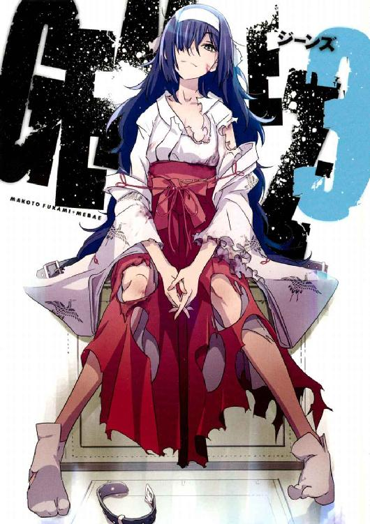
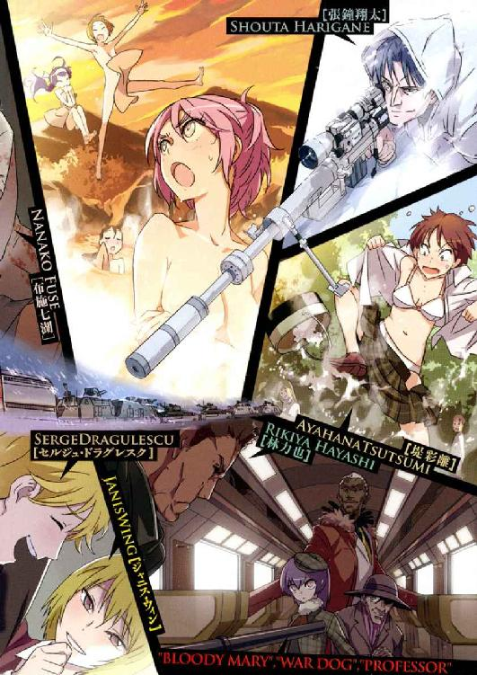
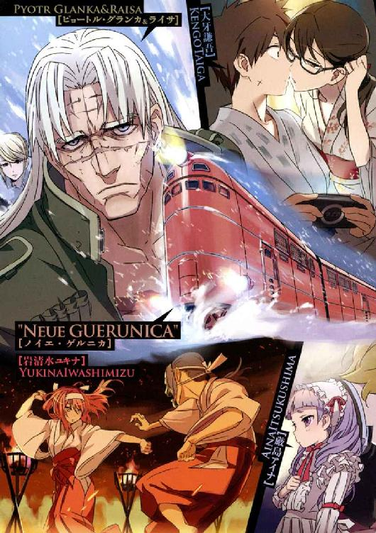
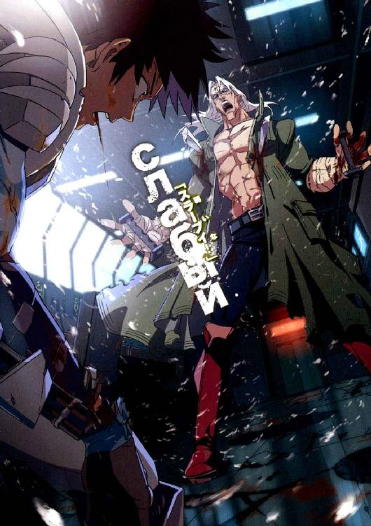
本作品の全部または一部を無断で複製、転載、配信、送信したり、ホームページ上に転載することを禁止します。また、本作品の内容を無断で改変、改ざん等を行うことも禁止します。
本作品購入時にご承諾いただいた規約により、有償・無償にかかわらず本作品を第三者に譲渡することはできません。
本作品を示すサムネイルなどのイメージ画像は、再ダウンロード時に予告なく変更される場合があります。
本作品は縦書きでレイアウトされています。
また、ご覧になるリーディングシステムにより、表示の差が認められることがあります。
口絵・本文イラスト mebae
ＣＯＮＴＥＮＴＳ
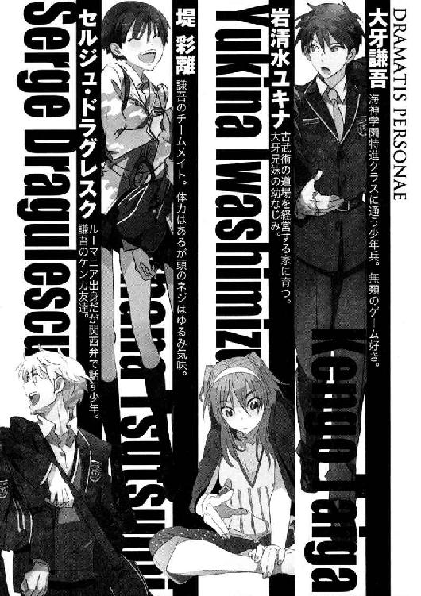
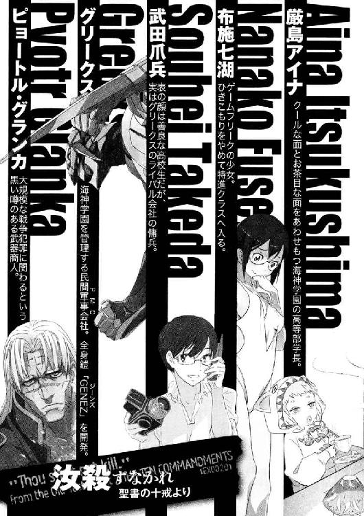
プロローグ
広い敷地と自由な校風──ここは、私立海神学園高等部。
海神学園の特進クラスは、民間軍事会社グリークスの新兵育成部門を兼ねていた。
「謙吾はクソ真面目ちゅうかなんちゅうか......」
セルジュ・ドラグレスクがぼやいた。
「訓練に真面目で何が悪い」
と、遊びのない口調で大牙謙吾が言う。
「ＧＥＮＥＺと取っ組み合う俺の気持ちもちょっとは理解しろや、コラ」
「ちょっとくらいなら理解してるさ。そうだな......デビッド・リンチの映画くらいは」
「それはもう、全然理解してへんってことやないのか!?」
謙吾はまだ若いが、すでに戦歴はベテランの域に達しつつある、グリークスの特殊契約社員──学生傭兵だ。海神学園の特進クラスに所属し、トップクラスの精鋭チーム「ビーバス＆バットヘッド」のエースとして知られている。
「ふッ！」
謙吾は遺伝子系強化外骨格──ＧＥＮＥＺで完全武装していた。伸縮可能な牙は前腕部装甲内部に収納し、打撃戦のスタイルをとっている。
特進クラス、地下格闘訓練場だ。超人的な戦闘に対応した、普通の体育館の四倍はあるだだっ広い空間。コンクリート打ちっぱなしの内装は無機質だが、あちこちに流れ弾や的を外した打撃の痕が残っている。いくら補修しても壊すペースが早くて追いつかないのだ。
謙吾は、同じく特進クラスのセルジュと練習試合をしている。
セルジュは、謙吾と同じくビーバス＆バットヘッドの一員であり、謙吾の相棒であり、ツッコミ役まで兼ねている。おまけに容姿端麗で、頭脳明晰運動神経抜群。なのに、なぜか女性にもてないのを本人も不思議に思っている。
第三世代といわれる特殊なゴーレムであるセルジュと、生身の人間が格闘戦を演じることはできない。そこで、ＧＥＮＥＺをつけた謙吾の出番となる。昼休み前の選択授業。二人には特別プログラムが組まれていた。
セルジュは特殊能力を持っているが、そればかりに頼っているといざというときに困ることになる。能力は、無尽蔵に使えるわけではない。最後の最後で役に立つのはやはり自分の肉体だけだ。武器や能力をすべて失っても、素手で相手を倒せなければプロの兵士とはいえない。
軽いパンチの応酬のあと、謙吾は鋭いローキック。
軽自動車くらいなら簡単に吹っ飛ばすＧＥＮＥＺの蹴りを、セルジュはすねでがっちりとブロックした。
しかし、この蹴りがブロックされるのは計算のうちだ。謙吾はそこから軽く跳びあがって、両足でセルジュの左足を挟み込み、体をひねってひっくり返す。下段蹴り、そしてカニばさみからのテイクダウン。謙吾が得意とする格闘技──シラットの動きだ。
「く！」
すかさず次の動きに移行し、セルジュの足関節をとりにいく謙吾。
セルジュは素早く体を半回転させて謙吾の手をかわし、逆にマウントポジションを狙う。
「寝技もやるな！ セルジュ！」
「第二次世界大戦からのキャリアをなめんなや！」
馬乗りになってきたセルジュに、謙吾は仰向けに寝転がった姿勢から蹴りを打ちこんで間合いを離す。
二人、ほぼ同時に立ちあがって──授業終了一〇分前のブザーが鳴った。
「......今日は、こんなところか」
セルジュが残念そうにつぶやいた。
「あとで、林さんにカニばさみからどう仕留めるか訊いてこよう......」
そして、残念なのは謙吾も同じだった。
「林さん？ 特進上級生の？」
「ああ」
林力也。謙吾たちの先輩で、軍隊格闘技の達人。顔の老け具合をいつも気にしている。
「あの人は今、任務で海外のはずやで。確か、張鐘先輩も一緒だったはずや」
特進クラスでも一、二を争う狙撃の名手、張鐘。顔が悪く、しかも無愛想だが、凄腕だし実は優しい性格の持ち主。これは余談だが、謙吾とはテレビゲームに関して趣味が一致している。休暇のほとんどを恋愛シミュレーションゲームの攻略に費やす男だ。
「そっか。じゃあ帰ってきてから、だな」
謙吾はＧＥＮＥＺを脱いで、装備科の人間に渡した。セルジュとの練習試合をもとに、制御系に様々な微調整がくわえられる。
「ハラ減ったなー」
「今日は弁当も持ってきてないし、食堂に行くか」
そんな会話を交わしつつ謙吾とセルジュが歩き出すと、途中の廊下でチームメイトの岩清水ユキナと不意に出会った。
「あ」
「謙吾、それにセルジュも」
いかにも気が強そうなユキナは、事実、気が強い。古流武術の心得があり、時代劇をこよなく愛する、田舎育ちの女の子。背は普通だが、手足が長くスタイルがいい。鼻筋が通っていて、全体的に鋭く々しい容貌の持ち主。
海神学園は全室土足ＯＫなので、ユキナは制服のスカートに膝の上まである革のロングブーツを組み合わせていた。海神学園の短いスカートとロングブーツの挟間から、肉感的な太腿がちらりと覗く。
謙吾がいなければ、セルジュはユキナに一目ぼれしていたかもしれない。それほど魅力的な少女だ。
謙吾と顔を合わせたユキナは、手を後ろに回してなんだかもじもじしている。こういうところがまたたまらん、とセルジュは思う。謙吾とユキナのいくつかある共通点。それは、二人とも極端に恥ずかしがり屋で、恋愛に対して臆病ということだ。
「戦場調理の授業だったんだ」
特進クラスの授業は変わっていて、すべてが戦争に関連している。
戦場調理もその一つだ。基地やキャンプ地での料理を勉強するこの授業は、危険が少なく難度も低いので人気がある。ただ、同じ調理系でも「サバイバル料理術」は人気がない。爬虫類や昆虫を食べないといけないからだ。
サバイバル料理術と違って戦場調理は選択授業なので、謙吾やセルジュはその存在をすっかり忘れていた。
「作った料理が、その、少し余ったんで......持ってきた。ウサギの肉を使ったカレーだ。ここで訓練してるって聞いてたから......」
ユキナが、手を後ろにして持っていた皿を謙吾に向かって差し出した。
皿の上に白いごはんが盛られて、やや濃い色のカレーがかけられている。まだできたてを持ってきたらしく、皿を覆う食品用ラップフィルムには湯気と水滴が目立つ。
「おお、ちょうど腹が減ってたんだ。ありがとう！」
馬、牛、豚、羊の肉は癖がなく食べやすいが、牧場や店以外ではまず見かけない。ウサギや鹿、イノシシの肉ならば、森林や山地に罠をはれば比較的たやすく入手可能だ。調理実習で普段から口にしておくことで、野生の獣の肉に慣れていく。
「さっそく、いただきます」
謙吾は皿からラップをはがし、キッチンから大きめの木さじを持ってきて立ったまま食べ始める。本当に腹が減っていたのだろうが、それにしても行儀が悪いことこのうえない。しかし、いくら性急な立ち食いでも、美味そうにカレーを頰張る謙吾を見てユキナははにかんで幸せそうだ。
もう結婚しちゃえよお前ら、とセルジュは思う。
「美味い！」
と謙吾が笑顔を見せて、ユキナは「よかった......」と胸をなでおろした。
セルジュに言わせれば、謙吾の「美味い」はあてにならない。謙吾は、いざとなれば脱水症状を防ぐ錠剤だけで、他には飲まず食わずでも一週間近くジャングルに潜伏することができる男だ。食う時はよく食うが、食わない時はまったく食わない。プロの兵士とはそういうものだ。そんな人間の味覚を誰が信用できる？
「ユキナ。俺には俺には？」
セルジュは、あまり期待をせずに訊ねた。
「もちろん、セルジュにも」
意外にもユキナはセルジュのことも忘れていなかった。肩にかけていたカバンの中から、半透明のプラスチック容器を取り出してセルジュに手渡す。
「おお！」
「カレーのついでに作らされたヘビの肉だんご。栄養満点だ」
セルジュは、容器のふたを開けてがっくりと肩を落とした。見た目は鶏のつくねに似ているが、質感は粉っぽくパサパサしている。肉入りカレーに比べると、あまりにも大雑把な料理と言わざるをえない。
（なんやねんこの明確な差別！）
セルジュは愕然としたが、これでユキナは無自覚だし、謙吾は何も気づかないというのが恐ろしい。事実、ユキナはセルジュに向かって無邪気な瞳で「どうした？ 肉だんごは嫌いか？」と訊いてくる。つまり、本人に悪気はなかった。謙吾のことを思うあまり、無意識のうちに料理に差をつけてしまったのだ。
ところが、次の瞬間、謙吾が余計なことを口にした。
「俺は、ウサギよりヘビ肉のほうが好きだな。あっさりしてて」
「え！」
思わず驚きの声をあげたのはセルジュだ。
（なに余計なこと言うてんねん！）
無神経すぎる。謙吾はアホみたいに美味い美味いと言い続けていればよかったのに。そんなことを言われれば、ユキナが傷つくのはわかりきっているではないか。案の定、ユキナはたちまち不機嫌そうに頰をふくらませ始める。
「ふん......そんな、お前の好みなんて知ってるわけないだろ！」
「なに怒ってんだよ、ユキナ！」
戦場では冷静で頼りになる謙吾が、なぜ日常生活においてはここまでのヘタレになってしまうのか──セルジュには不思議でならない。
「ウサギの肉から臭みを抜くのは大変なんだぞ！」とユキナ。
「だから、あれはあれで美味かったんだって！」と謙吾。
「今日も日本は平和やなぁ......」
犬も食わない口論を始める謙吾とユキナの横で、セルジュは静かにお茶を飲む。
＊
時速三〇〇キロで、農業国フランスの豊かな田園風景を流線形の車体が貫く。
国際高速列車ユーロスターだ。
日本の新幹線よりも洗練された槍のようなデザインのユーロスターの車体は、最新のリニアモーターカーを連想させると同時に、ヨーロッパが誇る高速列車ＴＧＶの設計思想を受け継いでいる。
パリ発のユーロスターは、あと一〇分ほどでドーバー海峡のトンネルに差し掛かる。そこを抜ければ、目的地のロンドンまではあと少しだ。
ユーロスターは、パリとロンドンを二時間ちょっとで結んでいる。
基本は二〇両編成であり、機関車は二両、食堂車が二両、客車が一六両。客車はファーストクラス（ビジネスプレミア）が六両で、スタンダードクラスが一〇両だ。
ユーロスターのファーストクラスは、通路を挟んで一列と二列に座席が並んでいる。
ファーストクラス七号車のほぼ中央にある二列の席に、海神学園特進クラスの制服にロングコートといういでたちの二人の男が腰を沈めていた。
どちらも学生のはずだが、信じられないほど大人びている。また、体も大きいので、本来ゆったりとできるサイズのシートも狭苦しい。
「......男二人でヨーロッパ鉄道の旅とか」
制服を着た特進クラスの男──張鐘が心底うんざりしたようにつぶやいた。
「なんだ、文句でもあるのか。大事な任務だぞ」
と、同じく特進クラスの林力也がたしなめる。
「他のチームがうらやましい。一人は女子が入るものだ」
狙撃の名手・張鐘は長身瘦軀。ぎょろりとした目つきをしている。
「今回は隠密作戦で、俺たち二人だけで十分だった」
林は、ベレー帽を被った大男。体のあちこちに銃器とナイフを装備している。顔を見れば無精ひげを生やしていて、刃物傷が二すじ。若い頃のアーノルド・シュワルツェネッガーを連想させる厳めしい顔立ちだ。
「それに正確には男三人。護衛も男ばかり一六人ですよ」
と、パリから同行しているイギリス人の青年が二人の会話に割り込んできた。その青年は、通路を挟んだ一列側の席に座っている。
彼の名前はジョセフ。
柔らかそうなブラウンの髪の優男だが、一流の工作員だ。
彼の所属は、イギリス情報局秘密情報部。略称はＳＩＳ。しかしかつては軍事情報部第六課であったことから、ＭＩ６とも呼ばれる。
現在ではＳＩＳよりＭＩ６の方が一般的な呼称となっており、所属している職員たちも後者を好んで使う。あの有名な００７ことジェームズ・ボンドは、このＭＩ６のエージェントという設定だ。
ジェームズ・ボンドは架空のスパイだが、ＭＩ６は実在する。
張鐘と林は、ＭＩ６のスパイがどう名乗るのか楽しみにしていた。
──やはり映画のように「００ナンバー」がついているのだろうか。
しかしＭＩ６の彼は「情報部、特別課のジョセフ・スペンサーです」とごく普通に名乗った。特進クラスの二人は少しだけがっかりしたものだ。
今回の仕事は、ＭＩ６からグリークスへの依頼だった。
パリ郊外で、ある重要な「品物」が発見された。発見したのはフランス対外治安総局のエージェントだったが、その品物は本来イギリスのものだったので、ＭＩ６のジョセフが引き渡しのために派遣されたのだ。
ジョセフが運ぶ品物には、「Ｄ荷物」という暗号名がつけられた。
デルタパッケージはチタン合金製のアタッシェケースに収納され、電子カードキー、指紋、暗証番号といったセキュリティが何重にもかけられている。デルタパッケージとは一体何なのか。その答えは、応援として臨時で雇われただけの張鐘や林には知るよしもない。
パリからロンドンまで、様々な移動方法が検討されたが、最も安全でしかも目立たないという理由でユーロスターが選ばれた。
今回は全車両フランス政府の貸し切りであり、スタンダードクラスにも一般の客は一人も乗車していない。
ジョセフ、そしてデルタパッケージには一六人の護衛がつけられた。
フランス国家憲兵隊武力介入グループの隊員たちだ。
隊員たちは防弾ベストと分厚いヘルメットで身を守り、マグナム弾が撃てるリボルバーやＭＰ５サブマシンガンで武装している。
ＧＩＧＮは、創立から一〇年で六五〇以上の作戦を実施し、一〇〇〇人以上のテロリストを逮捕したという。
ＧＩＧＮがそうしているように、張鐘と林も車内に銃器を持ち込んでいる。ユーロスターにはＸ線による手荷物検査があり、もちろん危険物や武器の持ち込みは禁止されているが、今回はフランス政府から特別に許可を出してもらっていた。
今、張鐘と林がいるのが七号車。ＧＩＧＮは八号車と九号車に分かれて乗り込んでいる。
ロンドンの駅に到着したら、護衛はＧＩＧＮからイギリスの陸軍特殊部隊に引き継がれる。ＳＡＳは世界最高峰、ＧＩＧＮに勝るとも劣らない精鋭部隊だ。
「しかし......デルタパッケージの正体は気になるな」
窓際の張鐘が、林力也の肩越しに、アタッシェケースへと探るような視線を送った。
「俺や林に知らされているのは、そいつがとても危険なシロモノだってことだけだ。俺たちのほかに、三組もオトリが動いているんだろう？ 護衛してくれるのはＧＩＧＮにＳＡＳなんて、こりゃあ、なんとも贅沢な話だぜ」
「詳しいことは僕も知りませんよ」と、ジョセフは唇を苦笑の形に歪める。「フランスのエージェントがこれを入手して、すぐにアタッシェケースに『封印』された。ＭＩ６上層部からも、重要なものだから必ず持ち帰ってこい、としか言われてません。ただ──」
「ただ？」
「歴史を変えた兵器の一部......そんな噂を耳にしたことが」
「そのサイズだと......生化学兵器か？」と林。
生化学兵器──細菌や毒ガスなら、アタッシェケースに入るサイズでも納得だ。
「そうではなさそうですよ。これも噂ですが......」
ジョセフが何か言いかけた、その時だった。
突然激しい銃声が鳴り響き、全員が装着している無線のイヤホンに雑音と悲鳴らしきものが飛び込んできた。
「敵襲か......!?」
そう低くうめいて林が中腰になった。周囲を見回すが、この車両にはまだ異常がない。隣の八号車か、さらにその向こうの九号車に敵が侵入してきたのだ。先に発砲したのは、正体不明の敵か、それとも護衛のＧＩＧＮか。
どちらにしても、まずい事態なのは間違いない。
「バカな！ どうなってる」
と、ジョセフが焦った声をあげる。
「情報漏れだな。敵の狙いは、デルタパッケージとみて間違いない」
恐ろしく冷静な声で張鐘が言った。
「たぶん、ＭＩ６のミスだぞ。俺と林は、グリークスの情報部にさえ今回どんな移動手段を使うかは秘密にしていた」
「......そんな......」
「車内で戦闘か......俺が一番得意なのは狙撃なのに......」
ぼやきつつ、張鐘は懐に手を差し込んで脇にぶらさげた拳銃を確認する。
「戦場が選べるか。近接戦闘に備えろ」
そう言って林は立ち上がり、大きめの車輪つきスーツケースを荷物用のスペースから引っ張り出した。スーツケースはカモフラージュに過ぎず、その正体はグリークスの兵士が使う武器の運搬ケースだ。
林がスーツケースを開けると、中にはコンパクトなライフルやサブマシンガン、ガスマスクや手榴弾まで収納されていた。
「やれやれ......骨が折れそうだ......」
と、張鐘は林から受け取ったライフルの安全装置を解除して、ため息をつく。
六両あるファーストクラス車両の八号車に、ＧＩＧＮの小隊長を含む第一分隊八人が待機している。
今回の護衛作戦に動員された隊員は一六人。一つの車両にその全員が入ると狭すぎるので、九号車に残った八人──第二分隊が乗り込んだ。
銃声がしたのは、九号車からだ。
しばらく銃声が続いてから、やがて無線が途絶えて、静寂が訪れる。
ＧＩＧＮの小隊長は、七人の部下に銃器の安全装置を解除するように命じた。そしてそれぞれ遮蔽物をとり、車両間の通路に銃口を向ける。
恐らく、九号車にいた八人は全滅したのだろう。何者かが、ＭＩ６のエージェントが持ったデルタパッケージを狙っている。
ＧＩＧＮの誇りにかけて、守り切らねばならない──。
それから間もなく、敵が姿を現した。信じられないほど堂々と、正面からドアを開けてこの車両に入ってくる。
＊
九号車のＧＩＧＮ隊員たちを全滅させた三人の男女が、大股でユーロスターの車内を進んでいく。九号車から八号車へ。残った八人にサブマシンガンの銃口を向けられるが、歩みを止めたりはしない。三人の瞳に恐れを示す色は一切ない。
三人の狙いは、ＭＩ６が運んでいる「例のブツ」だ。
老人。
少女。
アフリカ系の黒人。
そんな、統一感のない三人組。
「フランス料理は最高だからな。フランス人と戦うのは気が引ける」
と、老人が口をひらいた。
少女に向かって言ったらしいのだが、少女は「............」と無言で無反応。そのかわりに、黒人の男が「料理は関係ないですよ、教授」と答える。
この老人は「教授」と呼ばれていた。正確な年齢は不明。目が鋭く、全体的に肉が薄い。乾いた質感の白い皮膚には、細い筆で書いたような滑らかなしわがある。その風貌は、まるで老いた鷹のようだった。
黒衣の教授は古めかしい片眼鏡をかけ、懐からは懐中時計の金の鎖が垂れている。
「哀れな子羊たちだ。なるべく痛みのないように、一瞬で壊滅させましょう。そして『例の品物』を手に入れる」
黒人が言った。
「相変わらずウォードッグは優しいことを言うね」と教授。
アフリカ系黒人の名はウォードッグ。
明らかにあだ名だが、本名は誰も知らない。
二メートルの長身でドルチェ＆ガッバーナの白いスーツを颯爽と着こなし、いかにも高級そうな派手な毛皮のコートを羽織っている。熱心なクリスチャンであり、丸坊主に近い髪を銀色に染めている。
「............」
少女は相変わらず無言のままだ。
彼女は感情が薄い。
そのように「造られた」ものだ。
少女は、チェック柄の制服姿である。伝統ある寄宿学校の制服に見える。
大理石のように白い肌、うつろな人形の瞳──。腰まで垂らした長い髪は、晴天の空よりも澄んだ青色だ。
ＧＩＧＮの隊員たちが、ＭＰ５サブマシンガンを全自動で撃ち始めた。
ウォードッグと少女が前に出た。少女は、教授を守るために両手を大きく広げている。
隊員たちの狙いは正確だ。サブマシンガンから放たれた大量の弾丸が、ウォードッグと少女の体に吸い込まれていく。ドスドスドス、と鈍い着弾音が続く。
「......え!?」
特殊部隊の男たちは目を丸くした。少女の白い肌が、弾丸を跳ね返していたからだ。弾丸を受けても、微動だにしない。制服に黒く焦げた弾痕がいくつも生じたが、それだけだ。少女は、明らかに普通の人間ではなかった。
そして、ウォードッグだ。彼も無傷だった。
ウォードッグの影から這い出た「何か」が、かわりに弾丸を受けて彼を守ったのだ。
自分の影に身を潜めていた「何か」に、ウォードッグが命じる。
「出番だ。皆殺しにしろ」
命令を受けた「何か」は、ウォードッグの忠実な下僕だった。黒い旋風となって、ユーロスターの車内を縦横無尽に駆け回り、鋭い爪と獰猛な牙で防弾ベストごと隊員たちを引き裂き、嚙み砕いていく。
「主よ、彼らの魂を救いたまえ」
たくさんの死体を見て心を痛めたウォードッグは、右手で十字を切った。
「......よく言っておく」
＊
車間のドアについた小窓から、流れ弾に気をつけながら八号車の惨状を見た林は、苦い顔をして「間違いない、教授とウォードッグだ」と低くつぶやいた。
その名前を聞いて、ライフルを構えた張鐘が「超一級の特殊傭兵じゃないか！」と驚きの声をあげた。
現役の傭兵は普通、名前を隠す。この業界で名前を知られている人間には三種類しかいない。引退しているか、間抜けか、あまりにも強すぎるか、だ。教授もウォードッグも、引退していないし間抜けでもない。消去法で答えは明らかだった。
戦闘用ゴーレムであるセルジュ・ドラグレスクや、ナイチンゲールの力で不死化するギルガメシュなど、この世界には常識では考えられない特異な力を持った兵士たちがいる。教授とウォードッグも、そういった類の「力」を使う。
「教授が連れている、あの少女は何者かわからんが......一般人、ってことはないだろう」
林は敵の突入に備えて、ドアから離れて身を低くした。
「あんたは逃げろ、敵の狙いはそれだ」
張鐘はＭＩ６のジョセフに向かって言った。
「しかし......」と、ためらうジョセフを、林が乱暴に突き飛ばす。
「ここでデルタパッケージを奪われては元も子もない！」
「わ、わかりました......！」
ジョセフは、先頭の機関車両に向かって駆けだした。運転士に状況を説明してスピードを落としてもらい、ユーロスターから飛び降りるつもりなのだ。それからどこか適当な場所に身を隠して、無線か携帯電話で応援を呼ぶ。なんとか車を入手して、近くの警察署か軍事基地に逃げ込んでもいい。
ファーストクラス車両には、張鐘と林の二人だけが残った。
「じゃあ、やろうや。林先輩」
「お互い、命は大事にいこうか。張鐘──って、ちょっと待て」
「どうした？」
「俺とお前は同学年だろう。なんで先輩、なんだ」
「あ、それは......お前が老けてるから、つい」
「顔の老け具合に関しちゃ、お前にだけは言われたくない！」
＊
背後で、グリークスの兵士たち──張鐘と林──が戦闘を開始した。激しい戦闘の気配を感じるが、振り返らずにジョセフは走る。
ジョセフはケンブリッジ大学を卒業し、愛国心から情報局秘密情報部の職員となった。パン屋で働いている恋人は、ジョセフが情報機関のエージェントだとは知らない。それどころか、親兄弟もジョセフのことを外務省の幹部候補だと信じ込んでいる。そうやってプライベートを犠牲にしてでも任務に尽くすのが、プロのエージェントというものだ。
幸せは、すぐ手の届くところにあったのかもしれない。高学歴でルックスもいいジョセフには、いくらでも職業を選ぶことができた。それでも、自分の信念と愛国心を優先してこの道を進むと決めたのだ。女王陛下のエージェント。これでいいんだ、これが俺だ、と胸のうちでつぶやく。今さら後悔があるわけでもない。
食堂車、さらにスタンダードの車両を次々と駆け抜けていく。走りながらジョセフは無線と携帯電話を試してみたが、電波妨害でもかかっているのか、完全に不通となっていた。敵の襲撃は、用意周到なものだ。
ようやく先頭に近い一号車にたどりついて、ジョセフは驚きのあまり目を見開いた。
「──っ！」
一号車と機関車両の間にあるドアは普通のものより頑丈で、事故や犯罪を防ぐために厳重な鍵がかかっている。そのドアが、破壊されていた。信じられないことだが、変形して伸びた金属部品を見ると、恐ろしい怪力で引き剝がしたとしか思えない。
破壊されたドアの傍らに、一人の若い女が立っていた。右手に凶悪なコンバットナイフを持っている。その刃からは尋常ではない量の血が滴り、女が殺人を犯したことを示していた。殺されたのは──運転士だろう。
敵は、三人だけではなかった。
四人目の女に、先回りされていたのだ。
鍵のかかったドアを引き剝がすなど、あまりにも人間離れした行動だが、それが可能ということはこの女は恐らく──。
「待ちくたびれました」
女が、ジョセフに向かってあくびまじりに言った。金髪碧眼で、メガネをかけている。
「！」
ジョセフは右手に拳銃を構えていた。左手には、デルタパッケージが入ったアタッシェケースをさげている。右手の拳銃を女に向けようとするが、それよりナイフが投じられるほうが早かった。
アンダースローのナイフがジョセフの喉に突き刺さり、後頭部まで貫通する。優秀な男の短い一生が終わりを告げた瞬間だった。
第一章 異常な学校の平穏な空間
岩清水ユキナは、一時期大牙兄妹が暮らす家の近所で暮らしていたが、それから義理の両親の都合で超がつく田舎に引っ越すことになった。田舎での生活には不満があったし、大牙兄妹とも離れがたかったが、まさかそこで家族を捨てるわけにもいかない。
これはユキナもあとから知ったことだが──その超田舎は事情をよく知る一部の人間からは「天照流の隠れ里」と呼ばれていた。
ユキナは、夢を見ている。
「......ユキナは、数奇な星の下に生まれた娘......」
そう言っていたのは、義理の母だったか。それとも村にある神社の巫女だったか。
「きっと、その特異な力のせいで争いに巻き込まれることに......」
特異な力。そして争い。どちらにも、心当たりがある。
「ユキナには、たくさんの武術の技を教えました。いずれそれが役に立ちましょう」
実際、役に立っている。やはり人間、最後は身につけた技術で真価が決まる。
「ユキナの力を知る『彼』が四三歳になれば、きっと恐ろしいことが」
──彼？
彼、とは誰のことだろう。隠れ里の誰かだろうか。
四三歳という数字に、何か意味はあるのだろうか。
恐ろしいこと、とは一体なんのことなのか。
１
ようやく空が白み始めた早朝、悪夢にうなされて寝汗をかき、快眠にはほど遠い時間を過ごしたユキナは、奇妙なけだるさとともに目を覚ました。カーテンの隙間から弱い陽光がさしこんでくるが、海神学園学生寮の自室は薄暗い。なんとなく電気をつける気分になれなくて、ユキナはそのままベッドの上でパジャマと下着を脱いで浴室に向かった。
（変な夢を見た......）
疲れた表情でシャワーを浴びるユキナ。ルネッサンス期に作られた彫刻のように優雅で官能的な肢体の表面で水滴が弾ける。長い髪の毛がお湯を含んで少しだけ重たくなって、きめの細かい肌にはりつく。
ボディソープで体を洗いながら、ユキナは最近また少し胸が大きくなったような気がして、そのうちまた新しい下着を買わなきゃな、と思う。その時、謙吾はどんな下着が好きなのかな......という思考が脳裏をかすめて、ユキナは慌てて頭を左右にぶんぶんと振った。
「ふう......なに考えてるんだ私は」
それにしても──嫌な夢だった。
何が、具体的に、どう嫌だったのかはわからない。断片的で、ぼんやりとした夢だった。それでいて、胸の奥にしこりのようなものが残る。
『きっと、その特異な力のせいで争いに巻き込まれることに......』
特異な力──不死であり、不死を与える特殊な少女、ナイチンゲール。
ふと、怖くなる瞬間がある。
もしかして、私は老衰で死ぬこともないのだろうか？
死なないのは、正直便利だ。病気もケガもない生活が気楽でないと言えば噓になる。しかし、これが永遠に続くとしたらどうだろう。想像するとぞっと背筋が寒くなる。
「なんだかな......」
つぶやいて、自嘲し、軽く髪を洗うユキナ。
さっぱりしたユキナは、タオルで体を拭いてドライヤーで髪を乾かす。そのまま海神学園の制服に着替えようと思って、体にタオルを巻いただけの半裸でリビングへ。リビング・クローゼットに、替えの下着と制服が収納してある。
そういえば、まだ部屋の電気をつけていなかった。ユキナはリモコンのボタンを押す。
部屋が明るくなって、そこで初めてリビングに自分以外の誰かがいることに気づいた。
恐らく、ずっと年下の少女だ。
気配には敏感なユキナが今までその少女を見逃していたのは、彼女が土下座をして息を殺していたからだった。
「うわあああッ！」
思わず、悲鳴をあげてしまう。
「お、おどろかせてすみませぬ！」
少女の口から、舌足らずな幼い声が発せられた。それはユキナにとって、まったく聞き覚えのない声というわけではなかった。
少女が顔をあげると、知り合いだとわかった。
ユキナは「なんだ......お前か」と安心するが、それもつかの間。
「どうした、ユキナッ！」
先ほどの悲鳴を聞きつけて、ＦＮ５・７拳銃を構えた謙吾が駆けつけてきた。
学長の配慮で、ユキナの部屋は謙吾の部屋の隣に割り当てられていた。謙吾が護衛しやすくするためだ。
ドアの鍵も、謙吾の指紋で解除されるようになっている。もちろん普段はノックしてからユキナが内側からドアを開けてくれるのを待つが、緊急時は別だ。
「け、謙吾！ 落ちつけ！ これは......」
謙吾が誤って少女を撃たないように、ユキナは手を広げて一歩前に出た。
しかしその拍子に、ユキナの体に巻かれていたバスタオルがはらり......と床に落ちる。
「......っ！」
刹那、謙吾とユキナの表情が凍てついた。青ざめたあと、徐々に紅潮していき、やがて爆発する。ユキナは胸と下半身を手で隠してうずくまり、恥ずかしさのあまり瞳を潤ませて、謙吾は目のやりどころに困って、それでも状況が把握できないので銃口をさげるわけにはいかない。混乱する二人を交互に眺めて、少女はきょとんとした顔をしている。
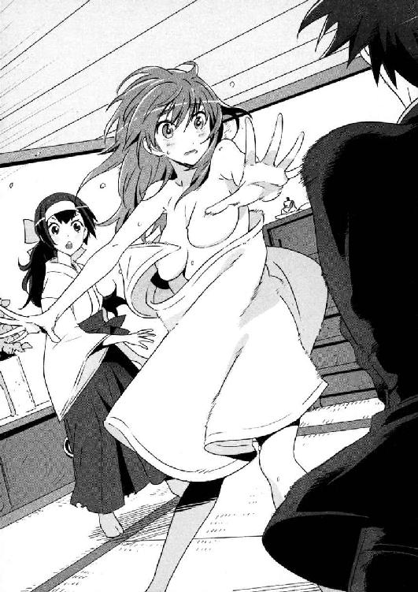
──そして五分後。
ユキナはなんとか海神学園の制服を着用し、その少女が知り合いだと謙吾に説明した。
「大丈夫だ。怪しいものではない」
「はい！ お姉さま、お久しぶりでございます！ そちらのかたは......」
「ええと......俺は大牙健吾」
「はじめまして！ 越智佐鳥、ともうします」
少女が、謙吾に向かって土下座をして名乗った。舌足らずなしゃべり方なので、彼女の「もうします」が「もうしましゅ」に聞こえた。それがちょっと可愛くて、ユキナと謙吾は思わず「ほう......」と和んだ。
佐鳥は小柄だ。小学生くらいだろうか。海神学園のこども学長、厳島アイナよりも少し大きい程度だ。顔も小さいので、つぶらな瞳が大きく見える。ハムスターやフェレットといった小動物を連想させる顔立ちだ。子供っぽく、黒髪をふわふわとしたポニーテールにしている。
ボロボロの巫女装束姿で、汚れているせいか白い小袖が灰色になっていた。
「とりあえず、土下座はやめてくれないか」
こんな小さな子に頭を下げられていると、なんとも居心地が悪く、謙吾は立ち上がるようにうながした。謙吾にそう言われても「でも......」と渋っていた佐鳥だが、ユキナが「私からも頼む」と言えばすぐにしたがった。
「それにしても......妹さんがいたなんて初耳だ」
「いや、謙吾。佐鳥は妹じゃない。『妹弟子』だ」
「......弟子？」
「はい！」と、佐鳥が元気よく声をあげた。「姉弟子──ユキナ姉さまのご両親の道場で、拙者も武術を学んでおりました......！」
拙者──その言葉を聞いて、謙吾は思わず眉間にしわを寄せた。ユキナもたまに時代劇のような口調になるが、佐鳥はもっとひどかった。どんな生活を送っていたら、小学生くらいの女の子がこんな言葉をつかうようになるのか。
しかしそれにしても、よくここまで忍び込むことができたものだ。海神学園の警備は、何か事件が起きるたびに強化されている。今では、二四時間体制で無人偵察機まで飛ばしている。こんな小さな女の子には学生寮への侵入は不可能なはず──。いや待てよ、と謙吾は思いなおす。海神学園のセキュリティシステムは「プロフェッショナル」や「特殊部隊」を想定して組み上げられたものだ。その想定外の侵入者には、もろい一面があるのかもしれない。こんな小さな女の子だからこそ、侵入できたのか。
謙吾がそんなことを考えていると、ユキナが小声で話しかけてきた。
「ところで、謙吾......わ、私のはだかだけど......」
「み、見てない！」
すかさず答える。
「そんなわけあるか！」
ユキナが泣きそうな顔で怒声をあげた。
「確かに。見たよ！」謙吾は、自分の発言に無理があったのを認めた。「でも、ここは見てないことにしておこう」
「そんな......」
「真実だけが人を幸福にするとは限らないんだ」
「うー......なんだそれ」
もっともらしいことを言う謙吾に、ユキナはあえてこれ以上抵抗しなかった。
海神学園ほど美しい場所は、海外の観光地でも珍しい。丁寧に整備された花壇には季節の花が咲き乱れ、校舎と校舎をつなぐ歩道には石造りの古風な屋根がかかっている。
伝統ある大聖堂のような威厳溢れる高等部の第一校舎。安定した交差ヴォールト天井の廊下を歩いていくと、高等部学長室に行きあたる。
分厚い絨毯に古めかしい調度品、マイセンの紅茶セットにマホガニー材の本棚──中世ヨーロッパ貴族の書斎のような豪華な部屋の中央に、いつも眠そうな目をした銀髪の少女が座っている。海神学園高等部の「こども学長」こと、厳島アイナだ。
こども学長の前には、謙吾とユキナ、そして越智佐鳥が並んで立たされている。
「......あなたたちは......どうしてこう次から次へとトラブルを持ち込んでくるんですか......」
そう言ってから、これみよがしにため息をつく。
「別に、わざとやっているわけではなく......」
「言い訳無用......！」
こども学長はピシャリとユキナの弁解を遮った。
「お姉さまは悪くありません......！」
叱るこども学長の前に、今回のトラブルの種──佐鳥が進み出る。
「......越智......佐鳥さんでしたっけ......なんなんですか、あなたは......」
「お子様のくせに、ユキナ姉さまに対して無礼であるぞ！」
佐鳥が強気な瞳でこども学長を見据えて言った。
こども学長はこどもだが、威厳がある。威圧感がある。たとえ年齢差があっても、高等部特進クラスの生徒たちはなかなかこども学長に刃向かうことができない。
しかし、佐鳥はこども学長に睨まれても堂々としたものだった。
「......無礼......ですって？ まったく......そっちこそ立場をわきまえなさい......」こども学長は珍しく怒りもあらわに眉をつりあげた。「......第一、あなたのようなお子様にお子様と言われる筋合いはありません......！」
「あなた、いくつなんですか？」
突然、佐鳥は訊ねた。
「私？ 私は本来なら小６といったところでしょうか」
こども学長が答えると、佐鳥は勝ち誇ったような笑みを浮かべる。
「あたしは、中学生ですよ。一三歳です。あなたより年上なのです。あなたより背も高いし、胸も大きいのです」
ぷちん、とこども学長アイナのこめかみのあたりで、何かが切れるような音がした。興奮して細い血管の一本でも切れたのか、いわゆる堪忍袋の緒というやつか......。
「いい度胸ですね......」と、こども学長は机の上に設置された電話を手に取る。「生徒会憲兵隊を呼んで......不法侵入と上官侮辱罪で監獄に......」
「わー！」
ユキナと謙吾は、慌ててこども学長の手を押さえて通報を防いだ。
生徒会憲兵隊。海神学園は準軍事組織であり、軍隊内の警察は憲兵と呼ばれる。
学園内で事件が起きても、民間軍事会社の少年兵育成機関という「裏の顔」がある以上、一般の警察に通報することは避けねばならない。
そこで組織されたのが、ＳＣＰＧというわけだ。
普段は彼らも特進クラスの生徒として授業や訓練を受けているが、学園内で教師や警備員にも対応できないレベルの事件が起きればほんの数分で現場に駆け付ける。特に成績優秀な生徒ばかりが集められているので、戦えば当然のように強い。
「ここは穏便に、学長！」
「すみません、あとでよく言っておきますから！ ほら、佐鳥も謝って！」
そう言って、ユキナは佐鳥の肩をつかんで頭をさげるよう促した。
「ううー......！」
と、佐鳥は不服そうに低くうめく。納得はしていないようだったが、それでもユキナに「謝れ」と言われれば逆らいはしなかった。
「ふん......」
こども学長は深呼吸。
「......まあ、いいでしょう......」
これでようやく、真面目な話を進める空気になった。
「ええと......佐鳥さんは......ユキナさんのご両親が経営する道場で武術を学んだ、と......」
「はい！」
「......ということは、流派は......」
「天照流軍用小具足です」
「......でしょうね......」
こども学長と佐鳥の会話が、謙吾には妙に引っかかった。
謙吾は、天照流軍用小具足という言葉を初めて聞いたからだ。そういえば、ユキナが古流武術の道場を経営している両親に育てられたのは知っていたが、その流派名はなんとなく聞きそびれていた。
──学長は何か知っているのだろうか？
謙吾が知らない、何かを。
「......普通なら、特進クラスの敷地内に不法侵入したものには......薬を使って尋問したあと記憶を消して警察に引き渡すのですが......」
こども学長が脅しを利かせて冷たい目で言った。いくらなんでも佐鳥のような少女にそこまでするはずはないから、これは彼女なりのタチの悪い冗談なんだろうと謙吾は思う。というか、冗談であってほしい......。民間軍事会社の経営や少年兵の育成がきれいごとだけですむわけがないのはわかっているが、それでも越えてはならない一線はある。
「ひっ......！」
脅しの効果は抜群で、佐鳥の顔に初めて怯えの色が浮かんだが──
「......仕方がないですね......越智佐鳥さんのことは私がなんとかしましょう......」
こども学長がそう言って、すぐにほっと胸をなでおろすことができた。
「中等部の転校生としてごまかしておくのが妥当な線でしょうね......」
「迷惑をかけてすまない、ありがとう」
「ありがとうございましゅ！」
ユキナと佐鳥の二人が同時に礼を言う。
学長からの追及が一段落して。
「それにしても......どうして佐鳥はこんなところに？」
今度は、ユキナが質問する番だった。
「よくぞ訊いてくださいました！」
よよよ、と大げさに佐鳥は泣き崩れる。
「ユキナ姉さま──『鳴神大祭』がちかづいております」
「......っ！」
鳴神大祭──その言葉を聞いた瞬間、ユキナがはっと息をのんだ。
「そうか......もうそんな時期なのか」
「大祭にはユキナお姉さまがいなければ、やはり......」
「だろうな......うーん、一度戻るしかないか」
「ユキナ、田舎に帰るのか？」
二人の会話に、謙吾が割り込んだ。このまま取り残されてはかなわない。
「ああ。長くても三泊四日くらいの里帰りだと思う。学長からの許可さえ出れば......」
「......私の許可......ですか？」
「はい。家庭の事情というか......天照流の大祭は法事のようなものなので。何日か授業を休んでもよろしいでしょうか？ 学長」
「......あなたたちの出席率なら授業は問題ありません......」
出席率なら、という言い方には海神学園らしい含みがある。普通の学校なら授業が最優先だが、海神学園──特に特進クラスの生徒にはもっと大事なことがある。謙吾は「問題があるとすれば、任務ですか」と話を先に進めた。
こども学長はこくりとうなずき、
「......つい昨晩、林と張鐘がある任務のためにパリに旅立ったところです。あなたたちが授業を休むのは認めますが......あの二人に何かあったら、すぐにビーバス＆バットヘッドを招集して作戦に投入するのでそのつもりで......」
「あの二人がしくじるとは思えませんけどね」
謙吾は、林と張鐘のことをよく知っている。試験や訓練で何度も戦い、何度も破れている。林は近接戦闘の名人で、特に軍隊格闘技の強さでは右に出るものがいない。張鐘は校内トップクラスの狙撃の名手。謙吾があの二人に確実に勝っているのは、獣系遺伝子制御強化外骨格、すなわちＧＥＮＥＺの扱い方だけだ。
あの二人が敵に負けるとしたら、よほど人数で負けているか、相手が人間ではないか──そのどちらかだろう。
「しかし、どうしてわざわざ佐鳥がやってきたんだ？ 祭りが近いと電話でもくれればそれで十分だったのに」
「落雷で電話線が壊れてしまったのです。今はもう復旧しているころだと思いますが......」
「ああ、なるほど」
納得した様子のユキナを見て、謙吾は「っていうか、落雷程度で里の電話がすべて不通になるとか......本当に田舎なんだな」と感想を漏らした。
「どうだ、恐れ入ったか」と佐鳥。
「いやいや、褒めてないって」
２
高等部学長の厳島アイナは、話を終えた謙吾たち三人が部屋を出ていったあと、少しおなかが空いてきたので食堂に向かうことにした。自分の個室に専属のシェフを呼んでもいいのだが、今日はそんな気分ではなかった。食堂には、生徒たちがいる。一緒に食べる友達がいるわけではないが、部屋で一人きりで食べるよりはずっといい。
アイナは、トコトコと歩きながら思考を整理する。
鳴神大祭──話だけは、そんなことがあるかもしれない、とずっと以前に聞いていた。
厳島財閥が抱える情報ネットワークは膨大だ。さまざまな情報が本家に集められ、その断片がアイナにも伝えられる。
天照流軍用小具足は、神話の時代から続く武術流派である。
その流派名が定まったのは戦国の世──安土桃山時代だが、大昔はただ単に「大神技」と呼ばれていたらしい。
今では、天照流軍用小具足とは、ユキナの実家にあたる隠れ里で暮らす人々そのものを指すことが多い。
天照流の一族。
天照流の隠れ里。
（......そういえば、もうすぐ『あの男』の誕生日......）
ふと、厳島一族の宿敵を思い出す。
ナイチンゲールの正体を執拗に追いかける、あの男。グリークスの商売敵である強力な民間軍事会社バビロン・メディスンも、すべてはあの男──あの男の一族の悲願を達成するために育てられた会社なのだ。
あの男が四三歳をすぎれば、いよいよ不死をめぐる戦いは激化するだろう。
アイナが食堂に足を踏み入れると、ちょうど食事中だった生徒たちに緊張が走った。こどもとはいえ、学長は学長である。生徒たちとは立場が違う。それにアイナはまだ一二歳だが、巨大財閥を切り盛りする厳島一族の娘らしく、気配だけで周囲を威圧するすべを自然に身につけていた。いつも眠そうな顔をしていても、いざとなれば政治家や著名な財界人でもひとにらみで震え上がらせることができる（それは、アイナが背負っている厳島一族の看板の効果もあるが......）。その威圧感が苦手な生徒は、アイナを見て顔を伏せたり、数人は食事の途中だったのにそそくさと食堂から出ていってしまった。
「......ふん」
これなら、個室で食事をしたほうがよかった。友達もいないのに、変な期待をしてのこのこ他の生徒たちもいる場所に出かけるべきではなかった。こういうところが、私はまだまだ子供なんだな......とアイナは思う。色々なものを諦めたら大人になれると聞いている。
昔から、友達がいなかった。厳島の子供たちはみなそうだ。この一族に受け継がれる特殊な遺伝子のおかげで、アイナは四歳のころには八か国語を話すことができた。普通よりも内面の成熟が早く、強い威圧感を放ち、冷たい性格に育ちやすい厳島の子供たち。友達なんてできるわけがない。
アイナが席につくと、寮の当番が注文をとりにきた。和風と洋風どちらがいいか、アレルギーはないか、宗教上の理由で口にできない食材はないかなどなど質問をしてきたので、アイナは「洋食で。苦手な食材はなすびとピーマン」と答えておいた。
アイナの前に、食事当番によって今日の夕食が並べられる。
メインはトマトソースのハンバーグステーキ。
コンソメの野菜スープ。
生クリームのようにふわふわとしたチーズをつけてパンを食べる。
問題は、野菜スープだ。しっかりと、苦手なピーマンが入っている。食事当番が料理を並べる際に「料理長から、たとえ学長といえども好き嫌いはよくない、という伝言が」と言い残していった。
「むう......」
海神学園の学生寮食堂では、食べ物を残すのが許されるのはアレルギーや宗教上の理由などやむをえない時だけだ。
料理長や当番がなんといおうが、嫌いなものは残して帰ってしまおうかしらん、などとアイナが考えていたら、声をかけられた。
「お、学長やないですか」
「セルジュ......」
戦闘用の進化したゴーレム──セルジュ・ドラグレスク。
「おひとりなら、俺も一緒にいいですか？」
「え、その......まあ......」
屈託のない笑顔で近づいてくるセルジュを前にして、アイナは動揺を隠せない。少しうつむいて、自分の表情をセルジュに見られないようにしてから答える。
「別に、いいですよ......」
「よかったよかった。やっぱ、一人で食うと味気ないんで」
「......普段は、謙吾たちと食べているのでは？」
「別に、いつも一緒っちゅうわけやないですよ。その日の気分次第ですワ」
「......そうですか......」
さっそく、食事の注文を済ませるセルジュ。
彼の一挙一動から、アイナはなんとなく目を離せない。
少し前に、セルジュが失恋したことをからかったことがある。
『......そもそも節操がないのが悪い......セルジュは、美人なら誰でもいいんでしょう？』
『そんなことないですよ。俺の女性を見る目は確かです。心も美しい人を、一発で見抜けるんです。たとえば......学長は、あと五年もしたら素敵なレディーになっとると思います』
あの時から、アイナはセルジュのことを意識しているような気がする。
あのあと、セルジュはイスラエル情報機関出身のフランケンシュタイン、ジガ・ロッツとの戦いでボロボロになってこの海神学園に帰ってきた。
敵は倒したが、激しい戦闘を繰り返した末に三九階から落下したセルジュは、明らかに限界が近いように見えた。タンカに乗せられて、秘術科の儀式室での緊急集中治療に運ばれて行く途中、心配だったのでアイナはセルジュに声をかけた。
「とにかくセルジュは傷を治すことに専念して」と──。
すると、セルジュはズボンのポケットから小さなキーホルダーを取り出した。
「これ、グアムのお土産です」
「......へ？」
「大したもんやあらへんけど......せっかくなんで。ずっとポケットに入れっぱなしで、三九階から投げ落とされてもほとんど傷つかへんかった幸運のお守りです」
バカで女好きのセルジュ。しかも、人間ですらない。
──だが、その行動には意外性があり、愛嬌もある。
セルジュのお土産は、今もアイナのポケットに大事に収まっている。
リングとチェーンの先に、アロハシャツを着たペンギンのマスコットがついたキーホルダー。
セルジュは不思議な男だ。
人造の命のはずなのに、人にそれを感じさせない。
この海神学園に入学したばかりのころ、彼はもっとトゲトゲしい性格だったが、謙吾や彩離と組むようになってすっかり明るくなった。いつも人懐こい笑顔を浮かべて、冷えた氷の扉で閉め切ったはずのアイナの心にもたやすく侵入してくる。
「美味いなァ、やっぱここの食堂のメシは最高や！」
動揺するアイナの心も知らず、セルジュはのんきに料理を口に運んで舌鼓をうっている。
「あの......」
「はい？」
「この前は......グアムのおみやげ......ありがとう......」
「ああ、いえいえ。そんな高価なもんでもないので、お気になさらず」
「そうはいきません......何か......お礼がしたい......」
「そんな！ いつも学長にはお世話になっとるし」
「......このままだと、私の気がすまないんです......」
ここで、アイナは厳島一族の威圧感を視線に滲ませた。セルジュに、学長と生徒という立場を思い出させる。
「......それとも、なんですか。あなたは私に恥をかかせたいのですか......」
「いやいや、まさかそんな」
さすがに慌てるセルジュ。
「うーん、そこまで言ってくださるんなら、それじゃあ......」
「......それじゃあ？」
セルジュが何を言おうとしているのか。言葉を待って、アイナは緊張してしまう。たかがセルジュ相手になにやってるんだ私は、と自嘲しそうになる。
「実は......俺は日本に来て、一度も寿司を食ったことがないんですよ」
「......スシ？ 食べ物の？」
「他にないでしょ。食べ物以外の寿司があったらびっくりですワ」と、セルジュは笑う。「回転寿司なら、謙吾たちと何度か行ったことがあるんですが......『回らない寿司』はまだ一度も。学長なら、どこかいい店を知ってるんじゃないかな思うたんですが」
「......わかりました......」
「嬉しいなあ」
「......では、今度ゆっくりできる時があれば、私が案内します......」
「え、マジですか？」
セルジュは少し驚いたようだった。
「俺は、店さえ教えてもらえればそれでよかったんですが......なんだか、二人で食事なんてまるでデートみたいですやん」
「......ちょ、調子に乗るな......バカセルジュ！」
照れ隠しに、アイナはテーブルをバンバンと叩いた。
「おお、こわ！」
セルジュはおどけた調子で肩をすくめてみせる。
普通にセルジュの目を見ていることができなくなって、アイナはがつがつと料理を食べ始めた。顔が熱くなって頭も混乱していたので、苦手なピーマンも気にならなかった。いつの間にか、皿が空になっていた。
「おいしい......」
「でしょう。やっぱメシは一人より二人です」
３
私立海神学園の、美しいロマネスク様式建築の校舎。しかしその地下二階には、一般の生徒が魔界と恐れる空間が存在していた。
階段を下りていくと、流れる空気が変質していく。
地下一階は「まともな部活、同好会」のフロア、そして地下二階には「まともではない部活、同好会」の部屋が集められていた。
まるで、隔離するかのように──。
長い廊下の両側に、多数の部室が並んでいる。廊下はなぜか薄暗く、空気も重い。部室のドアの前には、新入部員募集の看板が立ててあるかポスターがはられている。
『ジャッキー・チェン研究会、香港出身の新入部員歓迎』
『心霊部。臨死体験がある生徒緊急募集中』
『拷問部。逃げた部員を探しています』などなど──。
地上の荘厳な校舎からは想像もできない、混沌としたアンダーグラウンドだ。
そこに「パソコン部」の部室もある。
パソコン部のドアには、暗証番号と指紋認証のロックが取り付けられていた。部活にしてはセキュリティが厳重すぎるのは、そこで非合法な活動が行われている証拠だ。パソコン部のドアは合金で補強されていて、そう簡単には蹴破れないようになっている。
パソコン部といえば、超有名な天才ハッカー三人組──「ファンタスティック・スリー」の根城だった。
危ないことをやっているのは周知の事実なのに、その圧倒的な実力から学校側に見逃されている、まさにファンタスティックなスペシャリストたち。
高校生なのにタバコと酒が大好きで、無精ひげがトレードマークのコバさん。
人懐こい笑顔が特徴的な、丸々と太ったヒデヨシ。
そして赤毛の女の子、鞠歌。
彼女の髪型は変わっていて、前髪だけが長くて目が外から見えにくい。
いつもはこの三人でダラダラしている部室に、今日は新しい顔が加わっていた。
「......バンク・オブ・アメリカのメインサーバに侵入成功したって伝説は、本当？」
と、コバさんの質問。
「本当。でも、何も盗みはしなかったけど」
新顔の少女──布施七湖──が、大したことではなさそうに答える。
次の質問は、ヒデヨシからだった。
「アメリカ国防総省の防壁を破るのにかかる時間は？」
「あそこの防壁は三層構造。第三層──すなわち膨大な国家機密データバンクはネットにはつながってなくて、物理的にアクセスしない限り閲覧は不可能。第二層までって話なら、三〇秒を切る」
「完璧。よく三層構造のことを知ってたね」
「もしかして、今の質問は私を試したのかな？ ちっ、ちっ、ちっ。それは一〇年早いぜ」
そして、鞠歌からも質問が。
「七湖さん、好きなＳＭの道具はなんですか？」
「......あー」
面倒くさそうに七湖は自分の髪をかきあげる。
「......他の質問は？」
「流されたー」
嘆く鞠歌に、ヒデヨシが「......そりゃそうだろう」と言った。
布施七湖。特進クラスの転入生。
海神学園の制服は、女子の場合、スカートかホットパンツが選択できる。七湖が選択したのはホットパンツのタイプで、引き締まったヒップラインの魅力を引き立てている。思わず抱きしめたくなるような、スレンダーな体だ。
ぼさぼさの髪型で、笑うと猫のように目が細くなる。
七湖は、グリークス、そして謙吾たちのチームが関わったある事件を切っ掛けに海神学園の存在を知った。まずオンラインゲーム上で「タイガ」と出会い、それから悪党たちに拉致されかけたところを「大牙謙吾」に助けられたのだ。
東京都青山の高級マンションで一人暮らしをしていたが、事件解決後、引き払った。今は他の特進クラスの生徒たちと同じように学生寮で暮らしている。
海神学園の特進クラスに途中編入するには、何か特殊な技能が必要になることが多い。それか、何か複雑な背景を背負っているか──。七湖の場合は、前者だ。
七湖の特殊技能は、共感覚を応用したものだ。
世の中には、不思議な感覚を持っている人間がいる。
共感覚者は、たとえば視覚が触覚に変換される。
共感覚者が猫を見ると「温かい」と感じたりする。
嗅覚が視覚に変換される共感覚者の場合、何か美味しそうな料理の香りを嗅ぐと、その料理が好きな色で輝いて見える。
あるサヴァン症候群の天才数学者には、数式や数字が風景に見えるという。
七湖には機械語やソースコードが絵画に見える。
だから彼女には、何かプログラムを前にしたとき、その特徴や弱点が一瞬で直感的に理解できてしまう。
いつしか七湖は、ハッカー、クラッカーたちの世界で伝説になっていた。
「大事な質問なんだから、答えてくださいヨォ......！」
と、鞠歌は七湖の美しい脚にすがりつく。
「その話題、まだ引っ張るつもりなの......？」
七湖は心底うんざりした顔だ。このパソコン部に入ると決めたことを、早くも後悔し始めていた。
「鞠歌は、美人にいじめられると興奮するドＭの変態なんだ」と、コバさん。
「変態じゃないですよ！ ライフスタイルです！ それに美人なら誰でもいいってわけじゃないですし」
「なら......七湖さんのことも狙ってるの？」
ヒデヨシがそう訊ねて、鞠歌が七湖に値踏みするような視線を送った。
「七湖さん、ねえ」
「............」
どんなくだらない会話の流れ上とはいえ、評価されるかと思うと七湖はほんのちょっとだけ緊張する。鞠歌のぶしつけな視線が、七湖の胸や太ももに突き刺さる。
「まったくピンときません。だって、七湖さん、私と同じでＭですよ」
鞠歌は断言した。
前のめりにこけそうになって、七湖は「なんの根拠があってだよ！」と反論した。初対面の相手にいきなりＭと断言されて、納得できるわけがない。
「でも、当たってますよね!?」
鞠歌は、ずいとさらに身を乗り出してきた。あまりに彼女が自信たっぷりなので、七湖は「あれ？ 私のほうが間違ってるのかな......」という不安に襲われた。足元がぐらつくようなこの感覚はなんだろう？ 鞠歌の異常なテンションによって、七湖も欲望の沼に引きずり込まれていく。
「......よ、よくわかんなくなってきた」
「あなたは、いじめられるのが大好きなＭですよ」
鞠歌が、追い打ちをかける。
「だから、根拠は」
「目を見ればわかります。ほら、想像してみてくださいよ！ まず、あなたの理想の恋人を思い浮かべて......」
鞠歌は興奮のあまり上ずった声で、続ける。
「で、その恋人の前で......黒革のぎちぎちとした奴隷衣装を着て拘束されている自分を想像してください......！ 恥ずかしい部分が露出しているのに、自分は身動きが取れない......愛しい人の視線が自分の体に突き刺さる......」
「う......」
つい、七湖は言われたとおりに想像してしまった。
理想の恋人。最初は、ぼんやりとした影のようだったそのイメージが、七湖の頭の中で徐々に「彼」の姿に──。
「ううう......」
やばい。本当にドキドキしてきた。思わず唇を固く結んで、拳を握り締める。七湖のてのひらの内側が汗で湿る。
「で！ それでですね！」
説明しているうちに、鞠歌はすっかりできあがっていた。鼻息は「むふー、むふー」と荒くなり、前髪に隠れがちな目は丸く見開かれ、顔には真っ赤に血がのぼっている。そんな鞠歌が、さらに妄想の話を続けようとしたところで──。
「変態とまれー」
と、コバさんが、鞠歌の首を背後から絞めた。ニワトリを殺すときのように「きゅっ」と。そこで初めて七湖は「ああ、この三人の中ではコバさんがツッコミなのか」と思った。それにしても凶暴なツッコミではあるが。
「ぐえっ」
まさか本当に殺すつもりはないのだろう（当然だ）、コバさんはすぐに手を離した。
「ぐほっ、こほっ......危ないじゃないですか！」
「だって、こうでもしないと延々と話し続けるだろ」
鞠歌の話はコバさんのツッコミによって中断させられたが、そのあとも七湖の体の芯はかすかに火照っていた。ひどい妄想をしてしまった、と七湖は自己嫌悪。謙吾が自分をいたぶるなんてありえないことだ。
（うー......私、変なのかも）
「まあ、それはさておき......」
ヒデヨシが強引に話を本筋に戻した。
「布施七湖さん。海神学園パソコン部へようこそ。今まではファンタスティック・スリーと呼ばれてたけど、これからはようやく四人組だ」
彼らが七湖のことを知っていたように、七湖もファンタスティック・スリーのことを知っていた。ハッカー、クラッカーの世界は広いようで狭い。何か「大仕事」があれば、すぐにネット上のあちこちで噂が広がる。
直接顔を合わせるのは初めてでも、ファンタスティック・スリーが業界トップクラスの腕前であることは有名だった。だからこそ七湖は、海神学園に彼らがいると知って、迷わず仲間に入ることを決めたのだ。
それが正解だったかどうかは、ちょっと怪しいが......。
「伝説......いや、すでにこの業界では神話クラスの実力者と噂されている七湖さんがくわわって、ファンタスティック・フォーかあ......」
鞠歌がうっとりとした口調でつぶやく。
「まあ、普段とやることはあんまり変わらないんだけどな」と、コバさん。
「今日の、パソコン部の活動ってどんなんですか？」
七湖はわくわくしながら訊ねた。
海神学園の正体は、世界各地にエージェントを送り込む民間軍事会社の若手育成部門。そんな学校に、これだけのスペシャリストがそろったのだ。すごいことをやれる。きっと、なんでもできる。わくわくしないほうが難しいというものだ。
「今日の活動内容は、と......」
ヒデヨシが、スクリーンセーバーが流れていたパソコンを操作して画面を元に戻し、モニタ上のメモ帳を開く。
「ああ、出た出た。『豊田のゲリラ・ラジオ』ってのがあるんだけどさ」
「うん。内容を聞いたことはないけど、名前は知ってる」
人気声優の豊田がＤＪを務める、ＷＥＢラジオ番組だ。
「番組を聞いて、彼女の発言をテキストにまとめる仕事ね」
「......はあ？」
「バカにしたもんじゃないぞ」
コバさんがすかさずフォローを入れる。
「まとめたものを同人誌即売会で売ると、声優のファンが買ってくれるんだ」
「く、くだらない......」
七湖の中で、結論が出た。やっぱり、パソコン部に入ったのは失敗でござるの巻。
４
堤彩離は茶髪ショートカット。長身で、眉がやや太めの活発そうな顔立ち。よく鍛えられた体は太くはないが、しなやかに引き締まっている。
謙吾の相棒を務めることが多い、優秀な少女傭兵だ。
今日の彩離は、Ｔシャツに空手着という服装。別に空手をやったことはないが、他に格闘訓練に使えそうな服を持っていないのだ。
ここは、海神学園特進クラスの強豪部の一つ、中国拳法部の練習場である。
畳ではなく、レスリング用のマットが床一面にはられた練習場で、隅にはサンドバッグや筋肉トレーニング用の器具が設置されている。彩離は中央で中国拳法部の部員と対峙し、その練習試合の成り行きを他の部員たちが見守っている。
「ちょいあ！」
と、気合一閃、彩離の槍を突き刺すような鋭い蹴りが、相手の胸板に炸裂した。その部員は男子で、体もかなり大きかったが、彩離の蹴りは強く思い切り壁まで吹き飛ばされる。
彩離は、テコンドー、サバット、カポエイラといった足技を使う格闘技をよく練習している。恐ろしく操縦のクセの強い恐鳥型ＧＥＮＥＺを扱いこなすためだ。その結果、ＧＥＮＥＺなしで普通に戦ってもかなりの実力となった。
「よし、次！」
彩離は吠えた。
試合を見ていた中国拳法部の部員たちが色めいた。
今日の彩離は荒れていた。
体を動かして嫌なことを忘れるために、出稽古と言えば聞こえはいいが、実際はここ中国拳法部をなかば道場破りのような形で訪れていた。
そんな乱暴狼藉を働かねば忘れられないほど恥ずかしいことを、昼間やらかしてしまった。
彩離は昼間のことを思いだす。
それは戦場調理の授業中だった。選択授業だが、こんな軍事訓練だらけの毎日の中でお料理なんてちょっと一服の清涼剤ってカンジ？ 程度の軽い気持ちで受けていた。
しかし、一緒に参加したユキナの様子を見ているうちに、彩離は焦ってきた。
気合が違うのだ、ユキナの。
彩離が遊び半分だとしたら、ユキナは遊びゼロ。授業を超えて、もはや勝負の世界へ。
肉や野菜の下ごしらえにも余念がなく、ちゃんとした炊飯器を使えるわけではないので米を炊くのも一苦労のはずだったが、ユキナは飯盒とにらめっこをするような真剣さで見事に野外炊爨をやり遂げた。
「なんだよ、ユキちー！ すごい本気じゃん！」
「私のことを変なあだ名で呼んだからあとでオシオキだ」
「ひいィー」
情けない悲鳴をあげている場合ではない。
彩離は、謙吾ほど鈍感ではない。このままユキナは見事なウサギ肉のカレーを作り上げて、謙吾に「作った料理が、少し余った」とか、最初からやる気満々だったくせに下手な噓をついて渡そうとするに決まっているのだ。
彩離は鈍感ではないし、野暮でもない。もう、すでに「あの二人」の間につけいる隙など存在しないのかもしれない。それに、彩離はユキナのことを気に入っている。いい友達になれそうだと思っている。
だがしかし──「あいつ」に対して膨らむ気持ちが抑えられないのもまた事実。
このまま何もせずに、簡単に譲るのは何か違う気がする。そうしたら、きっと自分は今から何年後かに必ず後悔するだろう。
だから、彩離は焦ったのだ。
それまで作っていた肉だんごを、急遽肉だんごのスープに作りかえることにする。なあに、大した方向転換ではない。まだまだ時間には余裕がある。料理の腕でもユキナに負けていないところを、あいつに舌で確かめてもらうのだ──。
余計なことを考えていた上に、焦りもあった。そんな中、彩離がミスをやらかすのはある意味必然だったと言えるのかもしれない。
スープ用に鍋でお湯をわかして、それを焚火から移そうとしたところで、彩離の手が滑った。あとはちょいとした地獄絵図だ。
「うぎゃあああー！」
熱湯のほとんどが地面に吸い込まれたのと、彩離の周囲にたまたま人がいなかったのが救いだった。少量とはいえ、制服のブラウスとスカートに熱湯がしみこんで、火がついたように熱くなる。
「あち、あちぃ！」
パニックに陥った彩離は、大慌てで濡れた服を脱いだ。
それはアニメや漫画などでよく見る「ドジッ娘」の枠を超えて、かなり「色々とかわいそう」の域にまで踏み込んでいた。
「ふう......」
下着姿になって、ようやく落ち着く彩離。
そこで周囲の視線に気づく。
普通の授業と違い、選択である戦場調理を受ける生徒の数は少ない。とはいえ、彩離の恥ずかしさが軽減するかといったら答えは否だ。女子だけでなく、もちろん男子もいる。
「おおう!?」
「彩離！」
急いでユキナがジャケットをかけてくれたわけだが、それがまた情けない気分に拍車をかけた。張り合ってみようかと思っていたいわばライバルに、こんな形で助けてもらうことになってしまうとは──。
そして現在に至り、彩離は中国拳法部で絶賛大暴れ中だ。失敗を忘れるためには、汗を流すのが一番。これは、彩離がまだ短い人生の中で学んだ数少ない真理の一つだ。
「ユー、やるじゃない」
と、怪しい発音で声をかけられた。
中国拳法部のエース、ルーシー坂井が彩離の前に出てくる。
「ホアアッ！」
ルーシーの口から怪鳥のような声が発せられた。
彼女はブルース・リーが映画で着たことがある黄色いトラックスーツ姿で、常時体のどこかにヌンチャクを装備。髪は短くて金色、目つきが鋭くて瞳は青く、胸が大きい。
トラックスーツは体にぴったりとフィットしているので、胸の形が外からでもはっきりと見てとれる。恐ろしいことに彼女は、その格好のまま普通の授業も受けているという。
変な人などというレベルではなく、完全にイタい人と言っていいルーシーだが、イギリス陸軍特殊部隊の父を持つ彼女は、中等部のころから様々な軍事作戦に参加している、特進クラスでも指折りの腕利きの一人だったりする。
「ハイッ、ホヤァー」
ルーシーは怪鳥音をあげながらヌンチャクを振り回し、彩離を威嚇する。ヌンチャクが回転するたびに、彼女の大きな胸が揺れる。
最後にヌンチャクを脇に挟んで、カンフーポーズを決めるルーシー。
「次は、ワタシが相手スルね。ヨロシ」
「相変わらずルーシーさんはあやしいしゃべり方するなあ」
「ヤルの、ヤラないの？」
「もちろん、やりますよ。相手がルーシー先輩なら、こっちも本気で」
「今までポンキじゃなかったとか......トコントうちの部もナメられたもんだね」
トコント？ ああ「とことん」の言い間違いか、彩離が思った次の瞬間、ヌンチャクを捨てたルーシーの蹴りが飛んできた。中国拳法独特の、ぎゅっ、とコマが回るような、コンパクトで鋭い回し蹴りだ。
うひい、とのけぞってギリギリで蹴りをかわす彩離。
飛び退いて体勢を立て直し、彩離はすかさず蹴りを返す。ボクシングのパンチと空手の突きがまったく違うように、蹴りにも色々な種類がある。今、彩離が放ったのはテコンドーの蹴りだった。膝でスナップをきかせて、弾くように蹴るのが特徴だ。
ルーシーは彩離の蹴りを腕でブロック。
「やるネ」
「そっちこそ」
──それから五分ほど熱戦が続いて。
さすがは特進上級生と言うべきか。
体力バカで運動神経抜群で豊富な実戦経験を持つ彩離でも、引き分けに持ち込むのが精いっぱいだった。もしもＫ－１のように審判の判定があったならルーシーの勝ちだったろうし、あと五分試合時間が延長されていたら完全にＫＯされていただろう。彩離は汗だくで膝が笑っているのに、ルーシーはまだ涼しい顔をしているのだ。
とにかく、疲れ果てたが気分は爽快だ。やっぱり体を動かしてよかった。中国拳法部のシャワールームを使わせてもらって、すっきり汗を落としてから彩離は食堂に向かって歩き出す。
「ん？」
その時、彩離は携帯電話の液晶が明滅していることに気付いた。メールを受信した証拠だ。携帯を取り出して受信メールのＢＯＸを開くと、ユキナから一通届いていた。
「ユキちーからメール？ 珍しいなー」
開いてみる。
そのメールは『ちょっと、みんなで遠くに行かないか』という、説明不足で意味不明なもの。なんでもできる印象があるユキナだが、文章力には問題がありそうだ。
「......なんかの任務なのかな？」
第二章 秘密のキス
１
「......なんで、こんな大人数になったんだ」
と、不思議そうに眉間にしわを寄せて謙吾がつぶやく。
「いや、せっかくだから......小旅行みたいで楽しいかな、と思ったんだが」
里帰りにチームの仲間を誘ったのは、ユキナだ。
「まあ、どうせ謙吾とユキナさんがいないんじゃ任務にも行けへんしな」
「二人がいないと、なんか退屈だろうし」
「まあ、セルジュと彩離が来てるのはギリギリわかるんだが......七湖はなぜだ？」
という謙吾の疑問に、七湖は「むっ」とした表情で答える。
「それを言うならさ......田舎に帰るのはユキナさんとそこのちっこいのだけでよかったわけじゃん？ 謙吾が行く必要はあんまりない」
「ちっこいの......？ どこにいるんですか、そいつは」
越智佐鳥が周囲をきょろきょろと見回した。
「キミのことだよ、まったく」
七湖が、佐鳥のおでこを指で弾く。でこぴんである。
「なっ！ 失敬な！」
顔を真っ赤にして怒り始める佐鳥を遮って、
「俺は、ナイチンゲールの秘密を狙う連中からユキナを守ると契約した。何日も離れるわけにはいかないんだ」
謙吾のそんな説明を聞いて、七湖は「ふうん......」とつまらなそうな顔をした。
「ま、私は面白そうだからついていくんだけどさ」
やがて、上から強風が吹き付けてくる。女子は慌てて髪とスカートを手で押さえる。
ヘリコプターのメインローターが生み出すダウンウォッシュだ。
謙吾たちが待機していたのは、海神学園の高等部校舎屋上のヘリポートだった。こども学長アイナが手配してくれたＭＨ－60Ｇペイヴホーク・ヘリが、六人の目の前に着陸する。
海神学園を裏から経営する大手国際民間軍事会社グリークスは、日本政府からの依頼をいくつかこなしている恩恵として、日本国内でならある程度自由にヘリや飛行機を飛ばすことが可能だった。
米軍も特殊作戦で使っているペイヴホークは、ほんの一時間ちょっとで、乗員を三〇〇キロ先まで運んでくれる。
「軍用ヘリで移動っちゅうのも、特進クラスならではやな」
そう言ってセルジュは口笛を吹いた。
「......なんだか、ただの里帰りなのに大げさでものものしい......」
と、不安そうにユキナ。
ユキナの実家は、山梨県の奥地にある。
学長の親切で、ヘリで山梨県の南アルプス市まで移動。使用料金を支払って民間企業のヘリポートを使わせてもらい、そこに着陸。ヘリでの移動はここまでだ。ヘリの荷物を、貸切のバスに積み替える。
実は、ヘリだけで目的地の近くに行けないこともないらしい。しかしそうすると事故のリスクが少し増えるそうだ。これが「作戦」なら多少の危険は無視するところだが、里帰りのためにそこまでやるのはプロのパイロットたちに申し訳ない。
移動手段を切り替える際、ユキナが家に「これから戻ります」と電話を入れた。落雷で一時的にダウンしていたらしい里の電話線はもう復旧していたのだ。
南アルプス市から、さらにバスで二時間。山へ山へと入っていく。
バスで二時間というのはかなりの距離だ。しかも、あまり整った道ではないので、揺れる。乗り物に弱い人間がいたら、悲惨なことになっていただろう。
彩離が「バスガイドごっこしていい？」と言ったので、謙吾とセルジュは同時に「やめておけ」と制止した。彩離のバスガイドは役に立たないうえにうっとうしいだろう、という判断だ。どうせ「こちらに見えますのが右手でございます」といったベタや、「向こうに大きい山が見えます。名前は知りません」といったふわっとしたコメントしか出てこないに決まっている。
山を二つ越えたキャンプ場の駐車場で、そのバスが停まった。
「ここがユキナの田舎？」
七湖が、多少拍子抜けしたように言った。奥地だ超田舎だと脅されていたわりには、あっさりと到着した印象だった。
「まさか」
ユキナはハハハと爽やかに笑う。
「ここからは車道がないんだ。里にたどり着くには徒歩しかない」
謙吾は「だろうな」とうなずく。そうでなければ奥地とは言えない。
「徒歩で、どれくらいかかるの......？」
この中では一番体力のない七湖が、泣きそうな顔で訊ねる。
「まあ、みんなの足なら丸一日ってところか。今晩は野宿だな」
ユキナはそれがまったく大変なことではないかのように、軽く答えた。
「丸一日!?」
「途中に、遭難者続出の難所もあるが、私と一緒なら大丈夫だ。地元の人間なら、山で迷うことはない。どうする七湖。やめておくなら今のうちだが」
やめておくなら今のうち──。そう言われて、七湖の瞳が揺れた。明らかに、ユキナの提案に心をひかれているのだ。遭難者も出る険しい山中で、野宿こみの厳しい道のりだ。無理をしても何もいいことはない。
普段から、山中行軍やサバイバルの訓練をしている謙吾、セルジュ、彩離はどんな道でも平気かもしれない。佐鳥は小さくても地元の人間だ。一人で里を出て山を抜け、海神学園までやってきたくらいだから問題ないだろう。
しかし、七湖はつい最近まで引きこもりをやっていたパソコン少女に過ぎない。
──体力の限界の、その向こう。
間違いなく、自分にとっては未経験の領域に踏み込むことになる。
そうとわかっていても、七湖は「引き返す」とは言わなかった。首を左右に振って「もちろん、私も大丈夫。心配してくれてありがとう」と強気に言い放った。
ここにいる少年少女には一つの大きな共通点がある。
要するに──負けず嫌いなのだ。
謙吾たちはバスから荷物を下ろした。いざという時のためのサバイバルツールと人数分のコンパクトな携帯型テント、野宿用に持ってきた戦闘糧食といった内容だ。
「準備できたな」と謙吾。
「準備しすぎなくらいですよ」と佐鳥。その言葉にうなずくユキナ。さすが、地元の人間は余裕が違う。
それぞれ荷物を背負い、険しい山道を歩き始める。戦闘用のゴーレムで、人間離れした体力を持っているセルジュが、一番荷物を多く持つ。セルジュなら一〇〇キロ背負っても平気なので、こういった山歩きでは本当に便利だ。
服も着替えている。山を越える時には、厚着が基本だ。肌の露出を抑えて、虫に刺されたり岩や枝で肌を傷つけられたりするのを防ぐ。
謙吾と彩離は、大型の動物に襲われた時のために、護身用の拳銃に麻酔弾を装塡して持ち歩いていた。
山が深くなると車道がないのは当たり前で、歩道さえも怪しくなってくる。そうなると、野生動物の足で踏み固められた獣道を行くしかない。普通の人間にはとても道には見えないごつごつとした獣道でも、もっと厳しいサバイバル訓練を潜り抜けてきた謙吾たちにとってはハイキングコースだ。
しかし──。
「ぜは......ぜは......」
ほんの一時間で七湖は息も絶え絶えだった。
滝のように汗を流し、早くも足が震え始めている。
「きつそうだな......」
謙吾が声をかける。
「............」
本当にきつかった。七湖は足を止めて周囲を見回す。
南アルプスの特徴は北側よりも豊富な自然だ。森や林は深く、高山植物が腰の位置まで生い茂っている。遠くには、高さ二〇〇〇メートル、三〇〇〇メートル級の山々が天を突くような勢いでその威容を誇っている。
都会で生きていると、本格的に山を登る機会は少なくなる。ましてや、七湖は昔から家の中が好きで、子供のころから両親に連れられてテレビ局に出入りし、両親のもとを離れてからは九割ひきこもりと言っていい状態だった。
一人暮らしを始めてからは、山どころか人がたくさんいるところ──繁華街やレストランなど──にもめったに出かけることのなかった七湖だ。
──そんな私が、なぜこんなところにいるんだろう？ と改めて不思議に思った。
「休憩できないかな......？」
荒い息の合間に、七湖はそう願い出た。
「その様子だと、五分や一〇分そこら休んでもあまり意味ないだろう」
謙吾が七湖の様子を見ながら答える。そして提案する。
「わかった。俺が七湖を背負う」
「......えっ！」
謙吾の提案に、七湖だけでなくユキナや彩離も驚いた。
「これが一番効率がいい」
返事を待たずに、謙吾は七湖を背負った。
「......っ！」
謙吾の広い背中と七湖の胸が密着するが、謙吾は山に入って頭が「行軍モード」に切り替わっているので照れたりはしない。問題は七湖だ。
謙吾の強い力で軽々と背負われた七湖は「はにゃあ......」と夢見心地でいる。
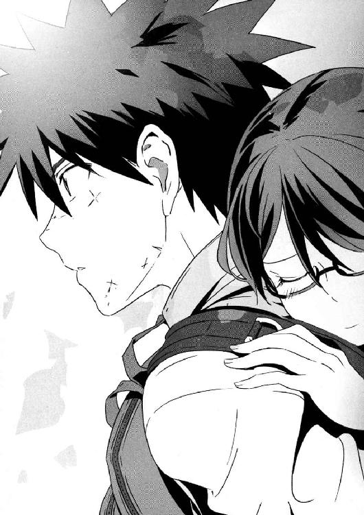
その光景を見て、セルジュは呆れて、同時に驚く。
（......天然や！）
心の声で叫んだ。
（謙吾は、大事なところで一番やったらあかんベタをやらかす天然の大バカや！）
謙吾の行動は合理的である。セルジュはすでに大荷物を背負っているので、七湖を背負うなら謙吾しかいない。そして、体力的にも無理はない。移動スピードは格段にあがるだろう。しかし、ユキナも彩離も納得していない顔だ。
セルジュは見かけによらず高齢で、本来ならば老人もいいところである。第三世代ゴーレムの思考・記憶・感情の回路は特殊で、経験は蓄積するが気持ちは若いまま保たれる。二人の女性に挟まれたときに、何をやってはいけないのか、どんな態度をとるべきなのか──それくらいは、過去の経験からある程度わかっているつもりだ。謙吾は何もわかっていない。
謙吾は、鈍感とは少し違う気がした。
セルジュの目には、謙吾が意図的に鈍くなろうとしているように映る。一長一短とはよくいったもので、人間は何かを得ようとすれば何かを捨てねばならない。怒りを鋭くすれば強くなれるが、人としての優しさは鈍くなる。戦闘や訓練、そして任務に集中するために、謙吾は恋愛に関する脳を退化させてしまったのかもしれない。
そういえば、とセルジュはＧＥＮＥＺのことを考える。
遺伝子強化外骨格、ジーン・スーツ──通称ＧＥＮＥＺ。
ＧＥＮＥＺを制御するのは、遺伝子コンピュータである。使いこなすためには、人間の遺伝子の中に眠るジャンク──獣の部分──が必要になる。ＧＥＮＥＺを着用するたびに、人の獣性が高まったりすることはあるのだろうか？
セルジュは、謙吾はまるで狼に育てられた少年のように不器用だと思う。
２
急な勾配をものともせず、山を越えていく。もうすぐ夏だというのに、山頂付近には雪が残っている。「少し酸素が薄くなってきたな」と謙吾が涼しい顔で言った。そういえば七湖は少し頭が重い気がする。
急な登りが続いても、謙吾が七湖を背負ってからは楽々踏破することができる。
やがて渓谷に差し掛かった。下まで数百メートル、かなりの高さだ。一応、橋がかかっていた。映画やドラマ以外ではまず見かけない、縄と板でできた古臭く不安定な吊り橋だ。
渡り始めると、今にも割れそうな不気味な音が響く。
山の斜面を吹きおろしてきた風のせいで、揺れがひどい。
「みんな......怖くないの!?」
七湖が涙目で悲鳴を上げた。
「私にとっては、庭みたいなもんだからな」
平然としているユキナ。同じ理由で、佐鳥もまったく怖がっていない。
「なるほど......ユキナさんが特進クラスの授業についてこれるわけや。今、完全に納得した」
セルジュは一人でうんうんとうなずく。
「俺たちは作戦のために、飛行中の輸送機からパラシュートやロープで飛び降りるための訓練を受けてる」と謙吾。「高所で恐怖を覚えることはない」
「落ちたら死ぬだけだからねー」
などと物騒なことを言う彩離。空中戦用のＧＥＮＥＺを使う彩離は、特に念入りに高所落下訓練を受けている。ビルの四階から命綱なしでダンボールに向かって飛び降りても、見事な受け身をとることができる。
「......怖いよ、謙吾」
怯える七湖が、ますます強く謙吾にしがみついた。
「......大丈夫。怖くない」
謙吾は優しく声をかけて、やや早足になった。
七湖の震えが止まった。こんな状況なのに、胸に安心が広がってきた。ずっとオンラインゲームを一緒にやってきたし、命も助けられた。
謙吾は、命を預けてもいい相手なのだ。
吊り橋を渡りきると岩肌むき出しの難所にさしかかり、そこをなんとか突破したところで完全に日が暮れたので野宿することになった。
「酸素が、少し薄い感じがするな」
深呼吸をしてから、謙吾が言った。
「秘境や......」とセルジュがしみじみつぶやいたら、ユキナがすかさず「秘境言うな」と頰を膨らませる。
野宿のために、携帯型のテントを三つ用意する。
構造が単純な最新の軍用テントなので、ほんの五分で立てることができた。一つのテントにつき二人が収容可能だ。
それから夕食の準備に移る。今回謙吾たちが持ち込んできたのは、海神学園の購買部なら格安で購入できる、自衛隊の戦闘用携帯食料だ。料理が入ったレトルトパックを、専用に開発された加熱剤で温かくしてから食べる。
そのメニューは、いわし野菜煮、ハヤシハンバーグ、チキンのトマト煮、中華風カルビなどなど。パックを開いて、皿には移さずにそのまま付属のスプーンですくう。
少し食べて、七湖が顔を歪ませた。
「こんなまずいもの食べてるの......？」
「七湖はグルメだな」と、少し呆れたように謙吾。「これは自衛隊の戦闘糧食II型。改善型だ。ＰＦＣ（たんぱく質、脂質、炭水化物）のバランスもいい。戦闘糧食の中では、かなり美味いほうだと思うぞ」
「何を適当なこと言うてんねん、謙吾」セルジュがすかさず口を挟んだ。「まずいってのは言いすぎかもしれんが、自衛隊の戦闘糧食はお世辞にも美味いほうとはいえん。台湾軍、ベルギー軍、スペイン軍には確実に負けとる」
「セルジュにとってベストはどこの国だ？」
「フランス軍の戦闘糧食が一番」
「そんなことはない。野菜はまあまあだが、肉関係がいまいちだ」
「じゃあ、謙吾はどこがイチオシや」
「イタリア軍の戦闘糧食に決まってるだろ。チキンとポークの味付けがいい」
「わかっとらんなあ、謙吾。そもそも戦場で食べる飯というものは、兵士の疲労を考慮して酸味と塩分を......」
「どうでもいいよー、そんなの！ 口論はいいから、食べることに集中しろって！」
彩離が、自分の耳をふさいで半ば悲鳴のような声を出した。
謙吾とセルジュ、ユキナと佐鳥、彩離と七湖という組み合わせでテントを使う。いくら謙吾たちが鍛えているといっても、ほとんど休憩なしで高い山を越えてきたのだからそれなりに疲労がたまっている。ほとんど会話もなく全員眠りに落ちた。
そして翌朝。朝食をすませたらすぐに移動再開。またもや七湖は謙吾が背負う。まだ陽がのぼりきらないうちから歩き始めて、数時間──。
「着いたぞ！」
と、ユキナが歓声をあげる。
険しい山の中腹に、急に平らな場所があった。山の一部が階段のようになっていて、その踏み板とでもいうべき場所に、人が住むための空間が形成されている。
山の斜面を利用して段々畑が築き上げられていた。平地は少ないが、それなりの面積の田んぼもあり、自給自足のサークルがこの村だけで完成していることをうかがわせた。
少し離れた場所に大きな滝があり、そこから小川が生じて村の中心を流れている。
その村に、三階建て以上の建物は見当たらない。謙吾たちが目を見張ったのは、茅葺き屋根で合掌造りの民家がぽつりぽつりと存在していたことだ。
「江戸時代か......」
「一応、あちこちに電線は通ってるみたいだし、アンテナらしきものも立ってる。でも、昭和初期で時間が停止しているようにしか見えないな......」
野生動物対策なのか、集落全体を木の柵が囲んでいた。その出入り口にあたる木戸に、夫婦らしき中年の男女が立ち、こちらに向かって手を振っている。二人とも、謙吾が知っている顔だった。
ユキナが電話をしたので、到着する時間を予想し、そこで待っていてくれたのだろう。
彼女の、義理の両親だった。
「お父様、お母様！」「お師匠様！ 師範代！」
ユキナと佐鳥が、夫妻に駆け寄っていく。
「ユキナ！」
「元気なようで安心したぞ！」
力強くそう言ってユキナの肩を抱いたのは、父親の岩清水一兵だ。年齢はそろそろ五〇代にさしかかるところだというが、肌は日に焼けていて、筋肉にはハリがあり、容貌も若々しい。年を感じさせるのは、やや多めの白髪くらいか。身長一九〇センチ近い、堂々たる体軀である。
そして、母親が妙子さん。いわゆる「おばさん」という感じはしない。夫と同じく若く見えるので、ユキナの姉と言われても納得してしまいそうだ。一兵ほどではないが長身で、身長は一八〇センチ。まさに女丈夫といった雰囲気の、よく笑いよく食べる元気な中年女性。
二人とも、武術の達人である。畑仕事をしながら、希望者に武術を教えているのだという。
意外なのは、二人で経営する道場の主は妙子だということだ。
一兵は道場の師範代とされている。
「佐鳥も連絡役ご苦労だった」
「いえ、大きな町を見ることができたので楽しかったです！」
謙吾は七湖をおろし、「みんなはここでちょっと待っててくれ。先に挨拶をすませてくる」と言った。まずは顔見知りが話をして、それから馴染みのない人間を紹介するほうがスムーズにいくだろうと判断したのだ。セルジュや彩離が「ああ」「そうしよ」とうなずいたので、謙吾だけがユキナを追いかけた。
「お久しぶりです」
「ええと......きみは......どこかで会ったかな？」
近づいてきた謙吾を見て、一兵と妙子は夫婦そろって怪訝そうに目を細めた。無理もない、と思って「大牙です。大牙謙吾」と名乗る。
「ああ！」
夫婦の目が、同時に驚きで見開かれた。
「謙ちゃんか！ あんまり立派になってたんで、気付かなかったよ」
「だと思います」
謙ちゃん、という呼び方に思わず苦笑を漏らした。弱くみじめな自分の子供のころを思い出したからだ。
懐かしそうに目を細めて、妙子が「いじめられっ子だったのに......」とつぶやく。
「人間は鍛えれば変わりますから」
「でも、あまりいい鍛え方じゃなかったみたいだな」
一兵が急に真剣な表情で言った。
久しぶりだというのにそんなことを言われても、謙吾は戸惑いを隠せず「......はい？」とあいまいに返すことしかできなかった。
そして次の瞬間、突然一兵は拳を振るった。謙吾の顔面を狙っている。
「えっ──」と驚きつつも、謙吾はとっさに反応した。
反射的に一兵の拳を弾き、手首をつかみ返し、関節を極める。
しかし、さすがにユキナの父親だ。謙吾の関節技を反対側の手で払って外し、すかさず肘を打ち返す。
一兵の鋭い肘打ちを、頭を低くしてかわす謙吾。
幼なじみと自分の父親が戦い始めたのを見て、ユキナが口を開けて啞然としている。
──なんで突然、ユキナのお父さんがこんなことを？ 謙吾の脳裏をよぎったそんな疑問は、闘争の緊張感が生み出す大量のアドレナリンに押し流された。相手は素人ではない。格闘戦では軍人よりも恐ろしい相手だ。油断すれば、このままやられる──。
謙吾の目がぎらりと光って、一兵に向かって踏み込んだ。右の掌底をアッパー気味に突き上げて、一兵のアゴを打ち砕こうとする。
一兵は、両腕で謙吾の掌底打を受け止めた。そして微笑む。
「やはり。殺気が強すぎるんだ。どんな訓練を受けた？」
「......っ！」
「やめてください、お父様！」
ユキナが悲鳴のような声をあげた。
その声で、二人の男は我に返る。
「まったくもう、おとなげない」
ユキナの母──妙子が、夫の頰をつまんで引っ張った。同じようにユキナも謙吾の頰をつねって、ついさっきまで戦っていた二人は引き離される。
「いたたた......」
そんなやり取りを少し離れた場所で見物していたセルジュが「なにをやってんねん......」と呆れ声を発した。
そういえば、と謙吾はユキナに頰をつねられながら考える。ユキナの両親は海神学園の正体を知らないはずだ。
ユキナは、最初はごく普通の高校に通っていた。平凡でも楽しい高校生活を送るはずだった。しかし、彼女がナイチンゲールであるとどこからか聞きつけたこども学長厳島アイナの陰謀によって、急遽海神学園に途中編入したのだ。途中編入の理由も、両親は「奨学金が出たから」と聞かされていることだろう。
（真相は隠しておくしかないか......）
そうしろと、担任にして上官の大迫にも言われている。逆らうことはできない。
いくらユキナが不死身のナイチンゲールとはいえ、民間軍事会社に所属して様々な実戦に参加している、と聞いたら卒倒してしまうかもしれない。娘を、なんとか普通の高校に戻そうとするかもしれない。そうなったら、ユキナと離れ離れになってしまう──。
そもそも、ユキナの両親はナイチンゲールのことをどこまで把握しているのだろうか？ どんな大けがをしてもすぐに治ってしまうのだ。幼いころからユキナを見てきた夫婦が異常に気づいていないわけがない。
（しかし、気づいていたら？ 気づいたうえで、思うところがあって向こうも何か隠し事をしているとか......？）
考えすぎか、と謙吾は自嘲した。それから心の中でユキナの両親に「申し訳ない」と両手を合わせる。
──真相を隠していて申し訳ありません。残念ながらユキナは世界中の情報機関や犯罪組織からその身柄を狙われています。普通の高校に通わせることはできません。でも、娘さんは俺が全力で守ります。ミスをやらかしてユキナをさらわれたこともありましたが、最後はなんとか挽回することができました。これから、自分の命よりも大切にします。だから、今日のところはどうかお許しください。
３
「ユキナの友達ならみんな大歓迎だ」と、岩清水夫妻は海神学園から来た面々を自宅まで案内してくれた。
岩清水家は、二つの建物が連絡通路でつながった二世帯住宅のような構造だ。生活のための二階建て住居と、もう一つの建物は道場だ。天井が低く、そのかわり面積が広い。さすがに屋根は茅葺きではないが、木造で全部屋に畳がはられている。夫妻によれば、何度も改装したのできれいに見えるが、家全体は大昔から建っているという。
かなり大きな家なので、部屋はいくらでも空いていた。男女に分かれるので、部屋を二つ使わせてもらう。謙吾とセルジュの部屋、そして七湖と彩離の部屋だ。当然、ここはユキナの家でもあるので、彼女は久しぶりに自分の部屋を使う。
荷物をおろした謙吾たちは、とりあえず、服を着替えた。山越え用の厚着から、一気に初夏らしい薄着になる。重く太い鎖で体を拘束された状態だったのが、ようやく解放されたかのような気分だ。
謙吾、セルジュ、ユキナ、彩離、七湖の五人は、一階の居間に集まった。役目を果たした佐鳥は自分の家に帰っていったという。
「いやあ、田舎の家は広い......」
感心したように謙吾がつぶやく。
「畳の部屋でくつろぐなんて初めてや」とセルジュ。
岩清水家の居間には大きな木のテーブルがある。和風建築用の低いテーブルなので、椅子ではなく座布団に座る。
謙吾がふと部屋の隅に目をやると、木の柱にたくさんの傷がついていることに気づいた。その傷は、小刀の刃を横に走らせて刻んだもので、恐らくユキナの身長を記録したものだろう。ドラマで見たことがある。子供を柱の横に立たせて、頭頂部に合わせて柱に傷をつけるのだ。子供の身長が伸びるたびに、柱の傷が上に増えていく。
「別世界に迷い込んだかのようだよ。疲れたー」
そう言って七湖は座ったまま足と腕を「んんん」と伸ばした。着替えた七湖は、タンクトップにホットパンツという露出度の高いラフな格好。
「......シャワー浴びたいねえ」
彩離が、砂漠で水を欲しがる旅人のようにつぶやいた。彩離の服装はぴっちりとしたＴシャツにプリーツスカート。かなり短めのスカートな上に、彼女は足癖が悪いので男性陣は目のやり場に困ることがある。
「残念ながら......この家にはシャワーなどという便利なものはない」
と、申し訳なさそうにユキナ。
「この家というか、この里には一つもシャワーがない。でも、うちの母が用意してくれた冷たいタオルはある」
「わあー、うれしいー」
七湖が棒読みの口調で言った。
居間に置かれたテレビは液晶でもプラズマでもなく、ブラウン管だった。画面が白黒ということはなかったが、リモコンはついていなかった。テレビについた「つまみ」を直接回転させてチャンネルを変える。謙吾は昔懐かしい感じがしたが、よくよく考えてみたらつまみ式のチャンネルは生まれて初めて見たので、逆に新鮮だと思えてくる。
セルジュが、勝手にテレビをつけて、物珍しそうにチャンネルのつまみをひねる。
「テレビ......ＮＨＫ以外の映りが本当に悪い。あとは、ギリギリ民放が二、三局......」
「テレビなんかその程度で別に困らないぞ。昔はＮＨＫしか映らなかったくらいだし。週に何本か時代劇を見ることができればそれでよかった」
ユキナはいつも背筋が伸びていて、姿勢がいい。今も、座布団の上で一人だけきれいに正座している。清楚な白いワンピース姿で、いつもの制服姿とは雰囲気が違い、謙吾は少しドキッとした。
「おなかすいただろう。ここは、やってくるだけでも大変だから。都会の子なんて、死にそうになってるんじゃないか？」
居間にユキナの義母──妙子が、飲み物や料理をたくさん抱えてやってきた。
「普段鍛えているので、これくらいなら」
謙吾は居ずまいを正して言った。
「でも......確かにまともなご飯が食べられると嬉しいです」
「腕によりをかけたんだ。食べて食べて」
テーブルの上に、夫妻が作ってくれた料理が並ぶ。
香ばしい、食欲をそそる匂いを漂わせているのは、近くでいくらでも採れるという山菜のごま油炒めだ。
そして、一〇代の少年少女といえば何はともあれ肉っぽいものが食べたいお年頃である。そのあたりは岩清水夫妻も心得たもので、しっかり肉系の鍋を用意してくれていた。ネギ、山椒、味噌で味付けされた鍋と、うっすらと脂肪がついた状態で薄くスライスされたイノシシの肉だ。
「ぼたん鍋ですか」
謙吾の口元がほころんだ。
海神学園特進クラスの生徒なら、野生動物の肉には慣れている。その中でも、イノシシの肉はかなり美味いほうだ。
「イノシシが苦手っていう子はいるかな？」
妙子が訊ねてきた。七湖だけが「初めて食べるからまだわからない」と答えた。
最後のメニューは、かぼちゃの「ほうとう」だ。山梨県を代表する郷土料理のひとつで、小麦粉を麵と餅の中間になるよう加工する。それを、野菜や豆腐が入った味噌汁で煮込んで食べるのだ。
腹も減っているし、昨晩の夕食は戦闘糧食だった。謙吾は「自衛隊の戦闘糧食は美味いほう」だと言ったが、それはあくまで他の国のもっとまずい戦闘糧食と比較しての話だ。どこの国の戦闘糧食だろうと、東京では絶対に口にすることはできない、新鮮すぎる食材の田舎料理にかなうはずもない。
やがて、湯気を立てる炊きたての白米を詰めたおひつを抱えて、岩清水一兵も居間に姿を現した。
「いただきます！」
食う。むさぼるように食べる。本来食事は必要ないゴーレムのセルジュだが、彼にも味覚はあるし何か腹にいれれば栄養になる。
「みんな行儀が悪いな」
謙吾たちのガツガツとした食べ方を見て、ユキナはあきれ顔になった。
「いやいや、美味そうに食うのが一番」
と、妙子が豪快に笑う。
「むう......」
ユキナは唇をかすかにとがらせ、不満そうだった。彼女はこの家で厳しく育てられたのだろう。姿勢や食べ方にそれが出ている。娘には厳しいのに、娘の友人には心が広いところを見せる両親が納得いかない──そんなところか。
とにかく、どの料理も最高だった。こんなに美味いメシは食ったことがない、とさえ謙吾は思った。
食事が終了し、手を合わせて「ごちそうさまでした！」。片付けが始まる。準備は夫妻に任せっきりだったが、皿洗いは謙吾たちも手伝うことにする。
「食休みがすんだら、風呂に入るといい」
片付けの最中、一兵が言った。
「色々と本当にすみません」謙吾は軽く頭を下げてから、続ける。「ちなみに、風呂は五右衛門風呂ですか？」
五右衛門風呂は、風呂釜を直火で温める。釜の底が熱くなっているので、火傷しないように踏み板をはめる。あまりにも原始的な風呂だが、地方では今でもごくたまに見かける。
「里にはもちろん五右衛門風呂もあるが、ちょっと山に入ったところに温泉がある。せっかくだから、そこを使うといい」
──数十分後。
「こっちだ。大した距離じゃない」
ユキナの案内で、山の温泉に移動する。
山林に向かって少し進んだところに、古い温泉旅館のような建物があった。
その玄関を潜るとまず三和土──靴を脱ぐための土間──であり、それから脱いだ靴をいれておくための下駄箱が並んでいる。都会の下駄箱と違って、鍵は最初からついていない。こんな山奥の共用施設で、わざわざ靴を盗む人間がいるとは考えにくい。
建物は中で男女に道が分かれていて、それぞれ脱衣場につながっていた。謙吾たちが廊下を歩くと、ギシギシと床板がか細い悲鳴をあげた。観光客を呼び込むためではなく、地元の人間が昔から使っている感じがした。
脱衣場で一糸まとわぬ姿となって、ユキナは女湯に足を踏み入れた。
露天風呂である。しかし、山林の木々が屋根のかわりを果たし、男湯との間には丈夫そうな竹の柵が設けられている。
「ふう......」
入浴用の手ぬぐいを持ち込み、木の椅子に座って、手桶で自分の体にお湯をかけた。ユキナは手も足も長く、顔は小さい。完全なモデル体型だが、胸は標準以上に豊かだ。そんな美しい体の上にお湯が流れる。白い肌には生まれたままのような弾力があり、それがナイチンゲールの力のおかげなのかどうかはわからない。
そういえば、とユキナはつい先日謙吾に自分のはだかを見られたことを思い出す。謙吾は「なかったこと」にしようとしているが、見られたこちらはやはり恥ずかしい。もう謙吾以外のところにはお嫁にいけない......などと古風なことを考えて、余計に恥ずかしさが高まる。
一番乗りなので誰が見ているというわけでもないが、ユキナはなんとなく手ぬぐいで体を隠しつつ、ゆっくりと温泉に浸かった。
「ほう......はう......」
一瞬で体の芯まで温まる。熱いのではなく、温かい。体内で血の流れが活性化するのが自覚できる。余計なことは忘れて気分が変わる。命の洗濯とはよくいったものだ。
「やっぱり、村の温泉は最高だな......」
温泉の心地よさと山奥の静けさが相まって、心が落ち着く──。と、ユキナが思っていたら、それをぶち壊しにする大声が響く。
「うおお、ユキナの次はあたしだ！」
「負けないですよ！」
全裸の彩離と越智佐鳥だった。佐鳥は一度家に帰っていたが、ユキナが温泉に入ると聞いて駆けつけてきたのだ。
二人は、ユキナからすると信じられないことに、いきなり温泉に飛び込んできた。まるで遊びのプール感覚だ。
どっぱーんと大きな水柱を立てて、彩離と佐鳥はお湯に沈み、しばらく潜ったあと顔を出して大笑いした。
「いい飛び込みだ、やるなオヌシ！」
「彩離さんこそ、すごいジャンプ力ですね！」
彩離は、子供と気が合うらしい。いつの間にか仲良くなっている。精神年齢が近いのかもしれない。
「こらー！」
ユキナは握りこぶしをあげてぷんすかと怒った。
「ちゃんと体を洗いなさい！ 人に迷惑をかけるような飛び込みもだめ！」
「すみません......お姉さま」
佐鳥はすぐに謝った。しかし彩離は「ユキナは、まるでみんなのお母さんだねー」と軽口をたたく。
「同い年にお母さんとか言われたくないな」
「ごめんなさい、おかあたーん」
彩離はユキナに体を近づけて、わざとらしく甘えてみせた。
「............」
それがカチンときたユキナは、無表情で彩離の後頭部を両手で押さえつけた。彩離の顔をお湯につけてしばらくそのままにしておく。息ができない彩離が手足をばたつかせる。
「わぷっ、えぷっ！」
「こんなもんかな」
ユキナは手を離した。「ぶはっ！」と顔をあげて荒い息をする彩離。
「水責めはひどすぎる！」
「お前が先にふざけるからだ」
「ふざけたのは佐鳥たんに誘われたから......」
「えっ、拙者がですか!?」
「こんな年下に罪をなすりつけるなよ、彩離......。ほんの数秒でいい、彩離は脳で考えてからしゃべろう。な？」
「今の言い方すげえ屈辱的よ！」
彩離は一人で大騒ぎだ。ユキナは、この声が隣の男風呂にも響いていないか心配だった。もし聞かれているとしたらあまりにも恥ずかしい。
「なんだかずいぶん賑やかだねー」
と、七湖もやってきた。
「賑やかというか、彩離がうるさいんだ」
ユキナが冷たくそう言い放つと、彩離はがっくりと肩を落とした。今の七湖の言い方だと、まるでユキナも一緒に騒いでいたようになるのが不満で訂正したのだ。
話を交わしつつ、ユキナは七湖の裸体を盗み見た。七湖の胸はそれほど大きくないが、体が細いのでその分強調されている。腰の位置が高く、しかもくびれているので、実際よりも身長が上に見えるほどだ。
謙吾がいつもやっている美少女ゲームのヒロインにいわゆる巨乳は少なく、むしろスレンダーな体型で小ぶりな胸のほうが人気があると聞く。謙吾も、大きな胸よりも七湖のような胸のほうが好きだったりするのだろうか──。
「ん？」
七湖が、ユキナの視線に気づいた。そして「へへー」と屈託のない笑顔を浮かべる。彼女に他意はなさそうだったが、ユキナは見透かされたような気がして思わず目をそらした。
（......なんだかな）
４
謙吾とセルジュも温泉に入っている。男同士、隠すものは何もない。体がきれいなのはもちろん人工皮膚のセルジュだ。比べて謙吾の体は傷だらけで、知らない人間が見れば間違いなく恐怖を覚えることだろう。
セルジュは、男女の露天風呂を仕切る竹の柵に頰をあてて、女子露天風呂の光景を妄想しようとしている。
「向こう側で女子が入浴しとるんやな。一＋二はパラダイスや......」
「今日はひときわ淫獣だな、お前」
「......って、いくら仲間とはいえ、あんな美人がそろってるんやで!? アヤハナは微妙かもしれへんけど......テンションあがらんほうがおかしい」
「俺はあがらんよ、別に」
「なんや謙吾、ノリが悪いな」
「のんびりしてるんだよ。温泉は好きだ。古傷の痛みが和らぐ」
謙吾は右手で自分の左肩を揉みながら、大きく首を回してリラックスの吐息を漏らす。
「......痛むのか、古傷」
セルジュの表情に真剣なものが走った。
「時々うずくな。無視できる程度だが、温泉に入ると完全に忘れられる」
「魔法生物の俺にはわからん感覚や......」
「サラマンデルは元気か？」
魔法生物と聞いて思いだしたので、謙吾は訊ねた。
「彼女が不調なら、俺も不調になる。つまり絶好調っちゅうこっちゃ」
サラマンデルは、火の精霊の娘だ。この世界には、精霊がいる。精霊やゴーレムがいるのだから、どこかにはゾンビや巨人もいるのだろう。そしてセルジュは、つい先日フランケンシュタインと戦ったばかりだ。
最新の軍事技術と超自然的なオカルトが同時に存在するカオスに謙吾はもう慣れたが、数学と科学の申し子である七湖は時間がかかるはずだ。
そのカオスを、軍事隠秘学複合体という。古代エジプトやギリシャの軍隊に、預言者や占い師が同行したのがその起源だ。
ノストラダムスの大予言を悪用し大衆コントロールに利用したナチスドイツ、千里眼の実験にのめりこんだＣＩＡ、テレパシーを潜水艦戦に応用しようとした旧ソ連軍......軍事隠秘学複合体の例をあげていけばキリがない。
セルジュ・ドラグレスクも、軍事隠秘学複合体が生み出したものの一つ。人の手で造られた命だ。そのため、霊魂とでもいうべきものが不足していた。感情が乏しく、判断力が鈍く、まったく兵士としては役に立たない状態でこの世に生を受けた。
それを補完するために使われたのが、サラマンデル。精霊とは何か、と訊かれても謙吾やセルジュには答えられない。昔の人間に「太陽が何でできているのか」と訊ねても、正解は返ってこないのと同じだ。人間の技術や知識が、そこにある現象に追いついていない状態。いずれ研究が進めば「精霊とは何か」という問いにも答えが出るのだろう。
今わかっているのは、精霊は基本的に目に見えず隠れて八百万存在し、様々な自然現象──雨や嵐、火山活動など──が滞りなく循環するよう活動している。精霊たちは、シャーマンや魔術師が適切な儀式を行い、正しい手順を踏めば捕獲することが可能で、成功すれば超常的な道具や生物の生産に使える。
「そういや、最近『外に』出してなかったな」
セルジュは、てのひらを上にして手を目の高さまでもっていった。
そこに、青白い炎が生じる。
セルジュが得意とする発火能力だが、いつもの攻撃用ではない。炎に温度はなく、やがて小さな人の形に変化していく。
青白い炎は、てのひらサイズの少女になった。
サラマンデルの分身である。
サラマンデルの本体とセルジュの魂は完全に融合していて、死ぬときまで離れることはない。しかし、魂の一部分だけを縮小した分身として外に出すことはできる。
「よう、久しぶり」
「............」
謙吾が挨拶すると、小さなサラマンデルはにっこりと微笑んだ。サラマンデルの分身が人間の言葉を話すことはない。そのかわり、テレパシーのように、相手の心に直接自分の感情を伝えるのだ。
サラマンデルは、セルジュとの行動を楽しんでいるようだった。言葉はなくとも、謙吾の心にそれが伝わってきた。──温かい気持ちだ。
「そうか......いいことだ」
先にセルジュが風呂からあがった。謙吾は少し長く温泉を楽しんでから、ゆっくりと体を拭いて脱衣場に戻る。ユキナの両親が用意してくれた浴衣があったので、それに着替えた。細かい亀甲柄の浴衣を、角帯で締める。旅館でもないのに浴衣を着るのは妙な気分だ。
そして脱衣場を出た下駄箱の前で、謙吾はばったりユキナと出くわした。
「あ」
「謙吾」
ユキナも、水草に金魚柄の浴衣姿である。
あがったばかりらしいユキナの髪は、今も微かに濡れている。湿ったほつれ毛が彼女のうなじに張りついているのを見て、謙吾は「うっ」と低くうめく。今日のユキナは一際可憐で、扇情的だった。
温泉につかっていたので、ユキナの肌はピンク色に上気している。それが婀娜っぽさに拍車をかける。心臓を矢で撃ち抜かれたような気分を、ユキナに悟られるのが恥ずかしくて、そしらぬ顔をしてやり過ごそうとする。
「......いい湯だった」
謙吾は平静を装って言った。
「うん？」
長い髪がまだ少し濡れているのを気にして、右手で軽くかきあげるユキナ。彼女のしぐさの一つ一つが、今日は謙吾の心を惑わせる。
「いや、なんでもない」
「......はあ？ へんなの......」
「いや、やっぱり言っておく」
「な、なんだよ」
「ユキナ、浴衣、似合ってる」
「............」
ユキナの顔が赤いのは、すでに温泉のせいだけではなかった。
「け、謙吾も......男らしくていいと思う。男の和装は肩幅が広いほうが似合う......」
「......その、あー、ありがとう......」
妙な感じだ......と、頭をかきながら謙吾は男子の大部屋に移動した。さすがに、ここはユキナの実家だ。文字通り、彼女のホームグラウンドだ。ここでは、彼女がいつもよりもずっと生き生きと輝いて見える。
大部屋には、すでに二人分の布団が敷かれていた。フローリングにベッドが当たり前のセルジュは、畳や布団が嬉しいらしく意味もなくごろごろと転がっている。
初めて浴衣を着たのか、帯の締め方が固結びでムチャクチャだ。
「気持ちええ......日本の文化やな......」
「そんなもんか」
「さて、と」
寝転がっていたセルジュが、両足で反動をつけて一瞬で立ち上がった。
「女子の部屋に遊びに行こうや！」
「居間でのんびりしてれば、向こうもやってくると思うが」
「つまらんこと言うなや！ 居間で待つやて？ なんでそないな消極的な意見が出てくるんや！ わざわざ女子の部屋に行くのがええんやないか」
「そういうもんか？」
「せや。迷わず行けよ。行けばわかるさ」
プロレスラーの言葉を引用するセルジュ。
「......まあ、この部屋にいても暇なのは間違いないしな」
よっこらしょ、と謙吾も腰をあげた。二人で女子の大部屋に向かう。出入り口は、ドアではなく昔ながらの襖で仕切られている。
襖をノックすると、ドスドス鈍い音がした。謙吾は「俺とセルジュだが」と襖越しに声をかけた。「大丈夫だよー、みんないるよー」と彩離の能天気な声が返ってきたので、襖を開けて部屋の中に入る。
ユキナ、七湖、彩離がいた。こちらの部屋にも、すでに三人分の布団が敷かれていた。佐鳥はまた自分の家に帰っていったそうだ。行ったり来たり、忙しい娘だ。
「遊びにきたでえー。何してた？」
「なんとなく、ごはんが美味しかったねー、いいお風呂だったねー、とか」
彩離が答えた。
「さあ、女の子たち！ 美男子なこの俺！ セルジュ・ドラグレスクを見てきゃーきゃー騒いだりするとええで！」
いきなり満面の笑みで、セルジュが笑えない冗談を口にした。
「............」
白けた雰囲気で流そうとする女性陣。
「......ほら、謙吾がスベったせいで微妙な空気になったやないか」
「濡れ衣を着せるな！ 今のは完璧にセルジュのせいだろ！」
「どっちがスベったんでも、いいよ。どうでもいい」彩離が冷たく言った。「そんなことより、せっかく人数もそろったし、女子と男子に分かれてまくら投げで勝負しよーぜ！」
「まくら投げなんて、修学旅行じゃあるまいし......」
ユキナがそう言うと、セルジュと彩離が驚いたように顔を見合わせた。
「修学旅行って......」
「あ、そうか。ユキナは転校してきたばっかだから知らないんだね」
「ん......話が見えないな。どういうことだ？」
「海神の修学旅行はこんなに平穏なものにはならない。まくら投げなんてやる余裕はない」
ユキナの疑問に、謙吾が答えた。
「二年前、中等部特進クラスでの修学旅行は、アフリカ諸国だった。旅行中ずっと、内戦で使われた地雷や不発弾を処理していた」
「また、冗談を......」
不安げにつぶやいて、ユキナは他の面々を見回す。七湖だけはユキナと同じく不安そうな顔をしていたが、謙吾、セルジュ、彩離の三人はいたって真面目な顔だ。
「冗談......だよね？」
もう一度訊ねるユキナ。謙吾たちは一斉に頭を左右に振った。
５
結局、まくら投げはやった。最初は子供っぽい、と嫌がっていた七湖も、最後は笑いながら大きなまくらで謙吾をもふもふと叩いていた。まくら投げは、なぜか最後は肉弾戦になりやすいものだ。まくらを投げるのではなく、持って直接殴りつける。なぜそうなるのかはわからないが、中学生や高校生がまくら投げをやったら九割そうなるんじゃないかと謙吾は思う。
騒ぎすぎてユキナの両親に怒られて、そこでお開き。
謙吾とセルジュは男子の大部屋に戻って、歯を磨いてから布団に入った。田舎の夜は静かなもので、聞こえるのは虫の音くらいだろうか。窓を開けているわけでもないのに、家の外で微風が吹いても感じることができる。
「............」
布団で横になって、木目が走る天井を見つめる謙吾。隣では、セルジュが早くも大きないびきをかき始めている。しかし、謙吾のまぶたはなかなか重くならない。
昼間から、妙に引っかかっていることがある。
「よし」
と謙吾は布団から出て、居間に足を運んだ。
気になっていたのは、柱の傷だ。
（やっぱり、おかしい......）
岩清水家の広い居間。一番弱い常夜灯がついているので、真っ暗ではない。
謙吾は部屋の隅で屈みこんだ。目の前の柱に、傷がついている。子供の成長を記録するためにつけられたものだろう。それ自体は珍しいものではない。
問題は、傷の位置だ。
一番下についた傷の位置が、床からおよそ八〇センチ。一番上が一三〇センチだ。その間に、傷が一二本。身長を測ったのは、半年に一回くらいの頻度だろうか？
謙吾は考える。
ユキナは、謙吾の幼なじみだ。小学校低学年まで近所に暮らしていた。つまり身長が一〇〇センチから一三〇センチくらいの間、ユキナは都内にいたのだ。記憶にある限り、謙吾と離れ離れになるまで、ユキナが里帰りしたことはない。
ユキナの両親も、ずっと都内にいた。大事な仕事があったと聞いている。
今、ユキナの身長は一六〇センチ近く、高校生女子の平均値に近い。身長の伸び方も平均的だったろう。
──じゃあ、これは誰の身長を記録していたんだ？
近所の子供の身長を、家の柱に刻むわけがない。一番ありそうなのはユキナに兄弟姉妹がいるという話だが、それも聞いたことがない。
この家には昔、もう一人いた。
そしてそのことを、親はユキナに隠している。
謙吾は「考えすぎか......」と一人で首を左右に振った。なにしろ古い家だ。ユキナが生まれるよりずっと前に刻まれた傷かもしれない。たとえば、ユキナの母が子供だったころに身長を記録したものという可能性もある。まあ、引っかかる点がないではないが......。
謙吾は、廊下に人の気配を感じた。その直後に、廊下から「......誰かいるの？」と声が呼び掛けてくる。七湖の声だった。
「俺だ」と謙吾は言った。すると、安心したように笑顔で七湖も居間に入ってくる。
七湖も浴衣姿で、手には携帯ゲーム機を持っていた。
「どうした、七湖」
「眠れなくて。ゲームやりたくなったんだけど、ほら、他の二人はもう寝てるから......。イヤホン使っても、ボタンを押す音とかは消せないし。迷惑かけないように、ここに」
「なるほど」
「そういう謙吾は？」
「同じさ。なんとなく寝苦しかった」
「ちょっとゲームやんない？ ＰＳＰ、ちゃんと二台持ってきておいたんだ」
「用意がいいな。よし、やろう」
謙吾の横にちょこん、と座る七湖。ＰＳＰを受け取り、中に入っているゲームを確かめる。協力してモンスターを狩る大ヒットゲームだ。かなりやりこんだ一本なので、いきなり始めても大丈夫。セーブされていた七湖のサブキャラクターを使わせてもらう。アドホック通信で二台のＰＳＰをつなげて、プレイ開始。
「疲れてるから、ぐっすりかと思ってた」
「疲れすぎて、気分が高ぶって......なんだか妙に目が冴えてくるときってないかな」
「あー、そういう感じか。確かにあるな」
頼りない常夜灯の光だけが二人を照らしている。カチカチとボタンを押す音が響く。
ずっとオンラインゲームで一緒にやってきた二人のコンビネーションは抜群だ。どんなモンスターにもおくれをとらない。
「......謙吾とゲームしてると楽しいんだ」
「俺もだ」
謙吾はゲームが好きだ。ゲームの中で人が死んでも、それは現実の死ではない。今も世界各地で内戦や紛争が発生し、たくさんの人間が「現実に」死んでいる。この世界は決して平和にならない。だが、ゲームの世界は最後のボスを倒したらハッピーエンドが待っている。そこが素晴らしい。
「......ん？」
ＰＳＰの画面の中で、七湖が操るキャラクターの動きが止まっていた。
「どうした、七湖。もうひと狩り......」
謙吾が液晶から目を離し顔を上げると、鼻先に七湖の顔が迫っていた。
「な......」
距離が近すぎる。相手の呼気を皮膚で感じることができるほどの距離だ。
「前の事件で......ユキナさんとのキスを、二回も見せつけられた......」
七湖は謙吾に膝立ちでにじり寄った。
「たくさんしてるんだよね、ユキナさんと、キス」
「でも、あれは......」
「任務のため？ ナイチンゲールの力だから？」
「............」
謙吾は「ギルガメシュ」だ。ナイチンゲールのキスで不死身になる遺伝子を持っている。だから二人は、キスを交わす。しかしそれがただの事務的な手続きとはどうしても思えない。
何がどこまで任務のためで、どこからが好意なのか。
自分でも、よくわからなくなっているところは、ある。
七湖は、ぐっと身を乗り出した。
「！」
謙吾と七湖の唇が重なる。七湖の積極的なキス。
やわらかい唇の質感と温度に、心が震える。
瞼を閉じる七湖。驚きで両目を見開く謙吾。
数秒で、七湖のほうから唇を離していく。
「七湖......」
「驚かせて、ごめん。謙吾。このキスは、そのアレだから......」
そう言い残して、七湖は立ち上がり、ＰＳＰを持って居間から歩き去っていった。
「......なんだよ、七湖......『アレ』って......」
謙吾は茫然と独りごちた。
女子の大部屋に戻った七湖は、布団に潜って薄い毛布を頭まで被った。同じ部屋で、ユキナと彩離が眠っている。彩離は、寝ぞうが悪いせいで浴衣がはだけて、下着が外から見えるようになっていた。はしたないなんてもんじゃない。対してユキナは、天井を見つめて直立不動のような姿勢で静かな寝息を立てている。
「うう......」
謙吾に、キスしてしまった。
本当は、好きだと告白したかったのだ。恋をした。うじうじ悩んでいるのは性に合わない。好きになったら好きだと言いたい。
でも、告白できなかった。
断られたらどうしよう、と考えると頭が真っ白になってしまった。
そして、キス。
「順序が逆じゃん......普通はこくってからキスでしょう......なにやってんだ、私......」
頭を抱えて、できるかぎり声量を絞った声で自分を責める。
──私はダメな人間なんだ。元ひきこもりで、ゲームマニアで、いざというときには頭が真っ白になってしまう。ちんちくりんでやせっぽちで、胸も大きくない。好きな相手に、告白もできない。キスができるのに、好きだよの一言が口にできない。バカだ、本当にバカだ。バカでダメだ、私は。
「なんなんだよ......『アレ』って......意味不明だよぅ......」
こんな調子では、謙吾を困らせてしまうだけだ。
明日、どんな顔をして話せばいいのだろうか。
６
──パリ発ロンドン行きの高速列車ユーロスターが、あと一〇分ほどでドーバー海峡のトンネルという位置で謎の集団に襲撃された。
ユーロスターに乗っていたのは、イギリス情報局秘密情報部ＭＩ６のエージェント、ジョセフ。護衛のフランス国家憲兵隊武力介入グループの隊員たち一六名。そして、ＭＩ６の依頼で応援に来ていたグリークスの林と張鐘だった。
パリ郊外で発見されたある重要な品物。
暗号名は「Ｄ荷物」。
ジョセフの仕事は、それを本来の持ち主であるイギリス軍のもとに持ち帰ることだった。
「あんたは逃げろ、敵の狙いはそれだ」
張鐘はＭＩ６のジョセフに向かって言った。
「しかし......」と、ためらうジョセフを、林が乱暴に突き飛ばす。
「ここでデルタパッケージを奪われては元も子もない！」
「わ、わかりました......！」
ファーストクラス七号車には、張鐘と林の二人だけが残った。
「車内で戦闘か......俺が一番得意なのは狙撃なのに......」
ぼやきつつ、張鐘は懐に手を差し込んで脇にぶらさげた拳銃を確認する。
「戦場が選べるか。ＣＱＢに備えろ」
そう言って林は立ち上がり、大きめの車輪つきスーツケースを荷物用のスペースから引っ張り出した。スーツケースはカモフラージュに過ぎず、その正体はグリークスの兵士が使う武器の運搬ケースだ。
林がスーツケースを開けると、中にはコンパクトなライフルやサブマシンガン、ガスマスクや手榴弾まで収納されていた。
「やれやれ......骨が折れそうだ......」
と、張鐘は林から受け取ったライフルの安全装置を解除して、ため息をつく。
黒衣に片眼鏡の老人、教授。ブランドもののスーツとコートで身を包んだ黒人の男性、ウォードッグ。そして、瞳に感情を宿すことのないチェック柄の制服を着た少女。
そんな三人が七号車に踏み込んできた。
張鐘と林は、車両の中央で座席の陰に身を隠していた。
まず、林がＰ90サブマシンガンを発砲した。
少女が手を広げて前に出てきたので、弾丸のほとんどは制服に包まれた体に突き刺さった。そして弾丸が跳ね返されても、林は驚かない。ＧＩＧＮがあっという間にやられたのだ。普通の銃弾が通用しないのはわかっている。
林がサブマシンガンを連射して敵を足止めしている間に──。
張鐘が手榴弾を転がした。
一気に三個だ。
こういう身も蓋もない戦い方が、特進クラスの流儀だ。
林と張鐘は素早く隣の六号車──食堂車両──に逃げ込む。
逃げながら、張鐘は六号車と七号車の連結部分にさらに二個の手榴弾を捨てておく。
「！」
手榴弾の威力は映画で表現されるほど強いものではないが、三個が同時に爆発したとなれば話は別だ。しかも特進クラスでは、高性能爆薬を通常よりも多く詰めたものを使っている。
閃光が走り、爆発音。
衝撃で車両が激しく揺れる。
七号車が途中で千切れて、以降の車両が脱線した。二個の手榴弾によって連結が破壊されたので、六号車より前は危ないところで脱線を免れる。
落雷の直撃よりも凄まじい轟音。
後部一三の車両が、大蛇の断末魔のように線路の上をのたうちまわり、回転した。なにしろユーロスターは時速三〇〇キロだ。一度バラバラになると、あとは歯止めがきかなかった。脱線した車両は地面を叩きつつ、何両かは直立し、何両かは千切れて、ひしゃげる。
「やりすぎだ、張鐘！」
「ここまでとは思ってなかった！」
やがて先頭から六号車までの車両に急ブレーキがかかった。耳障りな甲高い金属音と盛大な火花を立てて、徐々にその速度を落としていく。
「直撃だったはずだ。三人とも殺ったな」
林が確信をこめて言った。手榴弾三発。そのうえ、教授、ウォードッグ、謎の少女が乗っていた七号車は半分に千切れて脱線し、何回転もしてから八号車と激突していた。爆発炎上はしなかったが、もはや鉄くずと言ってもいい状態だ。
「でも、やれてない気がするなあ......」
張鐘は苦い顔でぼやく。
「なんで張鐘はそうマイナス思考なんだ」
「世界的に有名な特殊傭兵が、こんな簡単に殺せたら苦労はしないだろうって話」
数秒後、張鐘の不安は現実のものとなった。
他の車両と折り重なってひしゃげた七号車の中から、不気味な金属音がした。謎の少女が、変形した鉄を持ち上げたのだ。そして少女が作った隙間から、ゆっくりと教授とウォードッグが現れた。全員、呆れるほど無傷だ。
「君たちは、普通の兵士じゃないみたいだな......やることが大胆すぎる」
そうつぶやきながら、ウォードッグが六号車に近づいてくる。
ウォードッグの「影」から、一匹の獣が這い出た。
黒い魔獣──。
剛毛で覆われた巨体のバケモノだ。
腕は二本、そして二足歩行。
クマに似ているが、全体的に丸っこい。足が異常に長く、小さな目はぎろりと赤く輝き、大きな口には太く鋭い牙が並んでいる。
「バグベアー!?」
林は思わずその名を叫んだ。
イギリスの伝説に登場する魔獣だ。
名前は有名だが、「実物」を見るのは林も張鐘も初めてだった。
バグベアーは闇に潜み、夜中に人を食う。
「そうだ。魔獣バグベアー。私は『魔獣調教師』だ」
がるるう、と地獄の底から響いてくるようなうなり声を漏らしつつ、バグベアーが六号車に突っ込んできた。
「くっそ！」
舌打ちしつつ、林がＰ90サブマシンガンの弾丸をバグベアーに叩き込む。魔獣の黒い、分厚い毛皮に通常の弾丸は通じない。
「私には、なぜか子供のころから妙なものが見えた。『霊感があった』という感じかな」
戦いはバグベアーに任せて、ウォードッグは高みの見物だ。
「昔はギャンブル用の戦闘犬を調教する仕事をしていたが......やがて何匹かの魔獣を使役することに成功してね。特殊傭兵になったんだ。今のところ、このバグベアーが一番のお気に入りでね。こいつは、暗がりを好む。人の影に身を隠すことができるんだ。そこが便利なんだ」
張鐘も、手持ちの手榴弾はすべて使ってしまった。仕方なく、コンパクトなアサルトライフル──ＳＩＧ・ＳＧ５５２コマンド──を撃つ。いくらバグベアーに当てても無駄だ。より強烈な攻撃力がなければ、どうにもならない。
六号車にバグベアーが飛び込んできた。体重は二〇〇キロを超えているだろう。その重量感と、明らかに自然界の生物とは違う獰猛な気配に圧倒される。かなり窮屈そうに見えるが、動きは速い。
ドスドスと食堂車内を歩き回るバグベアーが、しつこく銃を撃ってくる林に向かって蹴りを放った。その足には長い爪がついているので、人間にとっては刃物を振り回されるのと一緒だ。林の右肩口が切り裂かれて、血が噴く。
「林！」
と叫びながら、張鐘はバグベアーの目を狙ってライフルを撃ち続けた。張鐘は海神学園特進クラスでも一、二を争う狙撃の名手。狙撃と近距離戦はまったく感覚が異なるが、それでも張鐘の放った弾丸はピンポイントでもよく当たる。
急所に立て続けに弾丸をくらって、さすがのバグベアーも怯んだ気配をみせた。
「逃げるぞ！」
その隙に、張鐘と負傷した林は撤退しようとする。
だが──。
「挟み撃ちか......」
先頭車両からも敵が来た。血まみれのナイフを右手に持った若い女だ。Ｄ荷物が入っているはずのアタッシェケースを左手にさげている。
──ジョセフは殺され、Ｄ荷物は奪われたのだ。
万事休す。林と張鐘は顔を見合わせて苦い顔をした。目の近くを撃たれて怒り狂ったバグベアーが、食堂車両のカウンターバーを破壊しながら突進してくる。
二人が諦めかけたその時、外からエンジン音が聞こえてきた。日本から輸出された、ヨーロッパ仕様のトヨタ・ランドクルーザーだ。その車を運転しているのは、女性だった。運転席の窓を開けて、身を乗り出しながら「乗ってください......！」と叫んでいる。
正体は不明だったが、このままではバグベアーに食い殺されるだけだ。
覚悟を決めて、林と張鐘は窓から外に飛び出した。地面の上を転がって、二人ともなんとか受け身をとる。
もう一度、ランドクルーザーの女が「乗って！」と急かした。その言葉にしたがって、後部座席に滑り込む林と張鐘。女は車を停止させず、速度を落としただけだったので、危うく振り落とされるところだった。二人を乗せると、車は再び加速し、半壊したユーロスターから一気に離れていく。
「君は......？」
後部座席で林の傷に応急処置をしながら、張鐘は訊ねた。
「ジャニス泳です。ＩＣＰＯの国際捜査管理官」
女は名乗った。
林も張鐘も、ジャニスの名前は聞いたことがあった。
ＩＣＰＯ、インターポールとも呼ばれる。一八〇か国以上が加盟する、国際的な捜査協力を実現するための組織である。
ＩＣＰＯの職員は、犯罪者を直接逮捕することはできない。犯罪が起きている国の警察に協力することはできるが、その活動は不自由そのものだ。そこで最近、ＩＣＰＯは、グリークスと協力態勢をとることによって国際犯罪に対抗しているのだ。
ジャニス泳はレディースのパンツスーツを隙なく着こなした妙齢の美女。長身で、目が鋭く、ミディアムのブロンドをクールなシャギースタイルにしている。
「間に合わなかった......」
ハンドルをさばきつつ、ジャニスは悔しげに言った。
「何がどうなってる？」と林。
「ＩＣＰＯは、超一流の特殊傭兵にして極悪の戦争犯罪者、人呼んで『教授』をずっと追いかけていました。ウィルトゥスの事件解決後、私がその専従捜査官に就任。つい数時間前、彼がピョートル・グランカに雇われてユーロスターを襲撃しようとしているという情報をつかんで、急いで車を走らせたんですが......」
「ピョートル・グランカ......！」
張鐘が低くうめいた。
この業界に身をおくもので、およそその名前を知らないものはいない。
世界最悪の武器商人、ピョートル・グランカ。
一切の良心がなく、超人的な戦闘能力を持つ悪魔じみた男。
「彼はなぜ、ユーロスターを襲ったりしたんですか？」
今度はジャニスが後部座席の二人に訊ねた。
「なるほど......ＩＣＰＯは『Ｄ荷物』のことは知らないのか」と林。ジャニスがつかんだのは、教授がユーロスターを襲撃するという情報だけ。こちらが知らない情報をつかんでいるというわけではないらしい。
「デルタパッケージ？ なんですか、それは？」
「『歴史を変えた兵器の一部』だと」
張鐘が答えた。
「どういうことですか......？」
そう言われても、ジャニスはピンときていないようだ。
「俺たちにもわからん。今のは、さっきの戦いで殺されたＭＩ６エージェントの言葉だ」
第三章 封印は解かれた
１
和歌山の高校に武田爪兵という男子生徒がいる。
茶道部に所属し、趣味はカメラ。特技はピアノ。長身でメガネを着用し、成績は優秀。服を脱ぐと筋肉質。いつも笑っているような細い目で、穏やかな声で話す。
「このあたりで一番のナイスガイ」と校内では有名だが、爪兵には裏の顔がある。
民間軍事会社、バビロン・メディスンの傭兵という顔だ。
アラビア半島のペルシア湾沿岸。
アラブ首長国連邦を構成するドバイ首長国の首都、ドバイ。急速な近代化を果たした中東における貿易・商業の中心地。表向きには、本社はイギリスにあることになっている。しかしそこはいわば窓口──商売敵の目をごまかすカモフラージュにすぎない。経済特区での企業優遇税制の恩恵を授かるために、バビロン・メディスンは本社をここドバイにおいている。
バビロン・メディスン本社ビルは現時点一六〇階建てで、現在も増改築工事中。完成すれば世界一高い建造物となるこのビルを、ドバイの住民たちはバベルの塔と呼んでいた。
バベルの塔一三三階。試作実験戦分隊「ニムロッド」の実験室。
医療機器やモニタリング用の機器がそろった広い手術室のような部屋だ。その中央には、強化ガラスで四角く区切られた「檻」が設置されている。
「じゃあ、始めるか」
と、上半身裸で下はスパッツの爪兵が言った。隆起の激しい、見事な肉体美だ。ここ数週間の徹底的な肉体改造によって筋肉は増量し、基礎体力はおよそ一〇パーセント向上。もともと低かった体脂肪率はさらに二パーセントも減った。
そんな爪兵を、アンナトゥリー・コルサコフは心配そうに見上げている。
「............」
アンナトゥリーは、バビロン・メディスンのナイチンゲールだ。正確な年齢は不明。外見は中学生くらいに見える。ロングのプラチナブロンドに、透き通るような大きな青い瞳。彼女の首には、ある調査のためにデータ収集用の首輪が巻かれている。どこか危うく、そしてはかない。まるで蜃気楼のような少女。
爪兵とアンナトゥリーは、ケージの中に入っていった。
そこには、バビロン・メディスンの女工作員マルゴが待っていた。金髪で、過剰な色気が特徴的な何を考えているのかわからない女。組織への忠誠心はかなりのものだ。マルゴは運動用の黒いレオタード姿で、腰には長い鞭を、太腿には拳銃用のホルスターを装備している。
「いきますよ、爪兵さん」
マルゴは嗜虐的な笑みを浮かべていた。
「ああ」
とうなずき、爪兵はなぜ自分がこの女工作員のことがあまり好きではないのかわかった気がした。同じサディスト同士だからだ。
透明なケージの周囲には、一〇人近いバビロン・メディスンの研究者や分析官がいる。彼らはケージに設置されたセンサーや、爪兵の体内に埋め込まれたＩＣチップを通して、大量のデータを収集している。
「３、２、１......」
そんなマルゴの声に合わせて、ケージの正面にはりつけられたモニタに「００：００」という数字が浮かんだ。
「スタート」
と、マルゴは鞭を振るう。ＳＭプレイ用のおもちゃの鞭ではない。軍人が拷問に使用する、硬質なレザー製の長い鞭だ。その先端が爪兵の背中に炸裂し、皮膚が裂け、肉片が飛び散り、細かい血飛沫があがる。
「ぐっ......」
痛みをこらえて、爪兵は気乗りしない様子のアンナトゥリーを強引に抱きよせた。
そして、彼女の唇を奪う。
「......っ！」
少年の硬い唇と、少女の柔らかくふっくらとした唇が触れ合う。長いまつげを伏せて、切ない表情で爪兵を受け入れるアンナトゥリー。
「......ふう」
爪兵は唇を離し、アンナトゥリーを突き飛ばした。ケージの外に追いやる。
ナイチンゲールの特殊能力が発動し、爪兵はギルガメシュ化。背中の傷がたちまち再生し、モニタの数字が時間を刻み始めた。
「００：０１」
びゅんと風を切る音がして、長い鞭がしなる。マルゴは楽しそうに爪兵を打ち続ける。これは正式な実験であり、むしろ爪兵が望んで用意されたものだった。
爪兵は壁際で握り拳を作り、容赦のない鞭の打撃に耐える。鞭があたった痕はほとんど切り傷のようになるが、すぐにふさがっていく。問題はない。ただ痛いだけだ。
打たれながら、爪兵はＧＥＮＥＺとの戦いを思い出していた。
『なぜ、七分二九秒を過ぎたのに、ギルガメシュの力が持続しているんだ!?』
『ユキナ──うちのナイチンゲールは、七分三二秒、不死身の力を与えてくれる。そっちは、七分二九秒なのか』
たった三秒の差で、爪兵は負けた。本当なら、相打ちだったかもしれない。
二分が経過したところで、マルゴは拳銃を抜いて撃った。リボルバーの拳銃、コルト・パイソンだ。三五七口径のマグナム弾が爪兵の腹部を貫く。鮮血と肉片が強化ガラスに付着する。しかしこれも再生。
それから一分おきに二発ずつ、マルゴは爪兵を拳銃で撃った。
手を、足を、頭を、心臓を──。
これもデータ収集のためだ。今までの研究で、頭部の再生が一番時間がかかることがわかっている。いくらギルガメシュでも、首を完全に切断されるとまずいらしい。
やがて七分二〇秒を過ぎ、一番重要な時間帯がやってきた。マルゴは拳銃をホルスターに収納し、切れ目なく鞭を連打する。
いったい、何十発ほど打たれたころだろうか。
鞭の打撃音のあと──傷が再生しなくなった。ギルガメシュ化が切れたのだ。
「時間は──!?」
カウントが止まったモニタの数字を確認する。
「４４９：００」
今回も七分二九秒ジャストだ。
「くそッ......」
鞭の傷に応急処置を施したあと、爪兵とアンナトゥリーは同じ階の待機室に移動した。待機室の壁はすべてガラス張りで、近未来的なドバイの摩天楼を一望することができる。中央には人工の滝が設置され、清涼感を演出している。
爪兵はうんざりした顔でソファに腰を沈め、スポーツドリンクを飲んでいる。
ＧＥＮＥＺとの戦いで、ギルガメシュ化の時間に個人差があることが判明した。しかし今の段階では、それがナイチンゲールとギルガメシュ、どちらの側の個人差なのかがわからない。そこで爪兵は肉体改造を行い、持久力・肺活量・筋力などを強化し、タイムが伸びるかどうか試してみたのだ。──結果的には、無駄だったが。
「もう、無理はしないでください......」
アンナトゥリーはおずおずと申し出た。
「きっと、私のほうに問題があるんです......」
「あン？」爪兵はアンナトゥリーを睨みつけた。「そんなこたぁわかってるんだよ、バーカ。それでも、お前の性能をあげる方法がわかんねぇから俺が体をはってるんじゃねーか」
「............」
悪名高いバビロン・メディスンの開発実験部が、強い薬物の投与や脳の手術をアンナトゥリーにしたがっている。爪兵は自分が無理をすることで、アンナトゥリーをかばっているのだ。ギルガメシュに対する非人道的な実験は、いわば交換条件だった。
そうとはっきり言わない爪兵の不器用さに、アンナトゥリーの小さな胸は押し潰されそうになる。
待機室にマルゴも戻ってきたので、爪兵は皮肉っぽく「よう、鞭は楽しんだか？」と声をかけた。マルゴは落ち着いた微笑で爪兵の皮肉を受け流す。
「ええ、楽しみました──それはさておき、新しい任務の話です」
「今日はもう無理だぜ」
爪兵は言った。
ナイチンゲールの力が使えるのは一日一回。今日の分はもう使ってしまった。
「はい。明日からで結構です」
「どんな任務だ」
「......ある重要な人物の護衛です。爪兵さんと同じ、日本人ですよ」
２
──天照流の隠れ里。
ユキナの実家には、二世帯住宅のような構造で武道場が付属している。
朝食の前に、ユキナが武術の稽古をするというので、謙吾、セルジュ、彩離の三人は見学することにした。夜更かしが過ぎたらしい七湖はまだ寝ているらしい。昨晩のことが気になっている謙吾は、いきなり七湖と顔をあわせずにすんで少しだけほっとした。しかし、どの道朝食のときには必ず会うことになるのだ。そのとき、どんな顔をすればいいのやら......。
それはさておき、道場の稽古である。
ユキナは、巫女装束のような武道着に着替えていた。いや、正確には「巫女装束のような」ではなく、天照流軍用小具足では「巫女装束」を正式なユニフォームにしているのかもしれない。同じ格好の佐鳥も道場にいる。
「今夜は、鳴神大祭だ」
ユキナは、柔軟体操をしながら軽く言った。
「大祭では、私が『試合』をやることになる。そのために、わざわざ呼び戻されたんだ」
「試合のためには、技を磨きなおさねばなりません。お姉さまの練習相手を務めさせてください！」と、佐鳥がはりきっている。「まだまだ未熟ですが、少しはお役に立てると思います！」
「佐鳥なんかで相手になるの？」
彩離がからかうように言った。
「む」
その言葉に気を悪くする佐鳥。
「佐鳥も立派な天照流軍用小具足の門下生だ」
ユキナも、彩離を睨みつけていた。妹分をバカにされたのだから、当然の反応だ。それを見て、ようやく彩離は軽はずみな物言いを悔やんだような顔になっておろおろし始める。
「勝負してみますか」
佐鳥はそんな提案をした。
「え、佐鳥と？」
「やってみるといい、驚くぞ」
ユキナに、試合を止める気はないらしい。妹弟子の実力を認めているのだ。
「じゃあ......やりますかねえ」と、あまり乗り気ではなさそうな顔で彩離。なんとなく、断る雰囲気ではなくなっていた。「佐鳥ちゃん、安心してね。手加減するから」
「手加減......!? 必要ないのです！」
佐鳥は自信満々だ。
浴衣では戦えないので、彩離は予備の巫女装束を借りて着替えた。
柔軟体操をして、少し体を温めてから、彩離は道場の中央に進み出て佐鳥と向かい合う。
「いっくぞー、佐鳥ちゃん」
「いつでもどうぞ！」
謙吾、セルジュ、ユキナの三人で観戦する。審判役は、道場主でもあるユキナの母だ。
審判が「はじめっ」と鋭く告げる。
最初はにらみ合いだ。互いに仕掛けない。足を使って相手の左側に回り込もうとする。
彩離は、佐鳥が何かしてきたらそれを軽くいなすつもりだった。ところが、佐鳥は守りを固めている。
怖いのかな？ と彩離は推測した。
グローブをはめてバチバチ殴りあう近代格闘技に比べて、古い武術は他流試合に弱い。すべてがそうだというわけではないが、古流武術は技の練習ばかりに時間を費やして、実戦的なスパーリングを軽視する傾向にある。
（じゃあ、パッと終わらせようかな......）
なにしろ、相手は子供である。ケガをさせると後味が悪い。軽く足を引っ掛けて、転がしてから体を押さえる──そんなところだろう。
彩離は若いが、すでにいくつもの危険な任務をこなしてきた、足技格闘技の達人だ。こんな子供相手に慎重策をとる必要はない。
「ほいっ、と」
彩離は軽く下段蹴りを放った。それで、佐鳥の両足を払うつもりだ。
手加減しているとはいえ、彩離の実力は「本物」。
蹴りは速く、コンパクトで無駄がない。
しかし──。
「ふっ」
佐鳥は、身を低くして両腕で彩離の蹴った足をつかんだ。
「えっ!?」
予想外の展開に驚く彩離。
佐鳥は彩離の右足を抱えて、蹴りの力を利用して横にひねった。
このままでは膝関節が壊されると思って、立て直そうとした彩離の体勢が崩れる。佐鳥の体は小さいが、その全体重が一本の足にかかったのだからたまらない。
「わわわっ！」
結果的に──彩離は、佐鳥にぶん投げられた。
その直後、ユキナの父が「朝ごはんができたぞー」とみなを呼びにくる。
「佐鳥ちゃんは小さいが、相手の力を利用するのが上手いな......。成長したら、いい使い手になるだろう」
謙吾はそんな感想を述べた。
「うー......油断したー」
道場の床にしたたかに打ちつけた体をかばいつつ、彩離が謙吾たちの近くに戻ってきた。
「油断一秒ケガ一生や。いくら練習試合とはいえ、プロ失格やで」
「ううう......反論できねえー」
謙吾たちは、朝食が準備されている居間に入る。一足先に七湖が待っていた。
「......っ！」
瞬時に昨晩のことを思い出す謙吾。七湖とのキス。
謙吾が七湖に気まずい視線を投げた次の瞬間──
「おはよう、謙吾！」
七湖は何事もなかったかのように、明るい声で挨拶をした。
「あ、ああ......おはよう」
「ん？ どうかした、謙吾？」
七湖はきょとんとした表情だ。
「いや、ただ......」
「変な謙吾」
と微笑んで、会話を一段落させる七湖。
謙吾には、しゃべる暇も、戸惑う暇も与えてくれなかった。
ただ、疑問だけが残った。
──七湖はどういうつもりなんだろうか？
少し考えすぎていたのだろうか。もしかして、本気のキスではなかった？
（だとすれば、俺としては助かるんだけど......）
表面的には笑顔でも、七湖は自己嫌悪におちいっていた。
（ううう......自分からごまかしてしまった......）
昨晩のことを、なかったことにするつもりはない。
なのに、顔をあわせるとつい何もなかったような態度をとってしまう。
告白していないのに、キスをしてしまった。順序が逆。いや、この順番で合ってるという人もいるかもしれないが、それは七湖の性格ではない。バカなことをしてしまったせいで、逆に動きがとりにくくなった。
「もう、今夜は祭りだ」
食事を進めながら、ユキナの父──一兵が言った。
「慌ただしいですね......」
ユキナは少し不安そうだった。
「......落雷で電話線が壊れてしまって、連絡が遅れてしまって本当にすまん」と一兵。そのせいで佐鳥がわざわざ海神学園までやってきたのだ。「今日は、ユキナにはずっと武道場にこもってもらう。祭りの関係者以外とは会ってはいかん」
「俺たちも、今日はもうユキナと会えないんですか？」
謙吾が、一度はしを置いて訊ねた。答えたのは妙子だ。
「そうなるな。だが、一日中というわけではない。祭りが終わるまでだ。申し訳ないが、君たちだけで夜までのんびりしててくれ。温泉もあるし、このあたりは風景もいい。歩き回るだけで時間は潰せるだろう」
朝食後。
謙吾、セルジュ、彩離、七湖──四人で村を散歩することにした。
改めて見て、美しい村だ。自給自足のサークルが完成した田畑の風景。高い建物がないので、空が広く見える。古い映画の中に迷いこんでしまったかのようだった。
「適当にぶらつくか」
「セルジュはいつも適当だろ」
「そういう謙吾に、この状況でもっといいアイデアがあるんか」
「......確かに、なんもないところだからなあ」
ユキナが、なぜあんな古風な性格になったのか、その理由が少しわかった気がした。
「あれが祭りの舞台になる神社か」
「ユキナさんは何をやるんやろな」
「あの衣装だ」と、謙吾は頭に天照流軍用小具足の巫女装束を思い浮かべる。「......巫女みたいな仕事だろう」
「そのまんまやな」
「そのまんまでいいじゃないか。別に」
里の人間が、村を一望できる高台にある神社にひっきりなしに出入りしていた。祭りの準備で忙しそうだ。邪魔をしては悪いと思って、神社を迂回するコースを選ぶ。
すると、神社の裏で古びた建物にぶつかる。
建物は平屋で、珍しい完全な石造り。
そして、一つも窓がない。
出入り口は一か所。
鍵のかかる鋼鉄の扉だけだ。
里の人間がその建物の見張り番をしていた。数は二人。身なりから、普段は猟師をやっているのだろうと推測できる。手が大きく、骨が太い。しわくちゃの顔の奥で鋭い目が光る、山の男だ。物騒なことに、猟銃を背負っていた。
「あんたら、天照流道場のお客人だな」
と、見張りの一人が話しかけてきた。
「はい。近くを散歩しています」と謙吾。
「あそこのお客人なら、里にとっても大事なお客人だ。ゆっくりしていってください。ですが、この建物にはくれぐれも近づかないように」
猟師たちの口調には、有無を言わさぬものがあった。
もしも戦えば、謙吾たちが勝つだろう。本気でやれば、プロの兵士は猟師には負けない。
だが、見張りを務めている彼らの目には異様な迫力がこもっていた。強い、弱いといった話ではない。強い使命感と覚悟を持った人間は、それだけで他者を威圧することができる。そこまでの強い思いを抱えて、いったい何を守っているというのか？
「なんだか......まるで牢獄みたいな建物やな」
少し離れてから、セルジュがそんな感想を漏らした。
そして、あっという間に時間は過ぎて──。
３
夜になった。
村を一望できる高台に鳴神という神社が建っている。
鳴神神社で行われるから、鳴神大祭。シンプルでわかりやすい。
私服姿の謙吾たちは鳥居をくぐった。祭りといっても、夜店がたつ類のものではない。境内には里の人間が集まっているが、祭囃子はなく、どこかおごそかな雰囲気だ。
訪問者は、手水舎で手を洗い、口をすすぐ。
神社の主な建物として、本殿と拝殿がある。
本殿で神を祀り、拝殿でお祓いなどをしてもらう。鳴神神社の建物はどちらも派手さのない質素な造りで、屋根はヒノキの樹皮を使った檜皮葺だった。拝殿の奥に本殿があるのが普通である。
拝殿の前に、土俵が構築されていた。
一辺七メートルほどの正方形に土が盛られている。その正方形の中に、細い俵で円が作られている。はみ出したら負けの勝負俵だ。
「奉納試合か」
謙吾は気づいた。
古代より続く祭りの中には、神に試合を献上するものがある。だとすれば、ユキナが武術の稽古をしているのにも納得がいく。
「土俵......そして関係者以外をシャットアウトして稽古に入ったユキナさん......もしかして、噂に聞く女相撲が始まるンか!?」
セルジュが興奮した口調で言った。よからぬ妄想をしていることは間違いない。
「お前、外国生まれのくせになんで女相撲とか知ってるんだよ。あと、そんなこと言ってると、里の人間に聞かれたら『コラーッ』て怒られるぞ。まったく」
しばらくして、巫女たちが松明でかがり火をつけ始めた。
すると雰囲気はさらに引き締まり、里の人々はかしこまる。
──始まったようだ。
初夏、祭りの夜。かがり火の神秘的な輝きが周囲を昼間のように照らし出す。炎の揺らめきに合わせて、祭りを見物する謙吾たちの影が踊る。緊張の糸が張り詰める。
衣冠束帯姿の神主が、土俵の上で祝詞をよみあげた。その間に、巫女たちが榊の枝で土俵とその周囲を清めるように払う。
準備が整うと巫女たちは引きあげて、残った神主は土俵の端に移動する。そして本殿から、祭りの主役である天照流軍用小具足の女性二人が現れた。
一人はユキナだ。今、土俵の周囲は一般人立入禁止だ。不思議なもので、手が届かない場所にいるほうが人間は美しく見える。今のユキナがまさにそうだ。一点の曇りもない澄んだ表情で、どこか遠くを見るような静かな目をしている。その顔には普段と違って、やや濃いめの化粧が施されていた。白粉と紅の古風な化粧が、ユキナをぐっと大人っぽくみせている。
「............」
今まで見たこともないユキナの姿に、謙吾は息をのみこんだ。あまりの美しさに、めまいすら覚えそうだった。
もう一人の巫女は、仮面を被っていた。だが、体型や髪型から岩清水妙子だとわかる。彼女の仮面は白く塗られた木製で、厳めしい顔つきの老人のようだ。
「ユキナのお母さんがやってるのは......依代か」
謙吾は、ささやき声で言った。
「よりしろ？」
彩離も、限界まで声量を絞っている。
「祭りで、神職が仮面を被るんなら依代しかないだろう」
「ごめん......そういうの全然詳しくなくて......」
謙吾の話についていけない七湖が、困った顔をしていた。
「神聖なものには神霊が宿ることがある。その神聖なものってのが依代だ。依代はモノであったり、たまに人であったりする。神おろし──だよ」
神様がいるかどうかはわからない。謙吾の周囲にゴーレムや不死身の少女がいる以上、いる可能性は高い。だが、謙吾は、神様がいたとしてもそう簡単に人の前に姿を現してはくれないだろうと思う。ほいほい地上に降りてきてはありがたみがなくなるし、それならもうちょっと世界は平和でなければいけない。
「それにしても......大相撲の土俵は女人禁制だけど、ここは違うんだ」
と、相撲好きの彩離。
「これは恐らく神事としての勝負ごと。巫女による神楽に近いものなんだろう」
土俵の上で向かい合う、ユキナとその母。
ユキナが礼をし、柏手をうち、奉納試合が始まる。
二人が、武術の構えをとった。
ユキナの構えは合気道に似たいつも通りのものだが、仮面を被った妙子の構えは荒々しく、男性的だった。
──それこそ、男の武神が憑依しているかのように。
天照流軍用小具足には技の「型」がある。二人は、その型に従って交互に技を繰り出し、受け、当てるときは寸止めにする。
見事だった。二人の動きは流麗で、戦いながら踊っているようにも見えた。武術に対して「舞踊のよう」といった修辞を使うことはともすれば侮蔑につながることもあるが、あまりにも美しいのでそう表現するしかないのだ。
最初はユキナが勝った。仮面を被った母に、膝をつかせたのだ。
次の一本は、勝負俵をはみ出して、ユキナの負け。
最後は一進一退の攻防になり、神主が引き分けを告げる。
なるほどな、と謙吾は胸のうちでつぶやいた。まず、人が神に対して「日頃の精進によってここまで強くなりました」という報告をする。だから、最初は人の役──ユキナ──が勝つ。次は、神様に恥をかかせたまま終わるわけにはいかないので、花をもたせる。仮面を被った神役、ユキナの母の勝ち。そして最後は引き分けにして「来年もまたやろう。どうぞよろしく」というわけだ。
祭りの意味はわかった。
が、謙吾の中で疑問は強くなった。
──天照流軍用小具足とは、いったいなんなのか？
神社が、大量の地酒と山菜のてんぷらを用意していた。
地酒はすべて神職の人間によって清められた文字通りの「清酒」だ。
それが、祭りにやってきた人間に振る舞われる。張り詰めていた緊張は霧散し、里の人々の表情も柔らかくなり、ここにきてやっと普通の祭りらしくなってきた。
謙吾たちは酒は飲まないが、ジュースにてんぷらで空腹を鎮めつつ、ユキナの帰りを待つ。ユキナとその母は、奉納試合が終わると神主とともに本殿に引っ込んでしまった。奥で、まだ何かの儀式が続いているのかもしれない。
「祭りはどうだね」
と、ユキナの父である一兵が謙吾に話しかけてきた。
「すごいですね。ユキナさんが別人に見えました」
と謙吾。普段はユキナと呼び捨てにしているが、相手はその父親なので「さん」をつけた。
「......この祭りで神と戦うのは、天照流軍用小具足の次期当主の役目なんだ」
「当主......ですか」
その時代錯誤な響きに、謙吾は少しだけ戸惑った。
「ああ......他にも当主候補がいたんだが、みんな里を出ていってしまってね。たとえば佐鳥には姉がいて、彼女も当主候補だったのだが今はどこをうろついているのやら......」
「はあ......」
「天照流は変わった武術一門で、当主になれるのは女性だけだ。武術の才があり、祭りの役目を立派に果たした女でなければ......」
「なるほど......」
ユキナが、学校を休んでまで帰郷した理由がわかった。確かに、大事な祭りだ。天照流がどれほどの規模の流派なのかは知らないが、どんな少人数だとしても、歴史のある集団のトップに立つというのは並大抵のことではない。
「そんな大事な話を、なぜ僕に」
「ユキナのことを『色々な意味で』気にしているように見えたんだがな。私の気のせいか？」
そう言って、一兵は少年のように悪戯っぽい笑みを浮かべた。
「では、私は佐鳥に用があるのでこれで」
「あ......は、はい......」
見透かされたような気がして、謙吾はうつむき加減になり、しどろもどろの口調でユキナの父を見送った。
４
越智佐鳥は頰を上気させ、土俵の近くに突っ立ったまま、脳裏に姉弟子ユキナの勇姿をやきつけていた。
（お姉さま......キレイだったし、かっこよかったです！）
天照流軍用小具足には、女性の達人が多い。そもそも、巫女のために開発された武術だからだ。そんな先輩たちに憧れて、佐鳥も入門したのだ。
鳴神大祭は、天照流の晴れ舞台だ。あの土俵の上で神と試合をする光景は、何度見ても興奮が止まらなくなる。奉納試合のメインをはったユキナは間違いなく輝いていた。いつか自分ももっと強くなってあそこに立ちたい！ と佐鳥は心に誓う。
「佐鳥」
興奮する佐鳥に、師範代──岩清水一兵が話しかけてきた。
「はい」
「娘──ユキナはお前の目から見てどうだった？」
「感動しました！」
「そうか。私もだ。我が娘のことながら、いい奉納試合だったと思う」
姉弟子の成功が、佐鳥は自分のことのように誇らしい。
「ところで、佐鳥。一つ頼んでいいか」
「なんなりと！」
「今日の酒は縁起ものだ。裏の見張り番の人たちに届けてくれないか」
「わかりました！」
元気よく返事をして、佐鳥は駆けだした。神社の人間から竹筒に入った酒を受け取り、神社の裏に回っていく。
そこにあるのは、古びた石造りの建物だ。交替制で、常時そこには必ず二人の見張りがいるようになっている。見張りは、里の猟師たちの仕事だ。
佐鳥は、建物に何が隠されているのか知らない。この話になると、大人たちは口が固い。こんな隠れ里なのに、わざわざ猟銃を持った見張りをおくというのもただごとではなかった。
とにかく、見張り番はとても大事なことだと聞かされている。せっかくの祭りの夜なのに、交替の時間がくるまでかたときも建物を離れることは許されないのだ。その労をねぎらうために、一刻も早く酒を届けたい、と佐鳥は思う。
「みなさま、見張り番ごくろうさまです！」
建物の前にたどり着くと同時に、佐鳥は笑顔で挨拶をした。しかし次の瞬間、その笑顔が凍りつく。見張りの猟師が二人とも倒れていた。
──無残な死体として。
無愛想だが心根は優しい山の男たちが、凄まじい力で手足を引き千切られている。猟銃を撃つ暇もなかったらしい。
唯一の出入り口である鋼鉄の扉が破られていた。
佐鳥は、すぐに逃げだして助けを呼ぶべきだった。しかし、生まれて初めて死体を見た恐怖で体から力が抜けていた。それも、普通の死体ではない。こんな殺し方は普通の人間にはできない。膝がガクガクと笑っている。酒の入った竹筒を地面に落としてしまう。
やがて、建物の中から人が出てきた。
見張りを殺し、扉を破った侵入者が、目的を果たして戻ってきたのだ。
この里に似合わない、外国人だった。背の高い、大男だ。
両手が血で濡れている。間違いない。二人を殺したのはこの男だ。
外国人の男は、巫女装束の少女を肩に担いでいた。少女は、細い縄で拘束されていて身動きがとれない。最初見たとき、佐鳥はユキナが担がれているのかと思った。全体の雰囲気がそっくりだったのだ。しかしよく見れば、髪の色も違うし別人だとわかる。
男に担がれた少女は気絶している。
恐怖に震えながらも、佐鳥はなんとか状況を把握した。
恐らく、少女は神社の裏にある建物にずっと隠されていた。そして、里の猟師たちに守られていたのだ。ところが今日、その少女を狙う敵がこの里にやってきた。少女が何者なのか。敵が何者なのか。少女をさらってどうするつもりなのか──。わからないことは多いが、男がろくでもないヤツなのは疑いようがない。人を殺したのだから。
「............」
意識のない少女を担いだ男は、佐鳥を無視して歩き去っていく。
「......っ！」
天照流軍用小具足一門は、ずっとこの隠れ里を守ってきた。
目の前に、二人の死体がある。天照流の装束を着た少女が連れ去られようとしている。許すわけにはいかない。
武術で鍛えた精神で恐怖を抑えこみ、佐鳥は死体の近くに転がっていた猟銃を拾った。
「待てッ！」
そう叫んで、猟銃を外国人の男に向けた。佐鳥は体が小さいので、銃床を脇に挟んで腰だめに構えた。引き金に指をかけてはいるが、佐鳥に撃つつもりはなかった。下手に撃てば、男に担がれている少女に当たってしまうかもしれないからだ。
「............」
男はゆっくりと振り返った。
髪が長く、色は雪のようなホワイト。
青い瞳は氷のように冷たく、どこか血生臭かった。美男といえば美男だが、年齢不詳の冷淡をきわめた表情と言える。
「その人をおろして、両手をあげ──」
佐鳥が警告を発している最中に、視界から男の姿が搔き消えた。
「えっ」
男は、跳んでいた。
少女を左肩に担いでいるとは思えない、高く速度のあるジャンプだった。
男は佐鳥の真横に着地し、空いている右手で猟銃をつかんだ。反射的に、佐鳥は引き金に力をこめる。銃声がして鹿撃ち用の散弾が飛び出すが、男の手によって銃口はすでにあらぬ方向にそらされていた。
拾った猟銃は水平二連発式だった。佐鳥はなんとか二発目を男に当てようとする。しかし佐鳥が銃口を向け直すより早く、男は凄まじい握力で銃身をぐにゃりと曲げた。
猟銃を水飴のように曲げられて驚く佐鳥の腹に、男は重い蹴りを撃ちこんだ。佐鳥のような子供が相手でも、まったく容赦がなかった。
「！」
蹴られた佐鳥の体が宙に浮いた。
吹き飛ばされて、近くの大木に激突する。
「かはッ！」
激痛で、佐鳥の両目から涙がこぼれる。
苦悶する佐鳥に、男がつかつかと歩み寄ってきた。そして、顔面を狙って蹴る。
「......ひっ！」
佐鳥が慌てて横に転がったので、蹴りは外れて大木に突き刺さった。
爆発のような音がして、樹皮が盛大に弾け散る。
佐鳥は、必死でよけるのが精いっぱいだった。練習だときれいに繰り出すことができる天照流軍用小具足の技が、恐怖と緊張のせいでまったく役に立たない。
地面を転がる佐鳥を、男はさらに蹴った。
佐鳥は必死に体をずらしたが、完全によけることはできなかった。小さな体がふわりと浮いて、それから地面に叩きつけられる。これでは、攻撃を二発受けているのと同じだった。
「痛いよぉ......助けて......」
佐鳥はよわよわしい声で喘いだ。
武術をやっているとはいえ──子供なのだ。
しかし男はまったく表情を変えることなく、佐鳥の頭を踏みつぶそうと右足をあげる。
「ひっ！」
二度も凄まじい力で蹴られたせいで体が言うことを聞かず、逃げることもできない。
その時──。
「おい！」
猟銃の発砲音を聞いて駆けつけてきた謙吾が、いきなり男の側頭部に「ズパンッ！」と蹴りを打ちこんだ。ジャンプして空中で回転しながら蹴りを放つ、狩りをする虎のようにしなやかな飛び後ろ回し蹴りだ。
５
銃声を聞いて急行したら、佐鳥が大変なことになっていた。
少女を左肩に担いだ大男が、子供を傷つけ、殺そうとしている。
その光景を見た瞬間、謙吾の胸が瞬時に怒りで満ちた。
謙吾には許せないものがたくさんある。子供を傷つける大人は、特に許せない。謙吾自身が、日常的に子供を虐待する特殊な訓練キャンプで育てられた影響だ。
飛び後ろ回し蹴りを顔面に食らわせたが、その大男はよろめいただけで倒れはしなかった。
改めて男の顔を見る。そして謙吾は驚く。
知っている顔だったからだ。
「ピョートル・グランカ!?」
直接会うのは初めてだが、情報部の人間から顔写真を見せてもらったことがある。それにやつは、ＣＮＮやＦＯＸの戦争報道にちらりと映ったこともあるはずだ。少し前に、大規模な戦争犯罪を企んだウィルトゥスのレオン・Ｍ・ジョンソンに、一番多く武器を売ったのもこの男だと聞いている。
元ソ連特殊部隊、世界最悪の武器商人、良心のない無表情の男──。
噂によれば、悪魔のような男だそうだ。
佐鳥の惨状を見る限り、その噂はほぼ確定と言っていい。
旧ソ連の、色あせた軍用ロングコートを身につけている。服を着ていても、太さと動きのしなやかさでわかる。グランカが筋肉質で、肉体そのものが凶器であることは隠しようがない。均衡のとれた引き締まった体だ。
グランカは、左肩に拘束された少女を担いでいる。
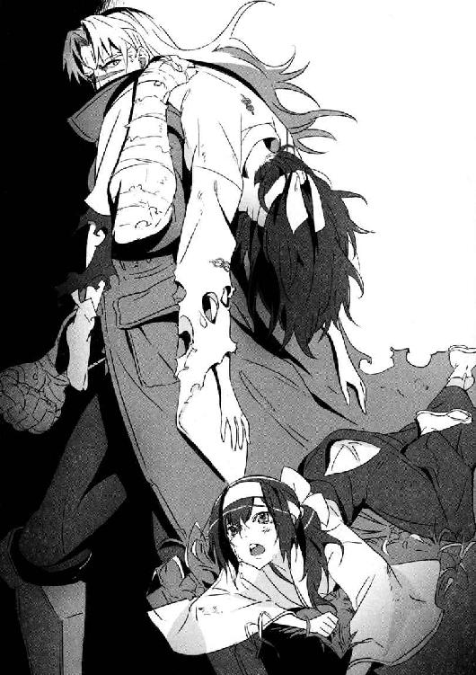
「ユキナ......!?」
一瞬、見間違えた。だが、別人だ。
（見張りが守っていたのは、彼女か？）
なんにしても、取り返したほうがいいだろう。
すでに二人殺し、佐鳥にひどいことをした──グランカは間違いなく「悪党」だ。
一緒に、セルジュと彩離も到着していた。危険を避けるために、七湖にはその場から動かないように言っておいた。
「彩離は佐鳥を安全な場所へ！ そして銃を持ってこい！」
「わかった！」
彩離は、謙吾の指示通り佐鳥を抱いて走り去っていく。
「お前みたいな大物がなんでこんなところにいるのかは知らないが──」
謙吾は、グランカに向けて猛ダッシュ。
「民間人を殺した犯罪者をタダでは逃がさん。その少女も返してもらう」
地面を蹴って、上から叩きつけるような蹴りを浴びせる。
「............」
グランカは、右手で謙吾の蹴りを受け止めた。
謙吾は、まるで鉄柱に蹴りを打ちこんだかのように錯覚する。それほど、敵の腕は硬い筋肉で覆われていた。
タイミングを合わせて、セルジュもグランカに仕掛けていた。足をからめて、軽く関節を極めながら引き倒そうとするが──グランカはびくともしない。
「なんやコレ!?」
セルジュが驚いて叫んだ。人間の関節は、逆方向の力に耐えられるようにはできていない。どんなに分厚い筋肉があってもだ。それなのに、グランカの関節は鉄骨で固定したとしか思えないほど強固だった。
フック、ストレート、掌底打、肘打ち、膝蹴り、上段回し蹴り、後ろ回し蹴り──謙吾は次々と打撃を繰り出すが、グランカは高速で右手を動かし、それだけですべての攻撃を受け流してしまう。
（特殊能力者か！）
謙吾は気づいた。いくらＧＥＮＥＺを着用していないとはいえ、普通の人間が謙吾の攻撃を片手でしのげるものではない。
グランカの体が回転し、目にもとまらぬ電光石火の蹴りが放たれた。
「くっ！」
敵の足が、謙吾の腹部に炸裂した。あまりの威力に、踏ん張りがきかない。吹き飛ばされた謙吾は、滞空中に体勢を立て直し、自分から回転して受け身をとった。
なんとか着地に成功するが、腹に蹴りをくらったので呼吸が苦しくなり、胃の中のものをすべてぶちまけそうになる。
「オイコラァ！ 俺の仲間にナニしとんのや！」
そう叫んで、セルジュはグランカに殴りかかった。
戦闘用ゴーレムであるセルジュは、本気になったらＧＥＮＥＺを着用した謙吾とほぼ互角の戦いを演じることができる。
それはつまり、戦車や装甲車とも戦えるほどの力、ということだ。
「セルジュ、火は使うな！ 女の子がいる！」
痛む腹を抱えて、謙吾が叫ぶ。
「わあっとる！」
セルジュの拳が、フック気味にグランカの顔面に入った。
「......！」
グランカの長身がぐらり、と揺れる。
さすがに、セルジュの一撃は効いたようだ。
しかし、グランカはすぐに反撃に出た。
無造作に伸ばした右手で、セルジュの髪をつかむ。
「う！」
髪をつかんで引き寄せてから、グランカは膝蹴りを打ちこんだ。セルジュは振り払おうとしたが、グランカが異常な怪力のため上手くいかない。
ゴッ、ゴッとセルジュの顔に打ち込まれる膝。鼻血が噴きだす。
「ぐうッ！」
「セルジュを放せ！」
彩離が戻ってきた。愛用のシュタイヤーＭ９拳銃を構えている。野生動物に備えて、麻酔弾を装塡したものだ。
彩離は歩きながら引き金を絞った。野生のイノシシも一発で眠らせる麻酔弾を、立て続けに三発、グランカに当てる。
「ウソ!? 倒れない！」
「彩離！ 気をつけろ！ こいつは普通じゃない！」
グランカは強力な麻酔弾にも耐えたが、セルジュから手を離した。
ここで、里の猟師たちが次々と駆けつけてきた。猟銃を用意していたので、謙吾たちより少し遅れたのだ。猟師たちは、グランカに向けて一斉に猟銃を発砲する。
謙吾は思わず目を丸くした。
（里の人間は何を考えてるんだ!? あの少女が死んでもいいのか！）
麻酔、そして大量の散弾を浴びて、グランカは謙吾たちにとどめを刺すのを諦めて本格的に逃亡を開始する。
６
グランカの身体能力は人間離れしていた。このあたりの地形に慣れた里の猟師たちでも、とても追いつけない。
──逃げられた。
謙吾は、苦い顔で口の中にたまっていた唾を吐いた。どんなタネがあるのかは知らないが、ＧＥＮＥＺなしで勝てる相手ではなかった。
「謙吾！ 何があった！」
ユキナと、彼女の両親が走ってきた。
謙吾は手短に自分が知っていることを説明する。佐鳥とピョートル・グランカについて。そして、グランカが謎の少女をさらっていったことについて。
説明しながら、謙吾の中である疑念が確信に変わった。岩清水家で見た、柱の傷。あれはやはりユキナのものではなかった。もう一人、いたのだ。ユキナに近い年格好の、天照流軍用小具足の少女が。
「あの少女は、ユキナの姉ですか、妹ですか」
説明を終えた謙吾は、単刀直入に訊ねた。
「は......？」
ユキナは、謙吾の言葉に目を白黒させた。姉や妹と言われても、寝耳に水だったのだろう。
「............」
しかし、ユキナの両親は謙吾の言ったことを完全に理解し、動揺していた。父の一兵と母の妙子は、どこまで話すべきか迷って互いに目配せをした。
ユキナは両親の気配に敏感だった。
「どういうことなんですか、お母様、お父様！」
「......その話は長くなると思うよ」
意外な声が割り込んできた。
海神学園の大迫だ。彼が、なぜか天照流の隠れ里にいる。
「大迫先生......!?」
現れたのは、大迫だけではなかった。上空にはヘリコプターが飛び、降下用のロープで次々と海神学園の生徒会憲兵隊が着地してくる。ＳＣＰＧの隊員たちは、強力な軍用ライフルであるＭ14ＥＢＲを構え、フルフェイスのヘルメットにボディアーマーというフル装備だ。ライトで地上を照らし、轟音をたてる五機の輸送ヘリに、里の人々は警戒心むき出しの視線を向けている。
ヘリからロープで降下すれば、確かに移動の手間はかなり省けるだろう。しかしそんなことをすればユキナは里の人々から白い目で見られるだろうし、山の天気は変わりやすいからよほどのことがない限りヘリは飛ばすべきではない。
それでも大迫がやってきたのは、そうしなければいけない理由があり、それだけのリスクを冒す価値があったということだ。
「さらわれたのは、天照流のみなさんが隠していたもう一人のナイチンゲール......ですよね？」
大迫が核心に触れた。
「............」
ユキナの両親は何も答えられない。
その無言が、大迫の言葉が正しいことを証明していた。
瞬間、謙吾の中でパズルのピースが組み合わさった。
あの少女がナイチンゲールだったのなら、すべて納得だ。
里の猟師たちは、ためらいなくグランカに向けて散弾をぶっ放していた。担がれた少女の存在は、まったく気にせずに。それはそうだ。不死身の少女相手に発砲を遠慮する必要はない。
「なんで、こうなる前に警告してくれなかったんですか」
セルジュが非難の声をあげた。
大迫は頭をかきつつ、答える。
「こっちもギリギリだったんだって。こっちが情報をつかんだはいいが、ピョートル・グランカのバックには日本の大物政治家がついていて、うかつに手を出すことはできなかった。それに、お前たちはまだ気づいてないだろうけど、この里の有線電話はすべて敵に盗聴されてるぞ。祭りの時期を狙ってたんだ」
「......っ！」
「数日前の電線の事故ってのは、盗聴器を仕掛けるためのものだったんだ。ここはお前たちの携帯電話も圏外だろ？ こうやってヘリで駆けつけるしかなかったわけ。──結局、惜しいところでグランカは逃がしちまったみたいだが」
「グランカの狙いは？」と謙吾。
「世界的な武器商人が不死の秘密を狙ってる」大迫は即答した。「張鐘と林が、イギリスＭＩ６の依頼で動いていた。そして襲撃された」
「あの二人が！」
謙吾は焦る。二人とも知り合いだ。
腕もいいし、さっぱりとした性格の頼りになる先輩たちだ。
「襲撃したのは、ピョートル・グランカの部下たちだ。つまり、二つの事件はつながってるわけ。あ、そうそう。安心しな謙吾。二人ともちゃんと生きてるよ。ちょっと話したら『教授』と『ウォードッグ』に任務を妨害されたって」
ウォードッグは、ピョートル・グランカと同じ冷戦が生み出した悪夢の一つだ。ただし、陣営が違う。グランカはソ連で、ウォードッグはアメリカ生まれ。
教授は評判の悪い戦争犯罪者であり──どうやら魔術に関わる特殊技能を持っているらしいが、詳しいことはまだわかっていない。教授と戦った人間は、高確率で死亡しているからだ。
「ピョートル・グランカは、本当に大事な仕事は部下に任せず自分の手で直接片付ける......噂は本当だったみたいだな。さすがは元スペツナズってところだ。これよりチーム『ビーバス＆バットヘッド』はクロアチアへ向かうぞ。そこに、ヤツの拠点がある」
大迫が指揮官の口調で言った。
「任務に入る前に、どういうことか聞かせてください......！」
ユキナが、自分の両親に詰め寄った。その双眸には、うっすらと涙がたまっていた。
「さらわれたのは、お前の姉にあたる」
母が、眉間に深いしわを刻んだ暗い表情で答えた。
「姉......？」
そんなことを言われても、ユキナは寝耳に水だ。人間は、驚きすぎたり苛立ちが限度を超えると逆に体から力が抜けてくる。肺から息が抜けていくような脱力感に襲われる。今のユキナがまさにそうだ。
「初めて聞きました！」
「お前には言えないことがたくさんある」
「大迫先生は!? 何か知っているんですよね？」
ユキナは追及の矛先を学校の教師に向けた。だが──。
「俺が知ってるのは、この里にもう一人ナイチンゲールがいる......それだけだよ」
大迫の返答はそっけなかった。
噓だ、とユキナは思った。だが、ユキナの両親が言えないことを、大迫が勝手に答えるわけにもいかないのだろう。一度話さないと決めたら、大迫の口は固そうだ。
「ただ一つだけはっきり言えるのは、あの娘を世に出してはいけなかったということだ......」
そう言って、父はユキナに背中を向けた。少し遅れて、母も同じようにする。
「......逃げるんですか！ 親のくせに！」
叫んでから、自分でもひどいことを口にしてしまった、とユキナは思った。でも、止められなかった。このままではいくらなんでもひどすぎる。
「今は何を訊かれても答えられない......」
と、振り向きもせずに母が言う。
両親が遠ざかっていく。鳴神神社に向かっているようだ。追いかける気にはなれなかった。ユキナは拒絶されたのだ。少なくともユキナはそう感じていた。悲惨な祭りの夜が終わろうとしていた。
７
ピョートル・グランカは、拉致してきた少女を縛っていた縄を解き、鋼鉄の椅子に座らせた。椅子にはひじかけと脚の部分にベルトがついているので、改めて拘束し直す。
グランカの隣には、教授とウォードッグもいる。
厚い壁越しに、強い風の音が響いてくる。
「君は......ナイチンゲールだろ？」
ウォードッグが訊ねた。
少女は、とっくの昔に目を覚ましていた。まったく抵抗する素振りは見せない。
長い間あまり手入れをしていない、長い濡羽色の黒髪だ。巫女装束はあちこち破れていて、弾力のある小高い乳房や白い山なみのような艶めかしい太ももが隙間から覗いている。
鼻筋がくっきり通っていて、あごが細い。
唇は常時皮肉っぽく歪んでいる。
だが──何より特徴的だったのは彼女の目だった。
射ぬくような怖さを帯びた、荒んだ目をしている。
「......ナイチンゲール？」と、少女が訊ね返したので、ウォードッグが「なんだ、知らないのか」と少し驚いたような顔をした。
「不老不死の少女のことだよ」教授が補足する。「他人に不死を与えることもできる」
「ああ、そういうことか......」
少女は苦笑する。
「私の里では、そういう人間のことを『石長姫』と呼んでいたのよ。石のように傷つかず、永遠の命を持っている。私は『わるい石長姫』だから......『妹』とは違って、あんなところに監禁されていた。あなたたちが『助けて』くれたんだ」
「『助けた』......？」
ウォードッグと教授は顔を見合わせた。そんなつもりはなかった。
グランカたちは、少女が天照流軍用小具足に守られていると思っていたのだ。
しかし、言われてみれば、この少女は神社の裏の建物に拘束された状態で監禁されていた。守るべき対象を、あんなに雑に扱うのはおかしいといえばおかしい。
「ちなみに、ここどこ？」
少女の問いかけに、グランカが答える。
「空。輸送機内だ。もう、日本を出た」
「こっちからも質問だ。お前の名前は？」とウォードッグ。
「私？ 私はニキ。岩清水ニキ」
そう答えて、石長姫──ニキ──は歪んだ微笑を唇に浮かべる。
「......で、あんたらは私に何をさせるためにここまで連れてきたワケ？」
第四章 クロアチア潜入作戦
謙吾は、命令されるのが好きだ。
家族の愛を受けることなく、多感な時期を訓練キャンプで過ごし、常人離れした戦闘スキルを得た代償として、謙吾は自分の将来に夢や希望を一切抱けない少年になっていた。
兵士とはそういうものだ。最初は他人から命令されることに嫌悪感を覚えるが、やがて自分で何も考えなくていい状態に快感を覚えるようになる。命令されることが快感になる。
自分で考えて、自分で決めて、自分で選択するということは、実はとても辛いことだから。
命令されてやったことには、責任を感じなくていい。
もちろん謙吾には正義感があり、信念もある。だが、それとこれとは別の話だ。正義感や信念というものは実はイデオロギーであり、アイデンティティに直接つながるものではない。
あの地獄のような訓練キャンプを「卒業」した謙吾は、グリークスに拾われて海神学園に編入した。そこで少年らしい感性を多少取り戻すと同時に、謙吾は自分の将来に対する心細さを味わった。
戦うことをやめたら──俺の人生は空っぽになってしまう。
「上官なら、俺に『命令』をしてください。なんでもやります」
初対面のとき、謙吾は厳島アイナにそんな言葉をぶつけたものだ。
謙吾は、命令されるのが好きだ。
何をやればいいのか、目的、あるいは作戦達成条件が決まっている状況が好きだ。
そんな謙吾は、プライベートではほとんどの時間を家庭用ゲームに費やす。ほとんどのゲームにはクリア条件があり、エンディングがある。
ゲームの中で、次々と目標を達成していくのが、楽しい。
自分の人生の「クリア条件」は闇の中にあってまだ見えてこない。このまま一生戦い続けるつもりなのか？ 孤独な老人になって平気なのか？ そもそも、こんな危険な生活をいつまで続けられるものなのか？
一般的に少年兵の寿命は短い。しかし問題は、生き残ってしまった少年兵の行く末だ。そんなことを考えていたら、妙に胃のあたりが重くなって悩みは尽きない──。
１
日本からクロアチアへの直行便はまだ一本もなかった。分隊指揮官の大迫、エースの謙吾、セルジュ、彩離、まだまだサポート役のユキナと七湖。以上六人は、グリークスの軍用機でスラヴォニア地方の空軍基地に着陸。民間機なら手続き含めて一〇時間近くかかる行程が、およそ半分にまで短縮できた。
空路から陸路の移動に切り替える際、七湖は別行動をとることになった。
「どうして私が一緒に行っちゃいけないの!?」
と、七湖に詰め寄られても、大迫はとぼけた表情だ。
「安全な任務じゃないんだしさあ。装備科の人間が直接乗り込むのはリスクが大きすぎる。作戦上必要な措置なんだよ。駄々をこねられても困る」
「でも......」
「別行動でも、仕事がないわけじゃないんだから」
「......はーい」
そこまで言われれば、七湖も渋々承諾するしかなかった。
七湖の別動任務は「上空で待機、そして電子的なバックアップ」。
そう──「上空」だ。
今回、七湖はグリークスが所有するＥ８－Ｃジョイントスターズ地上偵察機に乗りこむ。
空中給油を受けながら、任務完了まで上空から謙吾たちを支援するのだ。
七湖と別れた謙吾たちは、防弾処理が施されたステーションワゴンでピョートル・グランカの拠点──クロアチアの地方都市ヴコヴァルに入る。ちなみにこのワゴンには、様々な銃器や二台のＧＥＮＥＺが搭載されている。
窓からヴコヴァルの街並みを見たユキナが、驚いて「すごい街だな......」とつぶやいた。
クロアチア東端ドナウ川西岸の街、ヴコヴァル。
ヴカ川を境に北と南に分かれている。
街の古い建物はバロック様式だ。重厚で、装飾は歪んだラインが強調されている。
クロアチアの街には、大体、中央に広場がある。大通りには喫茶店や商店が建ち並び、少し横にそれると細い路地が迷路のように入り組んでいる。民家は褐色の屋根がわらが鮮やかだ。
丘の上には美しくも荘厳なフランシスコ会修道院がある。
しかし、ユキナが「すごい」と言ったのはただ街の美しさだけの話ではなかった。
ヴコヴァル市立博物館は修復中だ。
砲撃、爆撃を受けたせいである。
激しい戦闘の爪痕は、それだけではなかった。
「この街──ヴコヴァルは、戦場だったのさ」
車内で揺られながら、謙吾が軽く説明する。
「かつて、バルカン半島にはユーゴスラビア連邦人民共和国があった。連邦を構成するのは、セルビア、クロアチア、スロヴェニア、モンテネグロ、マケドニア、ボスニア・ヘルツェゴヴィナの六か国。一九四五年の話だ。
一九九一年に、セルビアと対立する形でスロヴェニアとクロアチアが連邦からの離脱、独立を宣言。ユーゴ内戦の始まりだ。戦争は一九九五年まで続いた。戦時中にこの街──ヴコヴァルは、ユーゴスラビア連邦軍におよそ一〇〇日間も包囲されてたんだ。内戦では大量の死者と難民が出た。──ユキナは、バルカン半島の歴史には詳しくないのか？」
「あんまり......」
謙吾の悪いところが出た、とユキナは思った。戦争や軍事に関わる知識を、まるでそれが一般常識であるかのように話すのだ。
「中学や、前に通っていた高校で習わなかった？」
「習わないだろう」
「ユーゴ・パルチザン指導者チトーの伝記や映画は......」
「チトーって......誰だ？」
「そっか、最近の高校生はそういうものなのか......」
「なんだか、今の言い方イラッときたぞ」
妙に腹が立ってきたユキナは、ワゴンの後部座席で隣に座っている謙吾をぽかぽかと軽く何発か殴った。
「何が『最近の』だ！ 自分もそうじゃないか！」
「ご、ごめんユキナ！ 悪気はなかった！」
謙吾たちは、ホステルに宿泊することになった。
国際ユースホステル協会加盟の宿泊施設だ。
八階建てのオーソドックスなマンションがあり、その数部屋がホステルになっている。
時差は日本より八時間遅れ。日本を出たのは昼間で、何時間も飛行機に乗ってきたはずなのにクロアチアに到着しても時差のせいでやっぱり昼間だった。
近所のレストランで食事。謙吾たちにとっては夕食だが、クロアチアでは昼食ということになる。恐らく、今日クロアチアでとる最初で最後の食事になるだろう。
大迫が注文したのは、クロアチアの伝統料理「ペカ」だ。羊の肉を長時間蒸し焼きにしたもので、ポテトと一緒に辛めのソースで食べると美味い。
クロアチアは海産系の料理もいけるので、イカ墨のリゾットやロブスターやムール貝のサラダなども注文。どのシーフードにもほどよくバルサミコが効いている。
「この街の端っこに、ピョートルの拠点がある」と、ペカを食べながら大迫は言う。「古い要塞を改装したものらしい。現在、情報部の連中が偵察衛星まで使ってＳＩＧＩＮＴ──信号傍受情報収集を、偵察機がＥＬＩＮＴ──電子情報収集をかけてるところだ。それをもとに、作戦課がすぐに侵入路を決定する」
情報部の手伝いをしているのは、例の天才ハッカー三人組、コバさん、ヒデヨシ、鞠歌だ。そして、偵察機にいるのが七湖。つまり、バックアップを担当しているのは「ファンタスティック・フォー」ということになる。作戦課はまた色々と口を出してくるのだろうが、最終的な決定権は大迫にある。
「ユキナ、食事が進んでないな」
謙吾は気づいた。さっきから、ユキナがほとんどナイフもフォークも動かしていない。水ばかり飲んでいる。
「あ......ああ、なんとなく食欲がなくてな。大丈夫。ただの時差ボケだ」
「なら、いいんだが......」
ユキナは強がっているが、瞳の奥では不安の影が揺らめいていた。
本当は、もっと自分の両親と話がしたかったはずだ、と謙吾は推測する。急に、ユキナに姉がいることが明らかになって、そして祭りの夜にさらわれた。
ユキナには、訊きたいことが山ほどあったはずだ。
しかし彼女の両親は、それまでの平和な家族の光景が噓だったかのように急に冷たい態度を取って、疑問をぶつけてくる義理の娘に背中を向けた。
（ユキナの両親が、まだ他にも隠し事をしているのは間違いない）
謙吾としては、ピョートル・グランカがＭＩ６から奪った荷物のことも気になる。
林と張鐘を敗走させたというのだから、敵の戦力はかなり整っていると見たほうがいい。
（全部、上手く片付くといいんだがな......）
２
世界最悪の武器商人──ピョートル・グランカ。
かつては、ソ連軍参謀本部情報総局に所属する特殊部隊の一員だった。スペツナズの仕事は、偵察、破壊工作、対テロ突入作戦──そして暗殺だ。
アメリカとソ連が対立していた冷戦時代──東西両陣営では、様々な新兵器の実験が行われた。ステルス機や気化爆弾など、当時の秘密兵器のうちのいくつかは、湾岸戦争を契機に一般にも公開されるようになった。
しかし、当然のことながら、何があっても一般には公開されない兵器もある。非人道的な実験の末に生まれた兵器は特にそうだ。
ソ連軍の一部で、兵士を薬品によって強化する作戦が進められていた時期がある。家族のいない、戦災孤児収容施設出身のグランカがその実験台に選ばれた。
骨を鉄のように硬くしていく薬品の注射──。
筋肉を極限まで発達させる特殊ステロイドの投与──。
視力、聴力を高め、毒物を体内で無効化することもできる、無敵の薬物強化兵士。
実験はある程度まで上手くいったが、薬には当たり前のように副作用があった。
まず、グランカは年齢を重ねても外見が変化しなくなった。見た目が若いのはそのためだ。
そして、良心がなくなった。
痛覚──痛さや熱さ──を鈍くする薬品の副作用だ。
薬物で強化された兵士の部隊は、突然解散され、兵士は口封じのため政府によって殺されていった。解散は、ソ連崩壊とそれにともなう冷戦終結のせいだった。ソ連はロシアになり、政治家も国民も冷戦のことなど恐るべき短期間で忘れ去っていった。
仲間を殺し、なんとか生き延びたグランカは、国家への忠誠心はなく良心もなく、ある意味自由な人間となった。
スペツナズの特殊兵でなくなったグランカは、武器商人となった。ソ連崩壊の時期、大量の兵器が「所属不明」となり、闇市場に横流しされていた。グランカが扱ったのは、そういった横流し品だ。口封じされかけたとはいえ元軍人なので、グランカには秘密のルートにコネがあったのだ。
グランカの商売のやり方は、容赦がなかった。逆らうものは、自分の手で殺した。なにしろ──一切の良心がないのだ。しかも、薬物で強化されたグランカの肉体は銃弾を跳ね返し、素手で装甲車を解体できるほど強靭だった。どんな罠も、官憲の取り締まりも暴力で切り抜けていく。同業者や関係者は、彼を世界最悪の武器商人と呼んだ。
チェチェンのテロリストにロシア軍の武器を売るという離れ業をやってのけたグランカは、いつの間にか巨大な富をなしていた。
「......ピョートル、そろそろ行きましょう」
秘書の女が言った。
女は有能な秘書であり、グランカの妻だという。
他人事のような言い方になってしまうのは、そのあたりの記憶が曖昧だからだ。
年月が進むにつれて、感情や記憶が薄くなっていく。
薬の副作用が進行している。
このままだと、あと数年で魂のない人形のようになってしまうはずだ。
グランカがぼんやりしていたら、女が背後から優しく抱きついてくる。
「......あなたは、私の言う通りに動けば上手くいくんです」
「......ああ」
そう言われれば、思いだす。
この女と初めて出会ったときのことを。
この女と結婚したときのことを。
感情も記憶もすり減っていく中、女の存在だけがグランカを人間らしくしていた。
３
ヴコヴァルの南側に、古い要塞がある。クロアチアには、中世に建てられたような古城や要塞が今でも各地に残っている。
要塞の周囲には高い石の城壁がそびえ、さらにヴカ川からひいてきた水が流れる堀で囲まれている。門の前には跳ね橋があり、普段は巻き上げられていて不審者の侵入を防ぐ。要塞の四隅には鐘楼がたち、その頂上には狙撃銃を持った見張りがいる。
建物の一部は大理石で、そこには装飾として聖人の姿が刻まれていた。
城壁と要塞は石の橋で結ばれている。
要塞自体は四階建て。詳細は明らかになっていないが、地下には水牢があり、昔は拷問に使われていたそうだ。
作戦課の助言を受けつつ大迫が立案した作戦は、水路を使った侵入だった。
「要塞は見張りが多い。大部隊で急襲するのは混乱のもとなので避けたい。クロアチア政府にあんまり借りは作りたくないしな......。そこで今回は、水牢から内部に侵入する隠密作戦でいく。侵入するのは、ＧＥＮＥＺを着用した謙吾とユキナだ。ＧＥＮＥＺなら水路に仕掛けられたセキュリティも楽に突破できるし、ユキナがいれば待ち伏せを受けてもギルガメシュ化で強行突破できる」
ギルガメシュ化──すなわち、一時的に不死になること。
大迫の作戦に、セルジュが「俺と彩離も一緒でええんちゃう？」と口を出した。すると大迫はよどみなくこう答えた。
「林と張鐘の話を聞く限り、今回の敵はたくさんの特殊傭兵を抱えていて、しかもまだ全体像がつかめていない。何かあった時のために、セルジュと彩離はとっておきたい。最悪の事態に陥っても、すぐに救出作戦を展開できるしね」
大迫ははっきりとは言わなかったが、グランカを恐れているのだろう、と謙吾は思った。
天照流の隠れ里で、謙吾とセルジュは二人がかりにもかかわらずグランカを逃がしてしまった。あのとき、謙吾はＧＥＮＥＺをつけず、ギルガメシュでもなかったが、グランカも左肩に少女を担いだハンデつきの状態だった。勝てる、という保証はどこにもない。二手に分けることで、全滅のリスクも分散したいのだ。
夜、周囲が暗くなるのを待って、ひとけのない場所を選び、謙吾とユキナはワゴンから直接飛び降りてヴカ川に入った。川の底を移動して、要塞の堀を目指す。
謙吾の剣歯虎型ＧＥＮＥＺは、水中用に推進装置を背中に追加されていた。水を吸い込み、それを電磁の力で勢いよく放出することで前に進むという、静かだがかなりの高速を出すことができる装置だ。
ユキナも、水中で行動するための装備を身につけている。暗視装置付きのゴーグル、ＤＲＡＧＥＲ・ＬＡＲという酸素を循環させるための潜水装置、足には水をかくフィン、そして特殊作戦用の様々なツールが詰まったブリーフケースだ。
ユキナの服は、黒のダイビング・スーツである。ダイビング・スーツは民間軍事会社グリークスが独自に開発した特殊ナノファイバー製で、体にぴったりフィットするほど薄いが保温性と気密性は他社のものよりはるかに優れている。
このダイビング・スーツだとユキナのバストやヒップのラインが露骨に出るが、それを恥ずかしがっているような場合ではなかった。少女の肢体が生み出す美しい曲線に沿ってぬめりと黒く輝くスーツの表面はまるで第二の皮膚のようにも見えた。
クロアチアの川は、日本よりもずっと水がきれいで、川底にたまったゴミやヘドロの量も少なかったが、それでも視界はそれほどよくなかった。ユキナは、とにかく謙吾を見失わないようについていく。謙吾のＧＥＮＥＺには衛星や偵察機とリンクした高性能センサーが搭載されているので、道を間違えたりすることがない。
謙吾とユキナは、要塞へとつながる古い水路に入っていった。
（こんな神秘的な場所は、できることなら観光で訪問したかったな......）
フルフェイスの完全密閉ヘルメットをかぶっている謙吾と違って、酸素の呼吸器を口にくわえているユキナは声を出すことができない。そのことも忘れて、ユキナはため息をつきそうになった。
石のブロックによって、水の流れる道が形成されている。水没した街のトンネルの中を進んでいるような気分だ。
侵入者を防ぐためだろう。頑丈そうな鉄格子があちこちに設置されている。謙吾が、ＧＥＮＥＺの腕についた超硬合金の牙で鉄格子を切り裂く。普通だったら水中用の高出力ガスバーナーが必要なところを、ほんの数秒で突破することができた。
さらに進んでいくと、分厚い鋼鉄の扉に突き当たった。つい最近──といっても、ここ数年の間に──作られたものだろう。堀と水路を仕切っている。防犯のためには当然の処置と言える。
謙吾は、ＧＥＮＥＺのセンサー類で扉をスキャンした。扉は観音開きで施錠されている。赤外線、電磁波検知、ファイバースコープ、電子聴診器──様々な方法を使って扉を調べた結果、強引に開けようとすると圧力を感知して警報が鳴るタイプのセキュリティだとわかる。
──圧力をかけてはいけない。
──しかし一瞬で「斬る」のなら、圧力はほとんど発生しないはずだ。
謙吾が両腕を振るうと、牙が火花を散らし、扉に三角形の大穴が開いた。警報は無反応。上手くいったのだ。
謙吾とユキナが細い縦長穴から顔を出すと、そこは事前の調査通り地下の牢獄だった。ピョートル・グランカの要塞に侵入成功したのだ。牢屋と拘束具が並んでいて、人をくくりつけて回す水車や、逆さ吊りにしてから顔をつける大きな桶などもあった。どれも古い器具だったがちゃんと手入れされている。今も使われているようだ。
水からあがったユキナは、まずＤＲＡＧＥＲ・ＬＡＲ潜水装置を外した。重くて動きにくいからだ。足のフィンやゴーグルと一緒に、牢屋の隅に隠しておく。
ユキナは、ブリーフケースを開けた。中から、コンバットブーツとタクティカルベスト、そしてＭＰ７サブマシンガンを取り出した。
「......なんだか、わからないことだらけだよ。あの少女は何者なのか。私の姉とはどういうことなのか。義理の両親は、私に何を隠しているのか。ピョートル・グランカとやらの狙いはいったいなんなのか......」
ダイビング・スーツの上にベストを身につけながら、ユキナは話し続ける。
「わからないことだらけなのに、今は敵の要塞に乗りこんで戦闘の準備をしてる。なんだか、ざわざわして落ち着かないんだ。もちろん、大事な任務中に、こんな気持ちじゃいけないと思うんだけど......」
そう言って、ＭＰ７に弾倉をさしこみ、レバーを引いて薬室に初弾を装塡。安全装置も解除し、フルオート射撃にセットする。
「......ユキナ」
不安は当然だ、と謙吾は思う。今まで、ナイチンゲールという特殊能力者であってもユキナがまっすぐ育つことができたのは、温かい家族の支えがあったからだ。その支えが、大きくぐらついてしまった。
「私は、どうなってしまうんだろう......？」
心が波を打つユキナに、謙吾は「大丈夫」と声をかけて軽く肩を抱いた。
「他の人間がすべて裏切ったとしても、俺は最後までユキナのそばにいる」
「......謙吾」
「どんな任務よりも、ユキナを守るのが最優先だ」
ユキナの瞳に、安堵の色がにじんだ。嬉しそうに謙吾の胸に頰をよせる。
「ＧＥＮＥＺの装甲......でも、謙吾が着ているんだと思うと、温かく感じるよ」
「ご......合金製の複合装甲だ。機械工学と弾道学の結晶。特殊な耐衝撃構造のおかげで、二〇ミリ口径の機関砲弾でもびくともしない」
なんとなく照れてしまって、謙吾は面白みのない答えを返した。
「そろそろ行こうか、ユキナ」
「うん......準備ＯＫだ」
地下から出て、階段の踊り場で防犯カメラを見掛けた謙吾は、ＧＥＮＥＺの電波妨害機能を使った。一時的にカメラの映像を乱れさせているうちに、侵入用の無線コネクタを素早く取り付ける。すぐに電波妨害をやめて、カメラを見ているであろう警備の人間に怪しまれないようにする。ほんの数秒映像が乱れただけなら、誰もがただの機械の不調だと思う。しかし実際は、この無線コネクタを通して警備用のパソコンとジョイントスターズ地上偵察機の電子装備がリンクすることになる。
犯罪者の拠点で使うようなパソコンは、ネットにつながないのが当たり前である。そこで、七湖を直接連れていくか、今回のように無線コネクタでリンクさせるといった行為が必要になる。
「七湖、つなげた」
と、謙吾がＧＥＮＥＺに内蔵された小型の衛星通信機で上空の偵察機に連絡を入れた。
『二人きりなんて、反対だなー。私も行きたかったなー』
などと軽くぼやきつつ、七湖は得意のハッキングでたちまち要塞のセキュリティシステムを掌握した。防犯カメラの映像をループさせて、すべてのドアをアンロック。
『ちょちょいのちょい、と』
前回、ウィルトゥスとの戦いでは、常に七湖が同行していた。無線コネクタだと、データの転送量や安定性、信頼性に不安が残るし、電波妨害がかけられるとどうにもならないからだ。しかし、ピョートル・グランカの拠点はウィルトゥスほどデジタルに強くないだろうという判断から、今回は無線コネクタ経由のハッキングが採用された。
『全然違う場所で警報を鳴らして、敵の見張りを誘導しとくね』
「頼む。さすが七湖だな」
『へへへー、役に立つよ、私は』
七湖は、謙吾たちがいるのとはまったく反対側で警報を鳴らした。グランカの部下──警備員たちは、上手く騙されて謙吾たちとは逆方向に急行していく。警備員の位置や無線連絡も七湖には筒抜けだ。
オスマン帝国と戦っている時代につくられた古い要塞の中を進む謙吾とユキナ。七湖のおかげで見張りはいないし、すでにグランカの部屋がどこにあるのかもわかっている。
『幸運なのか不運なのかはわからないけど、ピョートル・グランカは外出中みたい......やつが連れ去ったっていう少女も、カメラで見る限りどこにもいないよ』
「だとしても、手掛かりは残ってるはずだ。グランカの部屋に向かう」
『了解。ほとんどの見張りは偽の警報に向かってるけど、グランカの部屋の前にはまだ二人残ってるから気をつけて』
要塞は四階建てだ。そして、グランカの部屋は最上階。
石造りがむき出しの要塞内部は、まるで洞窟だった。
ＧＥＮＥＺとユキナのブーツの足音が、カツンカツンと甲高く反響する。
四階に到着。七湖の情報通り、グランカの部屋へと通じるドアの前には、完全武装の警備兵が二人立っていた。しかし、謙吾はどんどん彼らに近づいていく。「止まれ！」と警告されても気にしない。警備兵は、持っていた拳銃で謙吾を撃ったが、ＧＥＮＥＺの装甲には通じない。ガキンガキンガキン！ と金属音がして、火花が散って──中身は無傷だ。
筋力が強化されているので、謙吾が軽く撫でるような手刀を当てるだけで警備兵たちはあっさりと転倒し、意識を失った。
謙吾がドアを蹴り破って、グランカの部屋に入る。それにユキナが続く。
グランカの部屋は基本的に殺風景だった。広い空間に分厚いペルシャ絨毯が敷かれ、スイス製のブランド高級ベッドが設置されているが、趣味や娯楽につながるものが一切見当たらないのだ。酒の棚には、同じ銘柄のウォッカばかりがびっしりと並んでいて、楽しむために飲むというよりは燃料のような印象を受ける。
壁際に仕事用らしきデスクがあったので、謙吾とユキナはすべての引き出しを開けて調べた。指紋認証とパスワードがかかった引き出しがあったので、謙吾がＧＥＮＥＺの怪力で無理やりこじ開ける。中には、ノートパソコンがあった。これを調べれば、グランカがどこに向かったのか、ユキナの姉がどこに拉致されているのかわかるかもしれない──。
『謙吾、一人だけそっちに向かってる！』
突然、七湖からそんな報告がきた。
偽の警報に騙されなかったヤツが、警備兵の銃声に気づいて駆けつけてきたのだ。
数秒後、部屋に現れたのは、留守番に残されていた特殊傭兵。
アフリカ系黒人のウォードッグだった。
二メートルの長身でドルチェ＆ガッバーナの白いスーツを颯爽と着こなし、派手な毛皮のコートを羽織り、髪は銀色。魔獣調教師ウォードッグ。
「......イエスはまた言われた！」ウォードッグは高らかに、歌い上げるように言う。「『わたしより前に来たものは皆、盗人であり、強盗である』」
「新約聖書、ヨハネによる福音書。第一〇章」
謙吾がすかさず引用元を当てた。
「君もクリスチャンなんですか？」
と、少し驚いたようにウォードッグ。
謙吾はかぶりを振り、
「いや、子供のころ暇つぶしに読んだだけだ」
「君たちは盗人かな、強盗かな？」
「どちらでもない。お前を倒し、グランカの陰謀を止める者だ」
「......倒せるかな、私が」
ウォードッグの影から獣が出現する。
黒い魔獣が──「二匹」。
「！」
「なぜ私が熱心なクリスチャンなのかわかりますか？」
そう言って、ウォードッグは謙吾に人差し指を向けた。
バグベアーに標的を指示しているのだ。
「こんな凶悪な魔獣が存在するなら、どこかに神様もいるはずなんだ」
周囲によだれをまきちらしながら、二匹のバグベアーが凄まじい勢いで謙吾に向かって突っ込んでいく。
バグベアーは、鉄のように硬い毛と筋肉の「かたまり」だ。しかも動きは速く、手と足には長い爪が生えていて、口には獲物を嚙み裂く牙がある。二つの「かたまり」が、ＧＥＮＥＺをまとった謙吾に直撃する。謙吾は受け止めようとするが、単純な力では負けている。背中から壁に叩きつけられる。それでもさらに二匹のバグベアーは突進を止めない。
「ぐッ！」
壁が崩れた。
謙吾とバグベアーは、要塞の四階から転落する。
「謙吾！」
ユキナは悲鳴をあげた。
「お嬢さんの相手はこの私が直接務めることとしよう」
言いながら、ウォードッグはコートの下から二丁のマシンピストルを抜いた。
ベレッタＭ93Ｒだ。一回引き金を絞るだけで、三発の弾丸が飛び出す。
「今、私が影の中で飼っているのはバグベアー二匹だけ。あの二匹を戦わせている間の私は、普通の人間。──ただし、射撃も格闘もかなりの腕前だと自負しています」
ウォードッグは、左右のベレッタを撃った。
バララン、バラランッ！ とリズミカルな銃声が鳴る。
「くうッ！」
六発の弾丸がユキナの体を貫いた。頭には一発も当たっていなかったのが不幸中の幸いだ。激痛に苦悶しつつ、ユキナはグランカの仕事用デスクの陰に滑り込み、身を隠した。
ウォードッグは撃ち続ける。デスクに次々と弾丸が突き刺さって破片が飛び散る。ユキナは謙吾の身を案じ、ついで引き出しの中にあるグランカのノートパソコンに流れ弾が当たりませんように、と祈る。
（謙吾のことだから、大丈夫......！）
そう自分に言い聞かせるユキナ。
分断されてしまった。この状況では、謙吾を不死身にすることができない！
４
四階から落下し、二匹のバグベアーとともに謙吾は石畳に叩きつけられた。
「くっ、は！」
奇妙な、かすれた声が謙吾の喉から漏れる。ＧＥＮＥＺのおかげで死にはしなかったが、二匹の体重と落下の衝撃でほんの一瞬息ができなかった。
「重いから、どいてくれないか！」
謙吾は倒れた姿勢のまま、まず一匹を思い切り蹴った。バグベアーが吹き飛んで、要塞の壁に激突する。
そして謙吾は残った一匹の足をつかんで、持ち上げた。
「どけッて言ってるだろ！」
そのまま、背負い投げの要領で投げる。石畳に頭から落とす。石畳に放射状のひび割れが走るが、バグベアーの頭蓋骨は割れていない。頑丈なものだ。
ようやく立ち上がった謙吾は、雄叫びをあげながら両腕の「牙」を限界まで伸ばした。長さ六〇センチをこえると、牙というより剣のようになる。
謙吾が蹴ったバグベアーが、全速力で戻ってきた。途中で飛び上がり、中国拳法の旋風脚のような動きで、右足の長い爪を切り下ろしてくる。本当に、見た目からは想像もつかない運動能力を持ったバケモノだ。
謙吾は、左腕の牙でバグベアーの爪を受けた。受けたはいいが力負けしそうになったので、牙を斜めにずらして敵の力を後方に流す。そしてバグベアーがバランスを崩したところに、すかさず右腕の牙で切り返す。
超硬合金の牙が閃き、バグベアーの右足が根元で切断された。
魔獣の太い脚が宙を舞い、切断面からどす黒い鮮血が爆発的に噴き出す。
（──次！）
足を背負って投げたバグベアーが、体勢を立て直して左右の手を交互に打ち振った。
相手の動きが速すぎて、ＧＥＮＥＺの牙だけでは完全には防げない。魔獣の爪が、装甲の表面を傷つけて火花が生じる。まだ中の謙吾には届いていないが、関節部分を集中的に狙われたらまずいことになりそうだ。
どう反撃しようか謙吾が考えていたら、右足が急に重くなった。
「なんだ!?」
下を向く。そこに、片足のバグベアーが嚙みついていた。謙吾のミスだ。完全にとどめを刺しておくべきだった。
右足に「重り」がついて動きが鈍くなった謙吾に、もう一匹のバグベアーがさらに激しい攻撃を浴びせる。謙吾は両腕をクロスさせ、身を低くして守りを固める。なるべく早く反撃しないと、長引けば警備兵も集まってくるし、何よりユキナを守らないといけない──。
その時だった。
「じゃっじゃ、じゃーん！」
自分の口で盛大なファンファーレを鳴らしつつ、上空から恐鳥型ＧＥＮＥＺをまとった堤彩離が急降下してきた。
「バットヘッド２！」
と謙吾。バットヘッド２──彩離の暗号名だ。
「一匹任せて！」
「アンダーソン１は!?」
「警備兵を片付けつつ、ユキナのもとに向かってる！」
彩離は、謙吾に両腕を叩きつけていたバグベアーに真上から襲いかかった。
危険を察したバグベアーが急降下を横にかわし、彩離は地面にめり込む勢いで着地した。
「ふっ！」
着地するなり、石畳に突き刺さった足を抜きつつ、彩離は引っ掛けるような蹴りをバグベアーに食らわせた。恐鳥型ＧＥＮＥＺの爪が、魔獣の剛毛と肉を引き裂く。ざッ、と爪の数だけ血の筋が生じ、鮮血があふれる。
彩離のＧＥＮＥＺは、謙吾のものよりも防御力で劣るかわりに、スピードがある。空中戦もこなせるようにデザインされた結果だった。
彩離は、次々とバグベアーに蹴りを当てていった。ハイからロー。ローからハイ。ハイとみせかけてミドル。ミドルとみせかけてロー。サバットのハイキックに、テコンドーの後ろ回し蹴り。変幻自在の蹴り技だ。
バグベアーも蹴りで対抗した。
爪と爪で切り結んで、耳障りな音が鳴り響く。
手数──いや「足数」で彩離が魔獣を圧倒する。
彩離は、前蹴りでバグベアーを要塞の壁に押し付けた。
「うおおォおおッ！」
彩離は吠える。力をこめて蹴りを繰り出す。
「おおおおッ！」
蹴りの連打。打ちまくる。蹴りまくる。
バンバンバンバンッ！ と打撃音が途絶えない。
彩離は地面に手をついて、逆立ちをしながら回転蹴りを放った。カポエイラの蹴りだ。暴力的な回転で、バグベアーの両手両足を切り落とす。
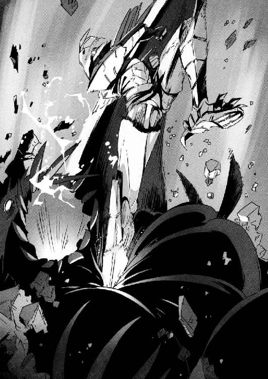
「これでとどめだッ！」
最後は、目と目の間に右足を深々と突き刺した。本来この世に存在してはいけないはずのバグベアー──異界の魔獣たちは、命を失うと内側から破裂する。血煙があがって、肉や内臓が四散するが、やがてすべては黒い液体のように溶けて消える。
彩離が一匹倒してくれた。
謙吾は足元のバグベアーに右の牙を突き刺す。
「......ツ！」
バグベアーがぐるるとうめき声をあげて怯んだ。
手の力だけで這って逃げようとする。
「逃がすか！」
謙吾は、バグベアーを追いかけて左右の牙を交互に突き刺した。
そのたびに噴水のような返り血を浴びる。
相手が逃げ腰でも容赦は無用だ。この手の魔獣は、放っておくとあっという間に回復して逆襲してきたりする。人間でも動物でもない、もっと別種の邪悪なもの。やるときは徹底的にやらねばならない。
背後からざくざくと突き刺して、五、六回目でようやく仕留めた。
──そしてユキナは、デスクの陰に釘づけにされている。
ウォードッグの二丁拳銃が火を噴いて、ユキナの周囲で弾丸が跳ねる。
弾丸が切れたと思ったら、ウォードッグは左腕の銃を捨て弾倉交換を行った。早業だ。確かに、ウォードッグは魔獣がいなくなったらザコ、というタイプではないらしい。
（助けを待つか......）
一瞬そう考えて、しかしすぐに首を左右に振るユキナ。
（いや、自分で何とかしたい！）
ユキナの手元には、ＭＰ７サブマシンガンがある。
──これで、戦うべきだ。
ユキナは今までに人を殺したことがない（女子高生としては当然のことだ）。民間軍事会社の特別契約社員になったとはいえ、これからもなるべく殺したくはない。
手や足を撃って戦闘力を奪い、取り押さえよう──ユキナはそう考えた。
大丈夫。こんな時のために特進クラスの授業──戦闘訓練──を受けているのだ。
（よし......！）
深呼吸をして覚悟を固めたあと、ユキナはデスクの陰から飛び出した。
サブマシンガンでウォードッグに狙いをつける。
しかし──。
「くっ！」
敵のほうが、引き金を絞るのが早かった。
ビシビシビシッ、とユキナの右腕から肩にかけて弾丸の列が走る。サブマシンガンを取り落としてしまう。
「再生してるな......ナイチンゲールか！」
ウォードッグは嬉々としてそう叫びながら、ユキナに駆け寄ってそのアゴを思い切り蹴りあげた。ユキナはひっくり返って、床で後頭部を打つ。危うく意識を失うところだ。今の蹴りでアゴの骨が割れていたが、これもすぐに再生する。
「こりゃあ傑作だ。貴重なナイチンゲールが向こうから飛びこんでくるとは！」
ウォードッグはユキナの腹を蹴り、何度も踏みつけた。ユキナは体を丸めて頭を抱えて、必死に耐える。
「痛みに耐える少女の姿は美しい。聖書に描かれた受難物語のようですよ。あなたを研究することで、もしかしたら主の秘密が明らかになるのかもしれませんね......」
そう言って、ウォードッグは蹴るのをやめた。ユキナが息も絶え絶えになっているので、これ以上の暴力は必要ないと判断したのだ。
ウォードッグが三度目の弾倉交換をしていると、扉が開いているところに警備兵の一人が姿を現した。
「遅いじゃないですか」
「............」
ウォードッグの言葉に、警備兵は無言。
「まあいい。この少女を拘束して......」
次の瞬間、警備兵は崩れ落ちた。気絶している。
背後にいた誰かが、警備兵を片手で持ち上げていたのだ。
「──なっ!?」
後ろにいたのは──セルジュ・ドラグレスクだった。
「女の子蹴り回してその嬉しそうな顔......お前、変態かい」
「キサマッ！」
ウォードッグはベレッタをセルジュに向けた。発砲、閃光、銃声──そして着弾。
「言っておくけど、そんな豆鉄砲きかへんで」
セルジュはベレッタで撃たれてもまったく気にせず、大股でウォードッグに近づいていった。
「俺の仲間から離れんかい、ボケ」と、セルジュはウォードッグを突き飛ばす。ゴーレムの怪力で、ウォードッグは大きく後方によろめく。
「ユキナ、無事か!?」
「無事じゃないけど、平気だ......ナイチンゲールだからな」
「ユキナ！」
と、落下した謙吾が戻ってきた。
バグベアーの返り血で黒く染まったＧＥＮＥＺの謙吾は、ぼろぼろになったユキナを見て、瞬時に今まで何が起きていたのかを把握した。
「よくもユキナをいたぶってくれたな......！」
謙吾は、怒りのままにウォードッグに向かっていった。
「ひっ......！」
ウォードッグは銃を捨て、両手をあげて降伏の意を示す。
しかし謙吾は降伏を認めず、ウォードッグに強烈なボディを打ちこんだ。みぞおちを強打されて呼吸困難に陥ったウォードッグは、胃の中のものを「ぐえッ！」とぶちまけつつその場にうずくまる。
「殴られたら痛いだろ？」
さらに謙吾は、ウォードッグを蹴って床に押し倒した。
拳を振り上げて、殴り殺そうとする。
「やめろ、謙吾！」
それを制止したのは、ユキナの一喝だった。
「だが、こいつはユキナを......」
「私の傷なら、もう再生した！」
ユキナは、謙吾に駆け寄って背後から抱きついた。
「お願いだから、やめてくれ......」
「──っ」
「目の前で、謙吾が人を殺すところなんて見たくないよ」
そう言われて、謙吾ははっと我に返った。
「............」
謙吾は、振りかぶった拳をゆっくりとおろす。
「『汝、殺すなかれ』だ......クリスチャンなら、もうちょっとクリスチャンらしくしろ」
ウォードッグを拘束し、謙吾はデスクの中にあるノートパソコンを手に取った。頑丈なデスクだったおかげで、流れ弾は一発も当たっていなかった。
「派手に銃声鳴らしてもうた。ウォードッグをはじめ警備員はあらかた片付けたが、ヴコヴァル警察が来たら厄介やで」
「大丈夫。七湖の力ならすぐに終わる」
謙吾は、グランカのノートパソコンに無線コネクタを接続。地上偵察機とリンクさせる。
『セキュリティを破った。ラッキーなことに、秘書が作成したらしいスケジュール表と作戦計画書が残ってる。敵の目的地がわかった』
共感覚を使った七湖のハッキングは本当に一瞬だった。
『フランス、古いＵボート基地だよ！』
第五章 オフェンス＆ディフェンス ──攻防
１
イギリス、ケント州フォーランド。
一九四〇年──第二次世界大戦中である。
当時のイギリス上空では、制空権をかけてイギリス空軍とドイツ空軍との激戦が行われていた。その戦いはのちに「バトル・オブ・ブリテン」と呼ばれるようになる。
本気で世界を征服するつもりだったアドルフ・ヒトラー率いるナチス・ドイツは、軍事隠秘学複合体の力を重視していた。
ナチスの祖国遺産協会は親衛隊の武力を背景に、ドイツ民族が属するアーリア系人種の優秀性を証明する研究を行い、ナチス・ドイツに役立ちそうな古代知識の収集、そしてオカルトの軍事利用を真剣に考えていた。
それに、イギリスもオカルトで対抗した。
バトル・オブ・ブリテンの五月。フォーランドのイギリス南海岸に、年齢も衣装もバラバラの男女が集まっていた。
数十の男女の職業は、魔女──魔術師だった。
ドイツで弾圧された東方聖堂騎士団の魔術師たちを中心に、ＭＩ６の呼びかけに応じたイギリスの伝統的な魔女たちまで。
条件が整えば人を呪い殺すことも可能な「本物」の魔術を使う人間ばかりがそろっていた。
「『呪いの声』の準備が整った」
と、東方聖堂騎士団に所属していた魔術師の男が言う。
その言葉に力強くうなずいたのは、イギリスの若い魔女だ。
「ＭＩ６の方々も、ドイツ空軍の無線周波数帯をつかんだようです。あとはタイミングを合わせて『犬』を走らせるだけ......」
水面下で行われた世にも奇妙なオカルト戦争の勝者は、イギリスだった。魔女、魔術師たちの「秘密兵器」が、ドイツ空軍に壊滅的なダメージを与えたのだ。ドイツ側が魔術による損害を認めなかったために、イギリスのオカルト作戦が明るみに出ることはなかった。
そして後日、魔女の一人が、そのときの作戦詳細を自分の日記に残す。
数十年後──その日記には「Ｄ荷物」という暗号名がつけられた。
２
謙吾たちは空路でクロアチアからフランスへ飛ぶ。
その途中の機内で、謙吾は張鐘と連絡をとることができた。
「どうも、張鐘さん、無事なんですよね？」
『俺はな。林が化け物にばっさりやられてかなりの大けがだったが、命に別状はない』
化け物、というのは謙吾たちが倒したバグベアーのことだろう。
「林先輩が、そんな......」
『俺たちは、ＩＣＰＯのスタッフと一緒に先にフランスで待ってる』
フランス西部、ブルターニュ半島西端に位置する港湾都市ブレストのホテルに、ＩＣＰＯのジャニス泳が捜査拠点を構えていた。
グリークスの軍用輸送機で、チーム「ビーバス＆バットヘッド」をステーションワゴンごと空輸し、ナント・アトランティック空港に着陸。
そこから陸路でブレストに入る。
「ブレストにはフランス海軍最大の軍港があり、第二次世界大戦中はフランスを占領したドイツの潜水艦基地でもあった。そのため連合軍の激しい空襲を受けて、当時はかなりの惨状だったらしい。今はほとんど復興している」
大迫が、車を運転しながら説明する。
「......とまあ、ここまでは観光ガイドにものってるような話だ。問題は、まだフランス政府にも見つかってないナチス・ドイツの基地が各地に残ってるってこと」
ジャニスから教えてもらった住所に、安っぽいホテルがあった。大迫はその駐車場にワゴンを停める。安ホテルの大部屋で、謙吾たちはジャニス、張鐘と合流できた。
大部屋には、衛星通信機器や偵察監視システム、各種分析装置などが運び込まれていた。複雑な機器を管理しているのは、ジャニスの部下らしき若い男女だ。
「......林先輩は？」
部屋を見回してから、謙吾は訊ねた。
「行き違っちゃいましたね。今、彼は日本の病院です」とジャニス。「へこんでましたよ。『後輩にしりぬぐいしてもらうことになるとは』って」
「林先輩、プライド高いからな......」
林のプライドの高さは特進クラスでも有名だ。彼が好きな映画はアーノルド・シュワルツェネッガーの『コマンドー』。クライマックスで、素手の主人公を相手に武器を捨ててしまう悪役が特にお気に入りだという。
「もっといいホテルにすればいいのに」
彩離が緊張感のないことを言った。
「世界不況で寄付が減って、ＩＣＰＯも予算不足なので......」
言い訳めいた口調でそう答えて、ジャニスは苦笑を浮かべる。
「どうぞ、おつかれさまです」と、立て続けの長旅を終えた謙吾たちに、若いＩＣＰＯ捜査官が軽い食事を用意してくれた。りんごジュースとクレープで腹ごしらえする。フランスのクレープは、日本のデザートっぽいものとは違い、ファストフードに近い。生地にはさむのは、玉子やハム、チーズなどだ。食べながら、相談を進めていく。
「ＭＩ６からの情報提供があって」張鐘が口を開いた。「ようやく、俺と林が運んでいた暗号名『Ｄ荷物』の正体がわかった。第二次世界大戦中に活躍した魔女の日記だ。その日記に、やつらが向かったという古いＵボート基地の位置が書かれていた」
世界大戦に使われたドイツ海軍の潜水艦──それがＵボートだ。
大戦を通してＵボートは連合国側の商船三〇〇〇隻近くを沈め、当時のイギリス首相チャーチルが最も恐れていた兵器がＵボートだったという。
「そこに、何が？」と謙吾。
張鐘の説明を、ジャニスが引き継いで答える。
「魔女の『秘密兵器』です。戦時中、ＭＩ６の要請を受けた魔女たちが、ドイツ軍を苦しめるためにある画期的な魔術兵器を使ったらしい。それに、ドイツ軍はこっぴどい目にあわされた。そして終戦を迎えて、兵器は、ＭＩ６しかその存在を知らない極秘のＵボート基地......いわゆる『ブンカー』ですね......そこに封印されました」
「どうしてＭＩ６はその兵器をフランスに隠したんですか？」
謙吾はさらに質問。
「あまりにもヤバイ代物だったんで、自国の領土内にあるとトラブルの種になると判断したんだって」
張鐘の答えに、謙吾は「ひどい話だ......」と眉をひそめた。
「ああ、ひどい」と、張鐘はうなずく。「フランスに隠して、そのことはフランス政府に言わないってんだからな......。その極秘Ｕボート・ブンカーには、ナチス・ドイツのオカルト研究機関である祖国遺産協会の施設も含まれているという。魔女の秘密兵器を隠すにはうってつけだ」
「でさあ......その兵器の正体は？」
その場にいる全員が、一番気になっている疑問を大迫が口にした。
「そこまでは教えてくれなかったんですよ......ＭＩ６も」
ジャニスがため息まじりに言った。
「ケチくさい」と、彩離は口をへの字に結ぶ。
「そうじゃないみたいだよ。重要な機密として大事に大事に、誰にも知られないように扱ってるうちに、内部の知ってる人の数も減っちゃったんだって」張鐘が情報を補足した。「まあ、この手の組織にはよくある話だよね」
「どんな兵器だとしても、はっきりしていることが一つ」
鋭い声で謙吾が言う。
「あまり、時間の余裕はない。急いで、グランカたちを追いかける」
「たぶん、激しい戦闘になるだろうから......」
大迫が七湖を見て何か言いかけた。
その言い方と視線で、なんとなく先の予想はつく。
「また、留守番......？」
「上官命令ね」
「うう......」
七湖は心底不満そうだったが、それ以上駄々をこねたりはしなかった。命をかけた「戦場」に出るには戦う力がなさすぎる──そのことは、本人にもよくわかっているのだ。
「ジャニスさんとＩＣＰＯのみなさんはここブレストに残る」
大迫がその場で思いついたらしい行動計画を発表した。
「俺と張鐘と七湖は、車で極秘Ｕボート・ブンカーの近くまで移動。突入チームの帰りを車中で待つ。そんな感じだから、さっそく準備だ。ビーバス＆バットヘッド、五分で出るぞ」
「──了解！」
準備のため、にわかに慌ただしくなる中、大部屋を出て廊下を歩くセルジュをジャニスが呼びとめた。「あのう......」とジャニスの声が聞こえたので、セルジュは「はい、なんでしょう！」ととびきりの笑顔で振り返る。
白い歯を見せて笑うセルジュに若干戸惑いつつ、ジャニスは言う。
「ちょっと時間ありますか？ ほんの一分もかからないので」
「あんまりないんですが、他ならぬジャニスさんの頼みとあれば」
さらに笑顔に磨きをかけつつ、セルジュは答えた。時間はあまりないと言いつつ、ＧＥＮＥＺを着用しないセルジュは、謙吾や彩離よりも準備が少なく実は軽く手持ちぶさただった。
「ウィルトゥスの事件が解決したあと、病院であなたを撃ってしまって......すみませんでした」
「ああ、あれですか。平気ですよ。俺は頑丈なんで」
「お詫びに、今回の件が片付いたら食事でもいかがですか？」
「もちろん！」
セルジュは即答した。
──こんな展開は久しぶりだ！
そういえば、こども学長こと厳島アイナとも約束をしていたっけ、とセルジュは思い出した。グアムみやげの礼として、寿司をごちそうになるのだ。セルジュはアイナを恋愛対象として見ていないが、女性からの誘いが増えているという事実は疑いようがない。
（これは俺にも春......いわゆるモテ期が来たのか!?）
３
大西洋で最も厳しい天候に削られたブレストの湾岸には、ナチス・ドイツの基地があったが、それは「本命」を隠すためのいわばオトリだった。最も波が高い場所に、人目を避けて、地下構造の極秘Ｕボート・ブンカーが存在していた。
ピョートル・グランカは、妻であり秘書でもある女と、特殊傭兵の教授、そして教授の娘ということになっている少女を連れて、フランス政府ですらその存在を知らないブレストのＵボート・ブンカーに向かう。
グランカの妻はライサといった。スラヴ語で「楽園」を意味する女性名だ。その名前通り、徐々に感情を失っているグランカにとって、ただそこにいるだけで安らぎを与えてくれるライサは唯一のよりどころだった。すでにグランカは金に興味はない。武器を売るのは、それが仕事だから。他にやることがないから。そして現金も宝石もすべてはライサのために。ショートの金髪に、碧眼。整った顔立ちでメガネをかけている。
グランカはもうぼんやりとしてよく覚えていないが、ライサももともとはＧＲＵの人間だったらしい。つまり、彼女も特殊作戦の訓練を受けているのだ。ライサは黒革とセラミックプレートで構成された突入服を着こみ、Ｈ＆ＫのＧ36アサルトライフルを脇にさげ、腰には二丁の拳銃と四本のコンバットナイフを携えている。
教授が連れている少女の名はメアリー。教授を守る無表情な「流血好きのメアリー」。無論彼女はただものではないし、人間でもない。チェック柄の制服姿で、青色の髪が波打つ。
そしてもう一人、グランカの側には日本人のナイチンゲール──岩清水ニキがいた。
ニキは、想像もしていなかったほどグランカの「陰謀」に協力的だった。どんな犯罪の話をしても「面白そう」とのってくる。逃げ出す気配がまったくないので、すでに拘束もしていない。
拉致したときニキはボロボロの巫女装束だったが、今は黒いブラウスにフレアーのミニスカートという、おおよそ戦場には相応しくない服に着替えている。
目的地の極秘Ｕボート・ブンカーは、地上の出入り口はすべて爆破によって塞がれていた。発見されないように、ＭＩ６がやったのだ。
だからブンカーには、海から入るしかない。
最近の武器商人なら、潜水艦を所有しているのが当たり前だ。
グランカは、ロシアのアクラ級原子力攻撃潜水艦の発令所にいた。涙滴型、流線型の細長い船体は全長一一三メートル、水中排水量一〇〇〇〇トン。維持費を節約するため退役した直後のものを、比較的安値で購入したものだ。
「話には聞いてたが、潜水艦ってのは本当に臭いんだな。鼻が曲がる」
そう言ったのは、バビロン・メディスンの若い傭兵──ニムロッドのユニット２こと武田爪兵だった。ある任務のために、彼は自分のナイチンゲールである「アンナトゥリー」を連れてグランカと行動をともにしている。
「わざわざ日本からありがとう」
グランカは、感情のまったくこもっていない声で謝辞を述べた。
「礼は無用だ。俺は『雇い主』を守ることができればそれでいい」
爪兵も無愛想だ。表情も声も冷たい。
しかしそんな爪兵に、ニキは「ハァイ、はじめまして」と笑顔で挨拶をした。
「......お前もナイチンゲールか」
爪兵は不愉快そうに吐き捨てた。
「その言い方、あんまり好きじゃないんだけど」
そう言って不敵に微笑むニキを見て、爪兵は前回痛い目にあわせてくれたグリークスのギルガメシュとナイチンゲールを思い出し、思わず眉間にしわを寄せた。
「さて、ピョートル・グランカ......」と、爪兵は話し相手をグランカに戻した。「マンドラゴラとナイチンゲールがもうすぐそろう。そうなったら、俺の雇い主が『呪いの声』の実験を見てみたいそうだ」
「......了解した」
深度八〇メートルを進んでいたグランカの潜水艦が、極秘Ｕボート・ブンカーへの入り口を発見。それを塞ぐＭＩ６による封印──合金製の巨大な蓋──を二発のＡＳＷホーミング魚雷で吹き飛ばし、中へと入っていく。
４
フランス政府はグリークスの作戦を「フランスの民間人を絶対に巻き添えにしない」という条件付きで認可した。許可も下りたので、謙吾たちビーバス＆バットヘッドは輸送機で持ち込んだ、作戦指揮用に改造されたストライカー装甲車で移動する。
湾岸で運転手が装甲車を停めて、謙吾、彩離、ユキナ、セルジュが降りた。
大迫、七湖、張鐘が装甲車に残って、ブレストの安ホテルにあるＩＣＰＯ拠点、そして上空の地上偵察機との中継役を務める。
「ナイチンゲールになるのは無理そうだけど、私もＧＥＮＥＺ使いたいなあ......」
謙吾たちを見送ったあと、装甲車の兵員輸送座席で七湖がうらやましそうに言った。
「はたして七湖ちゃんに遺伝子の適性はあるかな？」
と、作戦指揮用の機器をセッティングしつつ大迫。
「人間の中にある『獣』の部分が強くないと、ＧＥＮＥＺは使いこなせないよ」
「『獣』の部分が......」
普段とは違う獣性むきだしの謙吾を想像して、一人で頰を赤らめる七湖。男の子には、野蛮なところもあったほうがいい。
「......でも、彩離は『獣』って感じじゃないけど」
「確かに、あいつは性格も明るくて、見た目も普通っぽい......」
だけど、と大迫は言葉をつなぐ。
「彩離はヤバいんだよ。本気になるとね。誰にも手がつけられない。謙吾と彩離には『まともな育ち方をしていない』っていう、大きな共通点がある。あの二人のコンビネーションが上手くいくのは、そのせいなんだよ」
「彩離が......？ 子供のころに何かあったんですか？」
「そのうち、本人の口から聞くといいよ。......いや、聞かないほうがいいな」
いつも軽い雰囲気の大迫が、珍しく苦い顔をした。急速に広がった重い空気に、七湖は思わずごくりと生唾を飲み込んだ。
「......どうしてですか」
「聞けば、後悔する。必ずだ。聞かなきゃよかったと思う。やめときな。どうせいつか知ることになる。そのいつか、が知るべきときなんだ」
切り立った崖から、謙吾、彩離、ユキナ、セルジュが飛び降りた。
クロアチアで要塞に忍び込んだときと同じだ。下から忍び込む。謙吾と彩離のＧＥＮＥＺには、水中用の推進装置が追加されている。ユキナとセルジュもダイビング・スーツに着替えている。ユキナはＤＲＡＧＥＲ・ＬＡＲ潜水装置をつけているが、セルジュは足にフィンをつけただけだ。ゴーレムであるセルジュは、水中で息をしなくても問題ない。
四人は、極秘Ｕボート・ブンカーを目指して水中を進む。
ブンカーとは、空襲から潜水艦を保護する堅牢な防空施設のことだ。通商破壊戦の重要な戦力であるＵボートを収容し、修理や弾薬の補給もできる。
ブンカーは連合国軍の爆撃に耐えられるよう鋼とコンクリートで造られている。天井は特に厚く、三角材を交互に並べた緩衝構造だ。しかも、この極秘Ｕボート・ブンカーは施設のほとんどが地下に存在し、エレベーターが使えない今は水中の潜水艦用ゲートだけが唯一の出入り口となっている。
しかしそのゲートも、ＭＩ６が合金製の蓋をしてしまった。──そのはずだったが、謙吾たちが潜っていくと蓋に大穴が開いていた。グランカたちが吹っ飛ばしたのだ。軍用の魚雷が撃てる潜水艦を使っているらしい。
グランカたちが開けた穴から、いよいよ極秘Ｕボート・ブンカーの中へ。
ブンカーは、岩をくりぬいて作った半海中の基地だった。換気、通気のシステムはまだ死んでいないらしく、地上より鮮度は落ちるがちゃんと空気が漂っている。
謙吾たちは、物陰を選んで水からあがった。ユキナとセルジュは足のフィンを外す。
バースの手前に、ロシアのアクラ級原子力潜水艦が停泊していた。その甲板の上では、アサルトライフルや軽機関銃を持った完全武装の兵士たちが監視の目を光らせている。グランカが雇った傭兵部隊だろう。傭兵は甲板上だけでなく、ブンカーの各所を巡回している。数は六〇人ほどだ。今はまだ見つかっていないが、戦闘は避けられない。
「あれがＵボートか......」
物陰からブンカーを見回して、ユキナが小声でつぶやいた。
ＵボートＸＸＩ級が、専用のレールで陸揚げされていた。どっかと重々しく、五つ並んだバースの一つを占めている。
大きいのはアクラ級のほうだが、強そうなのはＵボートのほうだ、とユキナは思った。それは見た目だけの話だとはいえ、全長七六メートル、やや尖り気味の葉巻のような外観にはなんともいえない「説得力」があった。
「第二次世界大戦中、最も高性能だったＵボートだ。水中高速潜水艦の基礎になった」
謙吾はそう断言した。
ブンカーの奥まったところに三階建てコンクリート造りの基地司令部があり、その奥には倉庫や発電機室があった。バースの周辺には各種作業用の足場が組まれ、無限軌道で移動する大型クレーンが待機している。
グランカが配置した傭兵部隊は最低でも六〇人はいそうだ。謙吾たちはライフルや軽機関銃には負けないが、時間はかかる。
「コインを投げるか」謙吾は提案した。「二人ずつ組んでから裏か表を選び、コイントス。負けたほうがここでザコの相手をする。先行した二人がグランカや教授を見つけたら、ザコは放っておいて全員集合する」
「よし、それでいこう」
セルジュがのった。ユキナや彩離も、反対する理由はない。
「でも、コインなんてどこにあるんだ？」
「ごくたまに銃の整備に使うことがあるから、いつも一セント硬貨を持ち歩いてる」
謙吾は、ＧＥＮＥＺに内蔵された拳銃用ホルスターに一セントをさしこんでいた。それを取り出して「俺とユキナが表、セルジュと彩離が裏な」と言い、コインをセルジュに投げ渡す。
「なんでいきなり組み合わせが決まってんねん」
「こんな危なそうな場所で、ギルガメシュとナイチンゲールが離れるわけにはいかん」
「ああ......せやな。確かに」
セルジュがコイントス。出たのは表だ。
「何やってんだよ、セルジュ。もう」
「ザコは任せた」
二手に分かれるビーバス＆バットヘッド。
「オイ！」
敵の目をひきつけるために、セルジュと彩離が堂々と物陰から飛び出した。セルジュは左右の手に一個ずつ火球を生み出し、手榴弾のように敵に向かって転がす。その爆発で、大型のクレーン車両が吹き飛び、鉄を軋ませながら倒れる。
それを合図に、謙吾とユキナは走り出した。寄り道せず、基地司令部に突入する。その地下に、イギリスのＭＩ６がドイツから密かに奪いとり、やがて封印した祖国遺産協会のオカルト研究施設があるはずなのだ。
コンクリート打ちっぱなしの、基地司令部の狭い廊下を突き進む謙吾とユキナ。警備の傭兵と遭遇したら、ＧＥＮＥＺの謙吾が弾丸を受け、相手のすきを見て飛び出したユキナが武術の技で投げて倒す。抜群のコンビネーションを前に、完全武装の傭兵でも相手にならない。
一階の奥で地下への扉が大きな口を開けていたので、恐らく目的地へとつながっているのだろうと見当をつけ、謙吾とユキナはそこに飛び込んだ。地下の深い場所へと、長い階段が延びている。
階段を駆け下りて、二人は最下層にたどり着いた。すでに電気がついているのは、グランカたちに先を越された証拠だろう。古い発電機を動かしたに違いない。
「もう、一刻の猶予もないってことか」
謙吾がつぶやいた。
５
今日は水中用装備なので、彩離の恐鳥型ＧＥＮＥＺには空中戦用ジェットパックがついていない。しかしそれでも、彩離は圧倒的な戦力だった。
彩離は果敢に傭兵たちの集団に突っ込んでいって、カポエイラの動きで回転しつつ大きく足を広げて連続蹴りを繰り出し、ＧＥＮＥＺで強化された脚力で次々と敵を何メートルも弾き飛ばした。彩離がどんどん中心に入りこむので、銃を撃ちまくる傭兵たちは同士討ちをやらかしてしまう。
そしてセルジュだ。傭兵たちが使っているのは、五・五六ミリのアサルトライフルと軽機関銃。どちらも、口の中に発砲しない限りセルジュにダメージを与えることはできない。
火球の爆弾をあちこちに放って、傭兵たちを大混乱の渦に叩き込む。
ここまで圧倒的だとズルをしてるみたいでなんかイヤやな、とセルジュは思う。それほど勝負になっていなかった。
「退屈しているようだね」
と、老人の声がした。
「！」
その声と同時に、奥の発電機室から現れた制服姿の少女が、セルジュに向かって一〇〇メートル三秒という超高速で突っ込んでいく。
ワンサイドゲームはここまでだった。
少女は、セルジュに肩から入る体当たりを食らわせた。ビルを解体するための巨大な鉄球で直撃されたような、凄まじい衝撃がセルジュを吹き飛ばす。セルジュの体が床の上を転がり、鉄骨で組まれた補給作業場にぶつかってようやく止まる。
少女を連れた老人──特殊傭兵の教授だ。
「強いだろう、うちの『流血好きのメアリー』は」
「こいつ、この力......!?」
ぶつかった瞬間、セルジュにはわかった。
この少女──ブラッディ・メアリー──も、セルジュと同じゴーレムだ。
祈禱と断食のあと、律法学者が泥をこねて作った人形に「シェム・ハ・ムフォラス」と呪文をかけると、そこにかりそめの命が宿るという。この泥人形こそがゴーレムである。ゴーレムを忠実な召使として動かすためには、額に「真理」という言葉を刻まなければいけない。しかしこの言葉から最初の一文字を削ると「死」となり、ゴーレムは崩れる。いわゆる「第一世代のゴーレム」である。
精霊や護符による改造の末、額の文字は必要なくなり、セルジュのように自我と感覚を持った「第三世代のゴーレム」が誕生した。メアリーも、恐らく同じタイプのゴーレムだ。彼女が無口なのは、自我や感情が意図的に制限されているからだろう。
「もう潜水艦でグランカが待っているんでね。今日はここでお別れだ」
教授が言った。
謙吾たちは行き違い、間に合わなかったのだ。一足早く到着したグランカは、魔女の秘密兵器とやらを入手し、もう帰り支度をすませようとしている。
「逃がすかッ！」
彩離が教授に飛びかかった。間を遮るものは何もない。
「きみじゃ無理だよ」
と、教授は笑う。
彩離は間合いを見計らって床を蹴った。縦に回転しつつ、教授に全体重をのせたカカトを打ちおろす。
大技、胴回し回転蹴りだ。
これが直撃すれば教授の体は木っ端微塵に砕け散ったろうが、そうはならなかった。
彩離の回転蹴りは、突如教授の前に出現した円形の盾によって跳ね返された。
「なっ......！」
円形の盾は、信じられないことに「光の線」で描かれていた。ああ、こういうのＳＦ映画で見たことがあるかもしれない、と彩離は思う。丸い円の中には、彩離が見たこともない象形文字がホログラムのようにぼんやりと浮かんでいる。
「天使語の魔法円だ」
教授が言った。
「ゴーレムの名前はブラッディ・メアリー、そしてエノク魔術......」
セルジュが両目を驚きで丸くする。
「あんた......ジョン・ディー教授か！」
「正解だ。ゴーレムの分際でよく知っていたね」
ジョン・ディー。
イギリス、ロンドン郊外モートレイク出身。
一五歳でケンブリッジ大学に入学。
わずか一九歳でギリシャ語の助教授となり、魔術に興味を持つ。
呪文、占星術、精霊や天使の召喚術の他に、ユダヤ・カバラの秘術を学んでゴーレムを作ることもできたという。
もし本人だとしたら──四〇〇歳を超えている。
「んなわけない！ あんたは一六〇八年に貧困の中で死んだ！」
「記録では、そういうことになっているね」
ジョン・ディー教授が「パチン」と指を鳴らすと、エノク語の魔法円から太い腕が伸びてきた。肩から指先までの長さが三メートル近い。その巨大な腕は、白色の騎士の鎧のようなものを身につけている。
教授が召喚した巨大な騎士の腕が、蹴りを外した彩離を張り倒した。
ピンボールのようにはねる彩離を、壁に激突する前にセルジュが受け止める。
「くっ......！」
「セルジュ！」
そうやって彩離とセルジュの動きが止まったところで、ジョン・ディー教授とブラッディ・メアリーは悠々と潜水艦に乗りこんでいった。
６
長い階段をおりた、基地司令部地下の最下層。グランカが雇った傭兵たちを何人も倒し、謙吾とユキナは通路を進んでいく。
すぐに二人は、祖国遺産協会のオカルト研究施設を見つけた。屋根はドーム状で、かなりの広さがある。厳重にロックされていたはずの扉も、すべてグランカによって破壊されている。謙吾たちはグランカの痕跡を追いかける。
そして、先を走っていた謙吾がある大部屋に入ったところで足を止めた。追いついたユキナが、その背中に「どうした？」と声をかける。しかし謙吾は「............」驚きの表情で固まって何も答えない。気になったユキナは、扉をふさいでいる謙吾を横から追い越して自分も大部屋を見回す。
「これは......」
謙吾の動きが止まったのも、無理はなかった。その大部屋は、奇妙な処刑場だった。木造の絞首台が数十人分も並んでいて、床には外から持ち込まれた土や泥が敷き詰められている。施設の他の部分はコンクリートがそのままなので、違和感があった。
「そういうことか......」
謙吾は、ここに処刑場がある理由がわかったようだ。
「ここに......魔女の秘密兵器が？」
「あったはずだ。でも、もうグランカに持ち出されてる」
そう言って、謙吾は絞首台の下を指さした。そこには、地面をスコップかシャベルで掘り返した穴があった。
「その秘密兵器は......植物だったのか」
ユキナはそう推測した。グランカたちが掘り返した穴が、草花を別の場所に移植したあとにそっくりだったからだ。
「植物といえば、植物だ......！」謙吾は苦い声で言った。「だが、史上最も恐ろしい大量破壊兵器になる可能性を持った植物だ」
「毒物なのか？」
「『呪いの声』だよ」
「呪いの声......？」
「大変なことになる。このままグランカたちを地上に返すのはまずい！」
「どういうことだ!? 説明してくれ！」
「そんな時間はない！」
謙吾とユキナは急いで施設を出る。
極秘Ｕボート・ブンカーのバースまで戻ると、ちょうどグランカのアクラ級潜水艦が急速潜航をかけているところだった。セルジュ、彩離と合流する。
「悪い、教授を逃がした！ そっちはどうやった!?」
「もう基地司令部にはザコしかいなかった！ それより、ブンカー内は電波が遮断されていて無線が使えない！ 急いで地上と連絡を取らないと、まずいことになる！ 魔女の秘密兵器は今、やつらの手の中だ！」
「ちょっと待った！」彩離が、謙吾とセルジュの会話に割り込んだ。「あいつら、私たちがいるのを知ってるわりには、いやにあっさり引きあげてると思わない......？」
「......っ！」
そう言われて、顔を見合わせる謙吾とセルジュ。彩離の言葉を聞いてピンときたユキナは、ブンカーの弾薬庫に足を運んだ。弾薬庫の鍵も壊されている。中をのぞいて「やっぱりだ！ 時限爆弾っぽいのが仕掛けられてる！」と叫ぶ。
魚雷や機関砲の弾が山積みの弾薬庫に、真新しいブロック状の物体が設置されていた。ユキナも特進クラスの授業を受けているからわかる。遠目にはレンガのように見えるブロックは、プラスチック爆弾だ。五〇キロはある。デジタル時限装置のカウントダウンが進んでいる。残り時間はほんの一分。古い弾薬に誘爆するかどうかはわからないが、危険は疑いようがない。
「残り時間一分きってる！」
ユキナは混乱した。これだけの量の爆薬だ。普通の手榴弾に入っている火薬の量は多くみても二〇〇グラム。単純計算でそれが二五〇個分。どれほどの大爆発になるのか想像もつかない。海に飛び込んで爆発を避けられるか？ ハリウッド映画だとよくあるシーンだが、危ないかもしれない。爆風は波を立て、水中で衝撃波に変化することもある。
「一分か......じゃあ他に選択肢はないな」
そう言って、謙吾はユキナを両手で抱きあげた。
「ちょ......謙吾！」
──そして、一分後。
グランカたちが仕掛けたプラスチック爆弾が破裂した。炎とともに爆風のガスが発生し、破壊力の津波と化して周囲数十メートルを焼き尽くし、あらゆるものを薙ぎ倒す。
謙吾たちは、陸揚げされていたバースのＵボートに逃げ込んでいた。
「さすが、第二次世界大戦最強のＵボートＸＸＩ級......完全複殻構造はダテじゃないな」
爆発のせいで船体は軋み、表面の装甲は焼けただれ、大きく傾いだが、炎や爆風が内部まで届くことはなかった。
誘爆が一段落するころを見計らって、謙吾たちはＵボートから外に出る。焦げた臭い、そして火薬燃焼後特有の奇妙な甘い香りが漂っている。ブンカーはすべてがコンクリート造りなので、火災はそれほど広がらなかった。
謙吾は、ずっと抱き上げていたユキナをおろして、鋭く言う。
「地上に戻ろう。みんなが危ない」
「謙吾！ お前たちが地下で見つけた魔女の秘密兵器ってなんやったんや......！」
「俺たちが行った時は、もう何もなかった。持ち出されたんだ」
「じゃあ......」
「だが、そこに何があったのかは推測がつく......『マンドラゴラ』だ」
７
グランカが所有するアクラ級潜水艦の内部、その兵員居住区は一部改造され、魔女の秘密兵器とナイチンゲール──岩清水ニキ──の専用部屋となっていた。
極秘Ｕボート・ブンカーに隠されていた秘密兵器の正体は、魔法植物「マンドラゴラ」だった。基地司令部の地下に広がっていたのは、その栽培施設である。
マンドラゴラは色々な意味で普通の植物と違う。その種を育てるには、日光も水も必要ない。種には、無実の罪で処刑される男の涙と精液をかければいい。だから、あの施設には処刑場があったのだ。
グランカたちは、施設のマンドラゴラを専用の鉢に移し、部屋のデスク上に並べていた。その数は、およそ二〇〇鉢。決して根っこが露出しないように、土ごと移植して隙間は護符で埋めてある。マンドラゴラをそう簡単に抜くことはできない。抜くときには、準備と細心の注意が必要になる。
マンドラゴラの前に、グランカとニキが並んで立っていた。
「......俺はどんどん感情を失っている。記憶も曖昧になっていく」
グランカが語りかける。
「なのに、仕事はしっかりやるのね」
ニキはどんな時でも薄く笑っている。
「ああ、武器商人の本能だ。大事な仕事だ」
「根っからの仕事人間ってわけ」
「......仕事を失くしたら、俺は人形になってしまう」
「あなたが、私を助けてくれた理由はわかった。マンドラゴラを抜かせるつもりね」
「そうだ。ナイチンゲールがいなければ、とてもではないが扱うことのできないシロモノだ」
マンドラゴラはニンジンに似ているが、そこはかとなく人間にも似ている、奇妙な植物だ。のっぺらぼうの顔に口だけがあり、短い手と長い足が生えている。
この魔法植物は、強力な媚薬や麻酔剤、錬金術の秘術を使えば長寿の秘薬にも加工できる。しかし、それらの効能に目がくらんでうかつに手を出せば命を失う。マンドラゴラは素手で触れるだけで命を縮める毒薬でもあり、何より恐ろしいのはその「悲鳴」だ。地面から抜く際、マンドラゴラは口から強烈な悲鳴を発する。それを人間が聞けば──即死するのだ。
マンドラゴラの、呪いの声──。
では、どう抜くのか。
マンドラゴラに関わる伝説はいくつもあるが、正しいやり方は一つだけだ。ドイツの詩人アヒム・フォン・アルニムによれば、犬を使うのが最も安全だという。
犬の首に縄をかけて、その反対側をマンドラゴラに結び付ける。それから餌を投げて犬を走らせれば、引っ張られてマンドラゴラが抜けるのだ。悲鳴を聞いた犬は死ぬが、目的は果たすことができる。
この時、犬を使う人間はしっかりと耳栓をしたうえで遠くに離れておかねばならない。普通の耳栓だと微かに音が聞こえることがあるので、耳にロウを詰めておくのが確実だ。
ただし、犬を使ったやり方にはいくつも厳しい条件がある。
まず、犬は黒くなければならない。
そして、結びつける縄は処女の髪で編んだものでなければならない。
条件を満たすだけでも大変なのに、マンドラゴラを前にした犬は大抵怯えきって使い物にならなくなる。
しかし、ナイチンゲールがいれば。
不死身のナイチンゲールならば、マンドラゴラを抜くのも加工するのも思いのままだ。
「で......あなたはこれだけのマンドラゴラを手に入れて何をしたいの？ 加工して、魔術の薬を作るとか？」
「確かに、いい薬にもなるだろう。だが、俺が売るのはあくまで『兵器』だ」
「マンドラゴラを、兵器に......？」
「第二次世界大戦のときと同じだ。バトル・オブ・ブリテン。イギリス側の魔術師たちは、ＭＩ６通信部の協力で、マンドラゴラの悲鳴をドイツ空軍の無線周波数帯にのせた。──『呪いの声』は、電波を介しても有効なんだ。それを、今から実験してみる」
８
謙吾、セルジュ、ユキナ、彩離の四人は、極秘Ｕボート・ブンカーを脱出。大迫たちが待つストライカー装甲車のもとに戻った。
戻るなり謙吾は「今すぐ無線の電源をすべてオフに！ 急いで！」と叫ぶ。謙吾の凄まじい剣幕に圧倒されて、大迫は「おいおいおい、なんだよなんだよ」と戸惑いつつも無線のヘッドセットを外してスイッチを切り、七湖も慌てて通信機能つきのノートパソコンを畳む。
「大迫先生！ ジャニスの携帯の番号はわかりますか!?」
「ああ。わかるが......」
「急いでメールを送って、無線を封鎖するように！」
「何があったか知らんが、やばそうだな」
「メールに返信は？」
「返ってこない......」
「嫌な予感がする......戻らないと」
「......どういうこっちゃ？」
「敵は、人間を殺す『呪いの声』で俺たちの無線を狙うはずだ。周波数をつかんで割り込めば、一気に殲滅できる」
「！」
それを聞いたセルジュは、大迫たちの制止の声も聞かず駆けだした。セルジュの足なら、ストライカー装甲車で移動するよりも早くブレストのＩＣＰＯ拠点まで行ける。
──数十分後。
安ホテルの大部屋に飛び込んで、セルジュは愕然とした。
衛星通信機器や偵察監視システムなどを管理していたジャニスの部下たちが、耳から血を噴いて絶命している。
マンドラゴラの悲鳴を聞かされてしまったのだ。
「セルジュさん......」
か細い声で呼ばれて、セルジュは床に倒れたジャニス泳を見つけた。彼女の耳からも血が流れている。
「ジャニス......」
セルジュは床に膝をついて彼女を両手で抱いた。
「メールを見て......急いで耳を守ろうとしたんですけど間に合わなくて......でも、即死は免れたみたい......」
「そんな......なんやねん、これ......」
ジャニスの肌は青ざめている。耳からの出血はひどくなるばかりで止まらない。恐らく、脳をやられている。はっきりとした意識があるだけで奇跡なのかもしれない。
「セルジュさんは人間じゃないはずなのに、温かい......」
ジャニスは、セルジュの胸板に頰を寄せて微笑む。
「こんなん、嫌や......せっかく......俺と食事するんやろ......？」
セルジュの双眸から涙がこぼれ落ちた。何もかもがこれからだった。これから食事をしてジャニスの話を聞き、自分のことを知ってもらうはずだったのだ。顔をくしゃくしゃにして、歯ぎしりをする。
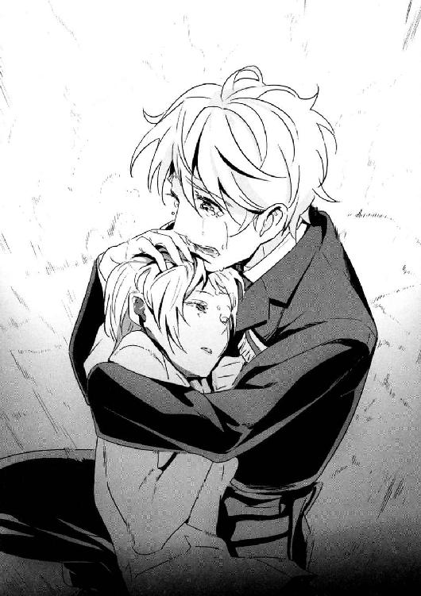
「ごめんなさい......約束を破って......」
「死なないで」
セルジュは、必死にそれだけ絞りだした。ずっと、戦場で何十年も生きてきた。そんなセルジュだが、いまだに女性が目の前で死ぬことには慣れることができない。
そういうふうに作られたのだ。
どんなに長く生きても、悲しみや苦しみの量が減らないように設定された。
「死にませんよ......死にたくないですよ......まだ、ＩＣＰＯがつかまえないといけない悪党が世界中にたくさん......」
それが、ジャニスの最後の言葉になった。
第六章 レイルロード・クライマックス
１
潜水艦で逃げたグランカたちは、途中で移動手段を飛行機に切り替えスイスへ向かった。
永世中立の平和な国──それがスイスの一般的なイメージだろう。しかし実際のスイスは、昔から犯罪的なマネーロンダリングの温床であり、第二次世界大戦中はナチス・ドイツから金塊を購入し、ナチに武器を輸出していた。スイス政府の援助のもと、ロマの子供を大量に誘拐していた時期もあった。
そしてピョートル・グランカは、数人の政府高官と闇の取り引きがあり、その結果つい最近スイス国内に堅い守りの「要塞」を作り上げることに成功した。
その要塞は、最初から魔女の秘密兵器──マンドラゴラを栽培し、兵器として使うことを前提として設計されていた。全世界衛星通信対応の強力なパラボラアンテナが四基設置されているのは、マンドラゴラの悲鳴を世界の端から端まで飛ばすためだ。
グランカの要塞──スイスの山岳鉄道を走る、軍用装甲列車である。
今は、ここがグランカの本拠地だった。
スイス政府にとって「山」は戦略上重要な拠点だった。侵略を受けた際にアルプス山脈に立てこもる計画も立てられて、その守りのかなめとして山岳鉄道が敷設された。グラルナー・アルプス山脈──標高三六二〇メートルのテディ山を中心にした特殊環状線だ。
グラルナー・アルプス軍用山岳鉄道は、国際社会の非難をあびて、一度も使われることなく広大な休止線となった。しかしレールがはがされているわけではないし、グランカが人を雇って整備したので、問題なくその上を走ることができる。
グリークスのフランス支社で、ビーバス＆バットヘッドの作戦会議が行われた。
「スイスは厄介だ......」開口一番、大迫は難しい顔をした。
「グリークスに協力的な国とは言い難い。グランカは自分の移動要塞に引っ込んだ。本来なら空爆するのが一番だが......下手に攻撃機や爆撃機を送り込めばスイス政府とまずいことになる。あと、同じ理由で大人数を使うこともできない。入国管理でちょっとでも怪しいところがあれば、スイスの汚職役人からグランカに連絡がいくだろう」
「めんどくさい話はええねん」
セルジュは無表情だ。こんなに冷たい顔、冷たい声をするのは珍しい。
「......乗り込んで、きっちりカタにハメたる」
「近づくだけで大変だよ。グランカの要塞は『移動』してる。対空の武装も完璧だろう」
「移動する要塞から『呪いの声』を世界中に飛ばすことができる、か......」
そう言って、謙吾が目を細めた。
大迫はうなずき、「第二次世界大戦のときとは違う。もしもグランカが、テレビやラジオの民間用電波で『呪いの声』を一斉に流したりしたら、死者がどれほどの数になるか想像もつかない」
グランカはすでにマンドラゴラの呪いの声を一度使ったが、それは謙吾たちの特殊作戦をサポートするための、暗号化された極めて閉鎖的な通信網を狙ったものだった。被害が数人ですんだのはそのためだった。
「つまり、大型の兵器は持ち込めない」と大迫。「移動している要塞には近づくだけでも一苦労。しかし、俺たちはグランカを倒さなきゃいけない」
「あのさ......バカな意見だったら申し訳ないんだけど......」彩離がおずおずと申し出た。「線路に爆弾しかけるってのは、ダメ？」
それを聞いて謙吾が首を横に振る。
「だから、爆弾しかける距離まで近づくのが大変って話をしてるんだよ。線路には、破壊工作に備えてセンサーもついてるはずだしな」
さらに大迫が付け加える。
「山岳地帯なのが問題。雪も残ってる可能性が高い。雪崩や山崩れが起きれば、ふもとのほうにある小さな村を巻き込んでしまうかもしれない。それでいいんなら、いくらでも線路をふっ飛ばしていい」
「......爆弾なんかいらんよ」
ずっと隅で黙って座っていた張鐘が突然口を開いた。
「俺が狙撃で線路を破壊する」
──それから数分で、作戦が決まった。
「......怖いか、ユキナ」
「まあ、少し。でも、私なら死ぬことはないから......」
民間機にカモフラージュしたグリークスの飛行機──Ｖ－22オスプレイが、高度三〇〇〇メートルでアルプス山脈上空に入る。
グリークス、海神学園特進クラスの突入チームはその貨物室にいた。
オスプレイからパラシュートで一〇〇〇メートル降下して、テディ山の高さ二〇〇〇メートルの山腹に降着地帯を定める。
謙吾と彩離はＧＥＮＥＺを着用。ユキナ、セルジュ、張鐘の三人はジャンプスーツ姿で、その下に雪原迷彩の白いアサルトスーツを着込んでいる。全員、ハーネスを介してメインパラシュートと予備パラシュートを装備。腰のベルトには、銃器や特殊作戦用のツールが詰まったバックパックをつける。
体力と頑丈さに余裕があるセルジュは、さらに張鐘のために狙撃銃が入ったケースを背負っている。普通の人間ならこんな大荷物を背負った状態でパラシュート降下すれば大けがをするかもしれない。
本当なら地上で待機しているべきの七湖も貨物室にいた。安全のためにフライトスーツ姿で酸素マスクを着用し、座席に座ってシートベルトを締めている。
残念ながら、今回の突入作戦でも七湖の役目は後方支援であり、オスプレイに同乗する必要はなかった。それでも「みんなを見送る！」といって聞かなかったのだ。
「パラシュート使うのなんて、初めてだ......！」
ユキナは不安を紛らわせるために大声で叫んだ。
オスプレイの後部ドアが開く。
「......っ！」
貨物室の気圧が急激に下がった。ゴウッ、という吸い出されるような感覚のあと、強烈なアルプスの風が舞い込んでくる。
「スタンド、イン・ザ・ドア！」
大迫が合図を飛ばした。こういうとき英語になるのは、彼が米軍で訓練を受けていた時期が長いからだろう。言われた通り、突入チームはドアの近くに立つ。
「ゴー！ ゴー！ ゴー！」
まず、ユキナが飛び降りた。次が彩離、張鐘、そしてセルジュ。最後に謙吾だ。
「謙吾！」
セルジュが飛んだ直後に、七湖がシートベルトや酸素マスクを外して立ちあがった。高度三〇〇〇ならマスクはなくとも死にはしないが、命綱もパラシュートもつけていない七湖が開いているドアに近づくのは危険以外のなにものでもない。
「危ないからさがってろ！」と、謙吾は怒鳴る。
しかし七湖は謙吾に身を寄せて、ＧＥＮＥＺのヘルメットにキスをした。
「！」
「必ず戻ってきてね......！」
七湖には、フル装備した謙吾の素顔は見えない。しかし、今のキスで彼が戸惑い、顔を真っ赤にしていると予想がつく。
「......ああ！」
力強く答えて、謙吾も飛び降りた。
急激に落ちていくユキナは、腹に力を入れて悲鳴をぐっと我慢した。
眼下に、グラルナー・アルプス山脈が広がっている。
銀嶺が連なり、氷河や小さな湖もあり、その地形は変化に富んでいる。
ジェットコースターの何十倍もひどい、内臓がひっくり返りそうな落下感に肝が冷える。風に全身が叩かれる。
一〇〇〇メートルという距離は、軍隊のパラシュート降下としては「短い」ほうに分類される。フリーフォールに慣れる間もなく、ユキナはメインのパラシュートを開く。
「......くっ！」
バンッ！ とメインのパラシュートが開いて、何かにぶつかったような、上に引っ張られるような奇妙な感覚に襲われる。
その瞬間の浮遊感、無重力感もまた心臓に悪かった。
体は風上に向け、足は伸ばし、膝を揃えて地面におりる。ＰＬＦ体勢、という。パラシュート降下は初めてのユキナも、その抜群の運動神経で見事着地に成功した。着地の衝撃で喉からうめき声を漏らす。
ようやく足がついて、ユキナは心底安堵した。地面がこんなにも愛おしいものだと、初めて気づいた。
（悪くなかった......ちょっと癖になりそう）
降着地帯は、雪山のやや開けた場所だった。ＤＺを大きく外れると、スキー向けの急な勾配を転げ落ちることになるが、さすがにこの段階でミスをするような人間は一人もいなかった。彩離、張鐘、セルジュ、謙吾の順番で次々と着地する。
パラシュートを外し、バックパックをおろす。ドロップスーツを脱いで、白いアサルトスーツ姿に。パラシュートを片づけて、バックパックから必要なものをとり出す。
ＧＥＮＥＺの謙吾と彩離、ゴーレムのセルジュはそれぞれ大型のライフルケースを背負っていた。セルジュは、自分の荷物を張鐘に渡す。
「じゃあ、俺は狙撃地点につく」
ケースを受け取って、張鐘は言った。
「俺たちは隠密待機に入る」と、ＧＥＮＥＺに内蔵された操作パネルを開きながら謙吾。「作戦開始時刻は現地時刻の○七三○。時計を合わせよう」
「わかった。お互い幸運を」
２
グラルナー・アルプス軍用山岳鉄道を、グランカの要塞が走っている。
車両全体をけん引する機関車両には、ナチス・ドイツが計画していた超特急「ゲルニカ」の機関車両が採用されていた。
前後の機関車両に各二基、合計四基のディーゼル電気式機関によって直線なら時速二四〇キロまで出せる、当時は実現しなかったドイツ第三帝国の夢の列車。
ピョートル・グランカの新しいゲルニカは一八両編成。
本来なら客車や映画館車両、高級レストラン並みの食堂車をけん引するはずだったが、移動要塞化のためにそのほとんどが装甲車両あるいは武装車両に変更されている。
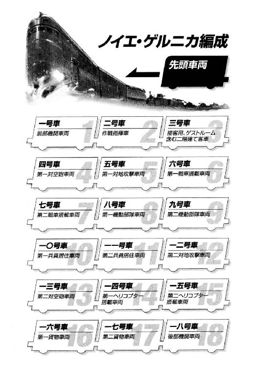
全世界衛星通信対応の強力なパラボラアンテナが四基設置されているのは、機関車両の次、二号車の作戦指揮車だ。
張鐘は狙撃地点に到着した。雪が積もった山林の中から、二キロ離れた線路を狙う。
本当はもう一人観測手が欲しいところだが、贅沢は言っていられない。
ケースを開けて、愛用の狙撃銃を取り出す。
映画や漫画などで、敵地に潜入したスナイパーが撃つ直前にその場で銃を組み立てる描写がたまにあるが、あれは大ウソだ。組み立てたばかりの銃は、照準が大きく狂っているものだ。そもそも狙撃銃の調整とは時間がかかるもので、ベンチレスト射撃用の台などに固定し、ボア・サイティングを行い、試射をして零点規正する。
使う弾丸を変えるだけで、弾が進む道は大きく変わってしまう。着弾地点を距離によって記録し、ＭＯＡを計算し──手間もかかれば頭も使う。狙撃は弾道の科学と言ってもいい。
照準を調整した狙撃銃は、分解しない。そのままケースに入れて持ち運ぶ。スコープがずれないように、専用の衝撃吸収材を敷き詰めておくのだ。
張鐘が愛用しているのは、チェイタックＭ２００インターベンション70タクティカル・スナイパーライフルという。
専用のスコープを搭載。銃声を減少させるサプレッサーを装備。使用する弾丸は四〇八口径。このライフルと自分の手で調整した弾丸があれば、たとえ標的が二キロ先でも十分に当てる自信がある。
「さてさて......」
張鐘は、二脚を使って狙撃銃を地面に設置した。
うつ伏せに銃を構え、伏射の姿勢をとる。左足を長く伸ばして右足は曲げる、エストニア型伏射姿勢である。
張鐘はスコープをのぞいて、走るノイエ・ゲルニカの姿を確認した。安全性を重視してか、速度は時速三〇キロ程度しか出していない。目的地があるわけではなく、侵入者を防ぐために走っているだけなのでその速度で十分なのだろう。
五号車と一二号車の対地攻撃車両には、ミニガンや重機関銃、さらにフルオートのグレネードマシンガンなどが設置され、のこのこ近づいていったものがミンチにされる姿が容易に想像できる。しかもあの列車には、戦車や攻撃ヘリまでのっているのだ。特殊能力やＧＥＮＥＺを持たない張鐘にとって、たとえ二キロ離れていても安心できる相手ではない。
（俺の狙撃だけで脱線させることができれば面白いんだけどな......）
ノイエ・ゲルニカから数百メートル先のレールに狙いを定める。風力、気圧、角度、すべて一瞬で計算したうえでの照準だ。
まず全身をリラックスさせて、大きく二回深呼吸。
それから息を止めて、ストックに頰をつける。
自分の感覚で最終的な照準を微調整し、引き金を絞る。
サプレッサー越しの銃声。
レールに散る火花。
張鐘の狙撃は成功した。
しかし、案の定線路には異常を感知するセンサーと警報装置がついていた。
ノイエ・ゲルニカは張鐘が撃って折れたレールの数十メートル手前でブレーキをかけ、そこに達する前に停止した。そしてほんの十秒もしないうちに、線路を修理するための整備チームと周囲を警戒するための傭兵部隊が列車から降りてくる。もし張鐘が二発目を撃ったら居場所がばれて、対地攻撃車両の猛射を浴びることになるだろう。
（まあ、こんなもんだな）
脱線させることはできなかったが、そもそも張鐘は列車をほんの一瞬でも停止させるのが仕事だった。最低限の人数を残して、ノイエ・ゲルニカは逆方向に運転を再開する。
張鐘は狙撃銃をケースに片付けて、謙吾たちより一足早く味方の回収地点に向かう。回収地点で待っていれば、ビーバス＆バットヘッドとそこで合流したあと、グリークスのオスプレイが迎えに来てくれる予定だ。
３
謙吾とユキナは、山の斜面で雪に埋もれてステルスシートを被っている。線路まで数十メートルという場所だ。
ステルスシートは赤外線や電波を遮断し、被った人間の存在を名前通り「ステルス化」する。現代版の「隠れ身の術」である。
「......激しい戦いになる。いくら不死身といっても、油断はできないぞ」
謙吾は、ユキナの耳の近くでささやいた。
二人は身を寄せ合っている。
謙吾はまだヘルメットを被らず、フックで腰に引っ掛けている。
「いいんだ......」とユキナ。「......姉がいると聞いて、本当に驚いた。両親の前に、姉から何が起きているのか話を聞きたい。姉を助けたい」
「............」
「私は、天照流のこともナイチンゲールのことも何も知らない......でも、姉はそうじゃない気がする。何か知っているんじゃないか、って......」
そうじゃなきゃ長い間監禁されないだろうな、と謙吾は思ったが口には出さなかった。
さらにユキナは続けて言う。
「それに、個人的にピョートル・グランカとやらは許せないんだ......佐鳥にひどいケガをさせて、ＩＣＰＯの捜査官たちを無残に殺した。放っておけない......！」
「ユキナの、そういうハートの強いところは最高だ」
「......謙吾が側にいてくれるからだ。だから、強くなれる」
「それは......俺も同じだ」
距離も近いし、照れてくる。謙吾は時計で時間を確認した。
「よし、時間だな」
張鐘の狙撃が成功し、ノイエ・ゲルニカが停車する。
その瞬間をねらって、謙吾とユキナはステルスシートから飛び出し、敵の監視に引っかかる前に素早く列車の底に滑りこんだ。
なにしろノイエ・ゲルニカの車両はどれも、日本で運行されている標準的な電車よりも二倍は大きい。二人で入ってもまだ少し余裕があった。
二人は列車の下部にしがみついて体を浮かせた。
彩離とセルジュは数百メートル先に、同じくステルスシートを被って待機している。謙吾とユキナの侵入がばれたら、そこでタイミングを合わせて突入してくる予定だ。
いきなり全員で強行してもいいのだが、できることなら騒ぎを大きくするのはユキナの姉を確保してからにしたい。
謙吾とユキナがとりついたのは、ノイエ・ゲルニカの最後尾、一八号車後部機関車両だった。他の車両は見張りやカメラが多く、とても忍び込める雰囲気ではなかった。
そして、ノイエ・ゲルニカは動き出す。
この列車が走る環状線は軍用の特殊なもので、膨大な支線、別線があり、しかも一部は複線化されているので、ルートを変えて簡単に本線に戻ることができる。
しばらく後部機関車両方向に進んでいたが、線路の切り替えポイントで再び停車し、改めて前進を再開する。
動き出したところで謙吾とユキナはよじ登り、ノイエ・ゲルニカの後端にあがった。
首を左右に振る防犯カメラの死角から侵入し、そのレンズが二人のほうを向く前に、謙吾はＧＥＮＥＺの電波妨害装置を使った。クロアチアと同じやり方だ。カメラの映像を乱して、セキュリティシステムに無線コネクタを接続する。
ＧＥＮＥＺに内蔵された衛星通信装置が中継点となり、離れた場所にいる七湖のハッキングが成功すればあとは楽勝だ。
しかし──。
「！」
電波妨害を始めた途端、警報が鳴り始めた。
「どういうことだ!?」
ユキナは戸惑って謙吾を見つめる。
「電波妨害に反応するセンサー系のトラップだ」
そう言って、謙吾はフルフェイスのＧＥＮＥＺヘルメットを被った。
「原始的なのに引っかかっちゃったな......」
謙吾は背負ってきたＭ14ＥＢＲライフルを、ユキナはＭＰ７サブマシンガンを構えた。
隠密作戦は早くもあきらめて、封鎖していた無線をオープンに。
「悪い、セルジュ、彩離！ 気づかれた！ そっちも突入頼む！」
それだけ告げて、再び無線を封鎖する。敵にはマンドラゴラの『呪いの声』がある。あまり長く無線を使うのはまずい。
謙吾は銃を構えたまま、後部機関車両のドアを蹴り破った。鋼鉄のドアもその鍵も、ＧＥＮＥＺの脚力なら難なく破壊できる。
燃料タンク、減速機、冷却機──そして部屋を埋め尽くす巨大な電気式ディーゼル・エンジン。機関車両の狭い通路を進んでいく謙吾とユキナ。見張りの兵士と遭遇するが、謙吾はすかさず長いライフルを半回転させつつ相手を殴り倒す。敵とはいえ、簡単には射殺しない。避けられる殺しは避けるものだ。
一七号車第二貨物車両、一六号車第一貨物車両を駆け抜ける謙吾たち。その途中にはかなりの見張りがいたが、謙吾のＭ14ＥＢＲライフルによって蹴散らされていた。ＧＥＮＥＺを着用した状態なら、七・六二ミリ口径の重いライフルも、片腕だけで拳銃のように軽々と撃てる。謙吾は正確に見張りの手足を撃って、殺しはせずに確実に戦闘能力だけを奪った。
一四号車と一五号車のヘリコプター搭載車両にさしかかる。
その車両は普通の箱型ではなかった。米軍のＡＨ－64アパッチ攻撃ヘリが、防水シートをかけただけの状態で専用の台車の上にのせられていて、あとは特に屋根も壁もなく風が当たるままになっている。
攻撃ヘリの横を通って、前に前にと進んでいく謙吾とユキナ。もちろん最終的な目標はグランカだが、まずはセルジュと彩離のために対空砲を潰しておきたい。
一三号車の第二対空砲車両にはすでにグランカに雇われた傭兵たちが集まっていた。
ノイエ・ゲルニカの対空システムは、三〇ミリ連装機関砲とＳＡ－19対空ミサイルだ。
謙吾たちにとってはまずいことに、一三号車の三〇ミリ連装機関砲の砲口はすでに一四号車に向けられていた。
「ユキナ！ 俺の背後に隠れろ！」
連装機関砲が火を噴いた。
ドッドッドッ！ と重いハンマーを打ちつけるような砲声が連続して鳴り響き、謙吾のＧＥＮＥＺに大量の着弾があって、耳障りな金属音と火花が生じる。
謙吾の剣歯虎型ＧＥＮＥＺは三〇ミリ程度ではびくともしない。しかし謙吾が構えていたＭ14ＥＢＲはあっという間にバラバラになって飛び散り、流れ弾で攻撃ヘリにかかっていた防水シートが引き裂かれていく。
三〇ミリ連装機関砲の猛射は止まらず、巻き添えをくってアパッチ攻撃ヘリに次々と大穴が開く。操縦席の防弾ガラスが粉々になり、装甲の破片が飛散する。世界トップクラスの高性能攻撃ヘリであるアパッチが、極めて近い距離で対空機関砲の攻撃を浴びて、たちまち穴だらけの鉄くずに変わっていく。
やがてアパッチの回転翼が、中心部を砲弾で破壊されて、支えを失ってガランッと下に落ちた。直径およそ十四メートルという四枚の翼だ。ちょうど半分のところで割れている。
それを見た謙吾は「使える！」と判断。
背後のユキナをかばいつつ、右手でヘリの回転翼を拾い上げた。
「！」
割れて半分とはいえ、長さは七メートル。ステンレス・スチールで構成された巨大な翼を、ＧＥＮＥＺの怪力に任せてぶん投げる。
それは凄まじい轟音を立てながら、見事砲塔のど真ん中に突き刺さった。回転翼が装甲を引き裂き、奥深くにまで食い込んで機関砲の機能を停止させる。
４
──グランカはライサの膝枕でまどろんでいる。
グランカの妻、秘書、手の届く位置にいる神様──。
ショートの金髪に、碧眼。整った顔立ちでメガネをかけたライサ。
「......よくやったわ、ピョートル。これであなたは、核よりも優れた大量破壊兵器を手に入れた。あとは、売るのも自分で使うのもあなた次第」
「俺はもう......何もかもがどうでもよくなってきているから......」
二号車、作戦指揮車両の仮眠用ベッドの上だ。
眠りかけていると、曖昧になってきた過去の記憶が閃光のように瞬く。
フラッシュバックだ。
冷戦中、グランカは偉大なる祖国ソビエトのために無数のチューブにつながれている。武器を持たなくても敵国の要人を暗殺することができる、超人兵士の開発。今日の予定は新しい兵士強化薬の実験と実験と実験。計画がスタートしたときは二〇人いた選ばれた精鋭も、今はグランカを含めてたったの四人となった。実験対象者を襲う様々な副作用。肉体的にも精神的にもダメージは蓄積していく。毎日が激痛と激痛と激痛。
「......お前が笑顔なら、それでいいんだ」
「ありがとう、ピョートル。私も、あなたの幸せだけを考えているの」
「俺の......幸せ」
自分は、ライサがいれば幸せだろうか。
超人的な戦闘能力を得た代わりに、グランカは何もかもを失っていく。
いずれライサのことさえも忘れてしまう。
「......世界を滅ぼしてしまってもいいのかもな」
冷戦が終了し、生き残った薬物強化兵士たちは非人道的な実験を隠すために殺されていった。まるでゴミでも捨てるかのように扱われた。
「あなたがそうしたいなら、止めない。私たちが人類最後の二人になるの？」
「今......久しぶりに『ちょっと面白い』と感じたよ......」
二人の時間を邪魔するように警報が鳴り響く。
「何があった？」
グランカは跳ね起きて、ノイエ・ゲルニカ車内連絡用の有線電話を手に取る。電話の相手は、一〇号車にいる警備隊長だ。
「侵入者です」
「よく入りこめたものだ......排除しろ」
数百メートル離れた小高い丘に潜んでいたセルジュと彩離も動いた。
セルジュはゴーレムの超人的なジャンプ力で、彩離は恐鳥型ＧＥＮＥＺのジェットパックを使って、ノイエ・ゲルニカに向かって飛んでいく。
第一対空砲がすぐに反応してきたが、謙吾がすでに第二対空砲を潰していたので弾幕がやや薄かった。そのおかげで、対空機関砲弾の歓迎を突破することができる。セルジュは六号車の第一戦車搭載車両に、彩離は八号車機動部隊車両に着地する。着地の衝撃で、列車の床にひび割れが走って大きくへこんだ。
セルジュが着地した車両には、戦車があった。
ロシアの主力戦車、Ｔ－90だ。
角張った積層の重装甲が特徴的なデザインで、長槍のような主砲が威容を誇っている。弾薬や燃料は入っていないようだから動かすことはできないが、使い道がないわけでもない。
「よっしゃ......！」
セルジュは、右手に火球を生み出し、戦車主砲の根元を溶かした。
そうやって五一口径一二五ミリ滑腔砲の長い砲身をもぎとり、野球のバットのように構える。長さ五メートルを超える鋼鉄の棍棒だ。
セルジュは戦車の砲身を持って、隣の五号車に殴りこんだ。
五号車は、第一対地攻撃車両だ。
ミニガンと重機関銃が、数百発、数千発の弾丸をセルジュに向かって放つ。同じ数の空薬莢が排出されて、列車の床の上を跳ねて、一部は雪山の斜面にこぼれ落ちていく。
しかしセルジュは弾丸の嵐に耐え、戦車の砲身をフルスイングした。
「いっけえええッ！」
巨大なバットと化した砲身が、グレネードマシンガンをガキンッ！ と芯でとらえた。
列車に固定していた金具が吹き飛び、グレネードマシンガンは強い打球のように転がっていき、そのまま重機関銃に激突。どちらも使い物にならなくなる。
「どしたァ！ こっからやで！」
セルジュは砲身を振り回し、ミニガンを打ち砕いた。さらに別の重機関銃に真上から叩きつけて、グシャリと平たく潰す。
セルジュは怒り狂う、荒ぶるゴーレムだった。
「大暴れだなー、セルジュ！」
と、彩離が追いついてきた。
「おお、この車両は片付いたで」
セルジュは殴りすぎて曲がってしまった砲身をぽいと捨てた。
「どうする、謙吾たちを待つ？」
「勝手に追いついてくるやろ。先を急ごうや」
「わかった！」
セルジュと彩離は四号車の対空砲車両も沈黙させ、三号車に飛び込む。
「──っ！」
「待っていたよ」
ノイエ・ゲルニカ三号車、二階建て豪華客車の一階。
ブラッディ・メアリーと──ジョン・ディー教授がそこにいた。
「お前らブチ殺さへんと、親玉には届かへんのやろ？」
そう言ってセルジュはぎらりと野獣の笑みを浮かべる。
「メアリーは、きみと違ってあまり感情がない。知能も低い。ただの戦闘用魔法生物だ。ただし、戦うことに徹しているぶん、強い。余計なものがない。そして私は不死身に限りなく近い魔術師だ。私たちは殺せない」
「そうかよ！」
と、彩離が仕掛けた。
「じゃあ、試してみるしかないじゃん！」
四人対面式の、ソファのような豪華な座席が並んだ広い客車だ。彩離は、跳び箱を越えるように座席の上を飛び跳ねて一気にジョン・ディー教授に向かっていく。
「............」
すると、敵の戦闘用ゴーレムであるブラッディ・メアリーも座席に飛び乗った。ソファの上で跳び後ろ回し蹴りを繰り出し、彩離を迎え撃つ。
「っ！」
メアリーの殺人的な回転に、彩離は咄嗟に反応した。座席のはざまに滑り込んで敵の蹴りをかわし、床に手をついて逆立ちしながらの蹴りで反撃。
メアリーを蹴りあげて、天井に叩きつける。
「伝説の男と対決か......！」
と、セルジュも駆けだした。客車中央の通路を抜けて、ディー教授に肉薄する。
「燃やしたるわ！」
両手に炎を長く伸ばすセルジュ。
左右の手に一本ずつ、炎の槍を構えているようになり、それで思い切り教授を突く。
「面白いね。きみのようなゴーレムは初めてだ。分解して調べてみたい」
セルジュの攻撃を、ディー教授は空中に生み出したエノク語の魔法円で受け止めた。
炎と光の粒子が爆発的に飛び散るが、魔法円を破ることはできない。
「くっ！」
「惜しい、もう一歩だ！」
ディー教授は、斜め上にさらにもう一個魔法円を展開。
そこから巨大な騎士の腕が伸びてきて、セルジュをぶん殴る。
鉄のかたまり同士をぶつけ合ったような凄まじい打撃音のあと、セルジュの体が横ざまに吹き飛び、窓を突き破ってノイエ・ゲルニカの外に追い出される。
「セルジュ！」
彩離の気がそれた瞬間、メアリーのハイキックが飛んできた。
避けることはできず、彩離の体も壁を突き破って外へ。
セルジュはノイエ・ゲルニカの左側、彩離は右側だ。
──謙吾とユキナも三号車に到達した。
しかし、そのときにはすでに窓と壁に大穴が開いていて、誰もいなかった。
セルジュと彩離が敵を外に叩きだして追いかけたのか──あるいはその逆か。
「戦いのあとだ......どうする？」
ユキナの問いに、謙吾は少し周囲を見回してから答える。
「無線は封鎖してる。あいつらを信用しよう」
「ああ......」
謙吾はそのまま二号車に向かおうとしたが、ユキナはふと「上」が気になって足を止めた。
ノイエ・ゲルニカの客車は二階建てだ。
「......誰かが待っている気がする」
そう言って見上げるユキナ。
「......わかった、調べてみよう」と謙吾はうなずき、二人で階段を上がる。
ユキナの勘は当たっていた。
二階のバーカウンターで、一人の少女がカクテルグラスを傾けている。
黒いブラウスにフレアーのミニスカートという場違いな服装。
長い濡羽色の黒髪と、切れ長の荒んだ目つき。
「......先に行ってて、謙吾」
「......大丈夫か？」
「うん。たぶん、二人で話したほうがいいと思う」
「そうか......何かあったらすぐに呼べよ」
謙吾はヘルメットを外した。
そして、互いの遺伝子を確かめ合うかのようにキス。
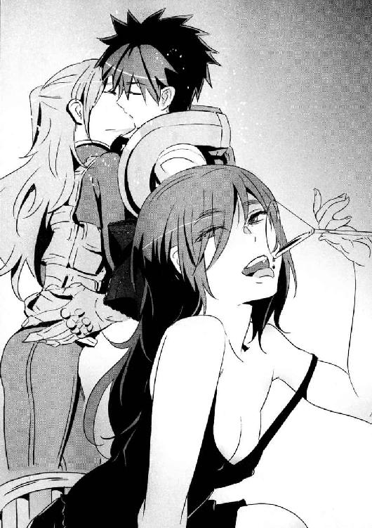
七分三十二秒間の不死を得た謙吾は、二号車へと急ぐ。
「見せつけてくれるじゃない......ユキナ」
二人きりになると、少女が口を開いた。
「やっぱり......私のことも知っているんですね」
５
列車から転げ落ちた彩離は、線路わきの山林に突っ込んだ。葉や枝にうっすらと雪が積もっている、白く染まった針葉樹の林だ。高さ三〇メートルを超える背の高い木々が日光を遮り、うす暗い身を切るような寒さの空間を作り出している。
「いてて......」
しばらく地面の上を転がってから、彩離は受け身を取ってすぐに立ちあがった。ＧＥＮＥＺが衝撃の大部分を吸収してくれたが、派手に叩きつけられたせいで節々の関節が痛む。
ノイエ・ゲルニカから少女型ゴーレム──ブラッディ・メアリーも飛び降りてきた。
高く跳んだ彼女が、ドスンッ！ と重い音を立てて彩離の目の前に着地する。
「──こっちから追いかける手間が省けた！」
と強がって、彩離はメアリーの顔面を狙って上段回し蹴りを繰り出す。
しかしメアリーは身を低くして彩離の蹴りをかわし、すかさずカウンターのタイミングで後ろ回し蹴りを放った。メアリーのカカトが、ＧＥＮＥＺのヘルメットを強打する。
（......やるなッ！）
後ろによろめく彩離。
メアリーはさらに踏み込んで、彩離の足を下段蹴りで刈って倒す。
倒した彩離の顔面を、一切の無駄なく、迷いもなく全力で踏みつけるメアリー。
「うっ......！」
彩離はジェットパックに点火して急激に加速し、メアリーの踏みつけから逃れた。間合いを離して仕切り直すことにする。木と木、枝と枝の間をギリギリですり抜けて、高さ二〇メートルほどの位置まで上昇し飛行する。
「............」
メアリーはジャンプし、木の枝につかまって反動をつけてさらにジャンプ。砲弾のような勢いで彩離を追跡する。木や太い枝を足場にして、加速を繰り返す。
「なっ!?」
彩離は追いつかれた。
ジェットパックで浮遊しながら蹴りを打つ彩離に、枝にぶらさがって鋭い蹴りを打ち返すメアリー。飛び蹴りが交錯し、足と足がぶつかり合って鈍い音が響く。こんな空中戦はもちろん初めてだ。やがてメアリーは体操競技の鉄棒のように大回転し、彩離の頭部に全身を使ったカカト落としを当てる。
「！」
彩離は地上に叩き落とされた。
「がっ！」
背中から落ちて、ジェットパックが破損してしまう。おまけにメアリーのカカト落としでヘルメットも割れたので、放り捨てる。
（凄まじい反応速度だ......）
俊敏さ、筋力──どれをとってもＧＥＮＥＺと互角かそれ以上の性能だ。改めて、戦闘用ゴーレムってのは恐ろしいもんだと彩離は思う。
それにしても、同じゴーレムといってもセルジュとは大違いだ。感情的で、怒りを隠さずに戦うセルジュに比べて、ブラッディ・メアリーはまさに感情がない戦闘機械といった感じだ。
（いや......ちょっと待てよ。感情がない戦闘機械だって？）
彩離の中で、ある考えがひらめいた。
再び、地上に降りてきたメアリーが近づいてくる。
彩離は、両腕で顔面を守って接近戦の構えを取った。ヘルメットを脱いでしまったので、これから先、下手に攻撃を食らえば即死だろう。
まず、彩離は下段蹴りでメアリーの動きを止めようとした。だが、メアリーは彩離の下段を受け流し、まったく気にせず歩き続ける。彩離のＧＥＮＥＺには足に爪がついているが、メアリーは爪の部分を上手く外して足の部分を弾き返すのだ。
彩離は休まず、今度は中段蹴り。
これも、メアリーの肘であっさりと防がれる。
諦めず、彩離はもう一度中段蹴りの挙動に入る。
メアリーは人間離れした驚異の反応速度で防御用の肘を前に出し、彩離の中段蹴りに備えた。
（ここだ！）
次の瞬間、彩離の中段蹴りが変化した。
ひゅっ、と途中から上段の軌道にのったのだ。
体が柔らかく、膝にバネがないと打つことができない、フランスの足技格闘技「サバット」の蹴りだった。
彩離の蹴りがメアリーの頭部に炸裂。ＧＥＮＥＺの爪が彼女の首筋を引き裂くが、血は流れない。かわりに、ボロボロと土の屑がこぼれる。
「......っ！」
メアリーの顔に、初めて驚きのようなものが浮かぶ。
そこに、彩離は畳みかけるように下段蹴り──と見せかけて、これも上段に変化する。またもや蹴りが命中。逆に彩離は、上段から下段に変化する蹴りを打つこともできる。下を見ながら上を蹴る、といった基本的なフェイントも織り交ぜつつ、一気に攻めたてる。
（やっぱりだ、面白いように引っかかる！）
感情がない戦闘機械だから、こちらの動きには素直に反応する。しかしそこにフェイントやハッタリといった「感情的な」攻撃が混ざると、途端に動きが鈍くなる。相手の心の動きを読むには、自分にも心がいるのだ。
「ゴーレムなんて言っても......」
力をためて、突き刺すような横蹴りを繰り出す彩離。
「お前じゃ、セルジュの足元にもおよばない！」
ＧＥＮＥＺの爪が、メアリーの胸部を貫く。
貫通する。
「かはッ......！」
メアリーの口からかすれたうめき声が漏れた。胸部を粉砕され、自分の姿を維持できなくなったゴーレムは、ほんの一瞬でただの土と泥に戻って弾け散る。
６
セルジュが吹き飛んだ先は、雪が積もった斜面だった。急な勾配の末に、数百メートル下のほうは谷になっている。
雪の上を転がるセルジュは、谷に落ちる前に踏ん張った。
「くっそ......」
セルジュは苦々しげにつぶやく。
すると──
「本当に感情が豊かだね。きみは」
いつの間にか、ジョン・ディー教授が背後に立っていた。
振り返り、ステップで間合いを取るセルジュ。
「言ったろう。きみを分解して調べたい。逃がさないよ」
老人は温和な笑みを浮かべて言った。
「お前は、グランカの知恵袋ってカンジやな」
「知恵袋か。いい表現だね」
「ピョートル・グランカ──元スペツナズが、魔女の日記やらマンドラゴラについて詳しいはずがない。ろくでもない入れ知恵をしたヤツがおる。それがお前や」
セルジュは、ディー教授に殺気のこもった視線を向ける。
「......悪くない読みだ」
ディー教授はあくまで余裕のある態度を崩さない。
「日本で暮らすようになって、俺は野球好きになった」
セルジュが突然妙なことを言い出したので、ディー教授は怪訝そうに目を細めた。
「......？」
「で、近鉄バファローズちゅうチームを応援した。弱いけど味のある試合をする、打線重視のええチームやった」
セルジュはダイアモンドより硬い首の骨をポキポキと鳴らしつつ、続ける。
「でも、ある日、球界再編なんて話が持ち上がってな。結局バファローズはなくなった。あんときの俺の怒りを数値化すると三〇くらいや」
「ふうむ......」
「ちょっと前に、恐ろしく接客態度の悪いコンビニ店員にあたってもうてな。からあげ買ったのに『温めますか？』もなし。割り箸もつけへん。で、話し方もいかにも面倒くさそうな感じでな。怒りが五ポイントくらいになった」
「きみの言いたいことがようやくわかった。なるほど、怒りの数値化か」
と、ディー教授は笑う。
「マンドラゴラの悲鳴を聞いて、きみの仲間が死んだわけだ。その怒りは何ポイントくらいになるんだ？」
「秘密や」
セルジュは即答した。
「そのかわり、お前の体に直接教えたる......！」
怒りを数字ではなく、暴力に変換するやり方もある。
火球を生み出し、投げつける。
しかし、ディー教授が展開した光の魔法円に防がれる。
他の場所にもう一つ魔法円が現れて、そこから巨大な騎士の腕が出現する。
──ここまでは「前にもやった通り」だ。
セルジュにとっての問題は、ディー教授があの魔法円を「いくつ出せる」のか。
今、魔法円の数は二個。もっと出せるのか。それともこれで限界なのか。
「ぶっ殺したるわ！」
セルジュは、炎の槍を二本生み出し、ディー教授に向かって突進する。
「......同じことを繰り返しても、無駄だぞ。ゴーレムの少年」
二本の槍は、案の定ディー教授の魔法円に防がれた。
すかさず、反撃として騎士の腕が打ちおろされる。
（よしきた！）
セルジュが狙っていたのは、このタイミングだ。
騎士の腕をジャンプでかわしつつ、ディー教授の背後に回り込む。
そこに、魔法円の防御はない。
「──っ!?」
狙いを外した騎士の腕が雪原に突き刺さり白い煙があがる中、セルジュはディー教授の頭上で半回転しつつ両足をそろえて蹴りだした。ディー教授の後頭部に思い切りドロップキックを叩き込む。
相手が普通の老人なら、これで勝負はついていただろう。セルジュに蹴られたディー教授は雪の上をバウンドし、数十メートルも転がるが──服についた雪を払いながら、彼はおっくうそうに立ち上がった。
「やるな......確実にブラッディ・メアリーより強いね」
「お前は、魔法で体も強化しとるんやな」
「正解。不死身ってわけじゃないがね。そこそこ頑丈だよ。しかし......今のは効いた。きみに好きなようにやらせていたら、本当に殺されてしまいそうだ」
「もう、諦めい」
「そうはいかん。私の力を見せよう」
そう言ってディー教授は──「三つめ」の魔法円を出現させた。
今まで出ていたのは、巨大な騎士の右腕だった。
三つ目の魔法円から、左腕が伸びてくる。
「なっ!?」
二本になった巨大な腕が、セルジュに殴りかかってきた。
サイドステップで右はかわすが、左を食らってしまう。特大サイズの拳を叩きつけられて、セルジュの体が雪の層を貫いて地面にめり込む。
「ぐうっ......！」
もう一発拳が落ちてきたので、セルジュは横に転がって避けた。そうやって安心したのも束の間、すぐに反対側の手が飛んでくる。
「しまっ──」
ディー教授が生み出した巨大な騎士の左腕に、セルジュは右腕をつかまれた。
振りほどこうとするが、力で負けている。
ゴリッと鈍い音がして、セルジュの右腕が引っこ抜かれた。
「がッ──！」
荒い息をつきながら、慌ててディー教授から離れるセルジュ。
ゴーレムなので出血は大したことはないが、大ダメージなのは間違いない。なにより、これで戦闘能力はかなり落ちた。
「勝負あったな」とディー教授。
「いやいやいや......」セルジュは、ゆっくりと首を左右に振る。「悪いが、その腕は最初からお前にやるつもりだった」
「なに......？」
「俺は精霊の炎を使う。手榴弾のようにしたり、火球を砲弾のように投げたり、槍として突き刺したり。色々なことができるが、奥の手は──『自爆』や。切り離した自分の体の一部を、そのまま時限爆弾のように使うことができる」
セルジュがその言葉を言い終えた瞬間、もぎ取られた右腕が騎士の手の中で爆発した。今までの火球とは比べ物にならない、下手をすれば雪崩を起こしそうなほどの大爆発だ。
「ばっ!?」
爆風でディー教授は吹き飛び、その表面が炎で焼ける。周囲の雪が一気に溶ける。
さすがに、かなりのダメージだったのだろう。魔法円が一斉に消失した。
「俺の──」
セルジュは超人的に加速し、爆風の影響で宙を舞うディー教授に接近。
「勝ちや！」
残った左の拳を、顔面に叩きこむ。
すべての歯と頭蓋骨を粉砕する確かな手ごたえ。
「ぶばッ」
血と折れた歯をまきちらしながら、ディー教授は深い谷に転がり落ちていった。
「天罰や......ボケが」
セルジュは線路のほうに目をやった。
ノイエ・ゲルニカは、もうかなり遠くに行ってしまったようだ。今から追いついても、やることが残っているかどうかわからない。追いついたとしても、この状態でどこまで戦えるかどうか──。
「悔しいな......俺の手でグランカは仕留めたかった......」
７
──ノイエ・ゲルニカ、三号車二階。
ユキナは、とうとう謎の少女に追いつくことができた。
「大きくなったね」
と、少女はテーブルの上にカクテルを置いて立ち上がる。
「私は岩清水ニキ。あなたの姉......になるのかな」
「......ナイチンゲール......なんですよね？」
「なんでみんな、すぐ『そっち』の言葉を使っちゃうのかしらね」
「............」
「私は『石長姫』のほうが好きよ」
「いわながひめ......？」
「不老不死の少女たちは、結構な大昔から世界各地にいたの。そのうちの数人は、日本に渡ってきて『石長姫』と呼ばれた」
「やっぱり......姉さんは物知りなんですね。思っていた通りです」
「......こっちにおいで、もっとよく顔を見せて」
「はい......」
ニキは荒んだ目をしていた──ユキナはそう思っていたが、間違いだった。今、ニキは桜の花びらが風で揺らいだような優しい微笑を浮かべている。
なぜ、さらわれたはずのニキが拘束されていないのか。なぜ、ニキは天照流の隠れ里でその存在を秘匿されていたのか──。疑問は尽きないが、少なくとも悪人ではないとユキナは判断した。
警戒心を一瞬で溶かす、魔術的、小悪魔的な微笑であった。
花の蜜に吸い寄せられるように、ユキナは姉に近づいていく。
「ユキナ」
「姉さん」
呼び合った次の瞬間、ニキは右の上段回し蹴りをユキナの側頭部に叩きこんだ。
ズパンッ！ と壮絶な打撃音のあと、ユキナは膝から崩れ落ちた。意識を失いかけるが、危ないところでこらえる。
「......えっ!?」
ニキは、続けて踏み込みながら右の肘打ち。ユキナの眉間を狙っている。
「くっ！」
大きく上体をそらして肘打ちをかわすユキナ。すぐに立ちあがって逃げるなり反撃するなりしたいが、蹴りのダメージのせいで足に力が入らない。ユキナは、スリングで脇にさげていたＭＰ７サブマシンガンを構えなおして姉に銃口を向けた。
姉の微笑が、邪悪な冷笑に変わっていた。そして、乾ききった砂漠のような荒んだ目つきに戻っている。それを見てユキナは心底「ぞっ」とした。何をされるかわからない、と本物の恐怖を覚えた。
──姉は、私のことを人間とは思っていない。
父がつぶやいたあの言葉。
『ただ一つだけはっきり言えるのは、あの娘を世に出してはいけなかったということだ......』
今、その意味が体で理解できた。
「ど......どうして、こんな!?」
「どうしてかしら。推理してみて」
再び姉が襲いかかってくる。
ユキナはサブマシンガンの引き金に指をかけているが──撃てない。
撃ちたくない。
仕方なく、ユキナはサブマシンガンをそのまま投げつけた。銃は鉄のかたまりだから、当たれば効果があると考えたのだ。しかし姉は、飛んできたサブマシンガンをあっさりとキャッチした。
「なんだか、楽しくなってきちゃった。ちょっといじめちゃおうかな」
ニキはためらうことなく、サブマシンガンの引き金を絞った。レバーがフルオートに設定されていたので、引き金を絞ったのは一瞬でも一〇発近い弾丸が射出される。ＭＰ７の小口径高速弾が、ドドドドッとユキナの体を貫通する。
「くうぅッ......！」
手足、そして腹部の肉が弾ける。内臓がかき回される。ユキナは死なないし、傷も再生するが激痛が走る。
ニキは、サブマシンガンの弾倉が空になるまでユキナをいたぶった。息も絶え絶えになったユキナの傷口を踏みつけ、指をねじ込んで悲鳴を引きずり出す。
「私は......姉さんと話がしたいだけなのに......」
ユキナはとうとう両目から透明なしずくをこぼし、必死に声を絞りだした。
悲壮なまでの覚悟が詰まったその強い視線に、ようやくニキの暴力が止む。
「......隠しているけど、いつも不安だった。この不死身の体が、いつかバケモノ扱いされるようになるんじゃないか......もしかしたら、永遠に死ねないんじゃないかって......そんなの、私には耐えられない......」
ユキナは首を左右に振って、怖い考えを振り払おうとするが、どれほどの効果があっただろうか。涙が宙を舞って微かに光る。
「今は仲間がいるけど、千年後も生きているのは私だけかもしれない......私は永遠の孤独に苦しめられることになる。そんなの、そんなの......」
声が震える。涙が止まらない。
「でも、今回の事件で姉がいることがわかった」
ユキナは手の甲で涙をふき、悲しい顔に気丈な微笑を浮かべて続ける。
「義理の両親がたくさん隠し事をしていることも。いっぱい驚いたけど......でも、心の底ではちょっとだけ喜んだ。私は一人じゃない。血のつながった姉妹がいるんだと......」
「姉妹......」
ニキは、その言葉を初めて知った子供のようにつぶやく。
「......なぜ、姉さんが私に暴力を振るうのかはわかりません。でも、受け入れます。そのあと、ほんの少しでも話をしてくれれば......何があったのか話してくれれば......それでいいんです......」
「ユキナ......」
と、ニキは妹の頰に、優しく羽毛で撫でるように手を添えた。
「とても純真でいいこなのね......」
「姉さん」
そしてニキは満面の笑みを浮かべてこう告げる。
「ユキナ、あなたは歯の一番気持ち悪い場所に挟まった豚肉の切れ端みたいよ」
「......え？」
ユキナは息を止めて自分の耳を疑った。思わず、口が少し開いてしまう。
「ヘドが出そう」
笑顔のまま、ニキは頰に添えていた手を拳に握りかえて殴りつけた。
８
移動要塞ノイエ・ゲルニカの中枢──。
二号車、作戦指揮車両。
この車両を埋め尽くすのは、『呪いの声』を世界各地に送り込むための通信機器だ。そして車両の中心には、マンドラゴラを保管しているであろう黒いアルミ合金製の倉庫がある。マンドラゴラを維持するのには、日光も水も必要ないのだ。二号車には一つも窓がなく、照明もうす暗く、ただモニタやランプ類が定期的に明滅している。
どうやら、ノイエ・ゲルニカの機関車両は速度をあげているようだ。いつの間にか、時速一〇〇キロ以上で走っている。謙吾は、加速度を体で感じている。
元スペツナズ、薬物強化兵士──ピョートル・グランカ。
目を引く雪のように白い髪は、薬物の副作用の一つだろう。
血生臭い青い瞳。年齢不詳の、冷淡をきわめた整った顔立ち。
旧ソ連の、色あせた軍用ロングコートを身につけた、筋肉質で長身の人間凶器。
「忘れかけてるんだ」とグランカ。
「......何をだ？」
「俺に、痛みを思い出させてくれよ」
「......言われなくても、そうするつもりだ」
先に仕掛けたのは、謙吾だ。
不死身のうちに、ケリをつけたい。
油断すればこちらがやられる。容赦はしない。謙吾は踏み込んで、右の牙でグランカの首を狙う。一気に頸動脈を断ち切って終わらせる。
グランカは、コートの下から特大のナイフを抜いて謙吾の牙を弾いた。
「ＧＥＮＥＺの超硬合金と同じ素材で作られた、特製のスペツナズナイフだ」
左右の手に一本ずつ、刃渡り五〇センチという大型ナイフを構えるグランカ。
移動のロスがあった。ギルガメシュの残り時間は七分を切っている。
謙吾は右の牙で敵のナイフを払い、左の牙を突き出す。
グランカは牙をギリギリのところで避けて、左右のナイフで立て続けに切り返す。ナイフがＧＥＮＥＺの表面を浅く薙いで傷が生じる。
ＧＥＮＥＺの装甲は、弾丸や砲弾の衝撃を殺し、弾き返すようにデザインされている。今回のような特殊な戦いは想定していない。グランカの怪力で、あれだけの硬さのナイフをねじ込まれたら、ＧＥＮＥＺでも耐えられないだろう。一般的な防弾ベストが、弾丸を止めることはできても、長く硬い針で突き刺すとあっさり貫通してしまうのと同じ原理だ。
ぶつかりあう牙とナイフ。
金属音が響き、二人の間で火花が散る。
やがて、グランカの右のナイフが謙吾の腹部に入った。
装甲を貫き、肉を裂き、内臓にまで届く。
──しかし、これは謙吾がわざとやらせたのだ。
謙吾はすでにギルガメシュ化している。何をやられても死にはしない。
相手のナイフがこちらの体に埋まっている間に、こちらの攻撃を当てられるはずだ。
「うおおおォッ！」
謙吾は、左の牙をグランカの右肩に突き刺した。
「ぐっ！」
グランカの無表情に、初めて苦悶らしきものが浮かぶ。
さらに謙吾は、右の牙をグランカの腹に。
勝った、と謙吾は思ったが、いくら力を込めても敵の体から牙が抜けない。
グランカが、筋肉を締めて牙を固定しているのだ。
「──なっ」
「きみの牙は痛いな。久しぶりすぎて新鮮だ」
グランカは謙吾の体からナイフを抜いた。
左右のナイフで同時に、謙吾の牙の根元を突き刺す。
超硬合金の牙と、ＧＥＮＥＺ前腕部装甲の接続部分が破壊された。そこは、鉄壁の防御力を誇るＧＥＮＥＺの中でも、比較的もろい箇所だった。
「くっ！」
謙吾はグランカから離れるが、根元で折られた二本の牙はまだグランカの体に突き刺さったままだ。しかも信じられないことに、グランカはそれを抜こうともしない。薬物で強化された体は、装甲車やゴーレムよりも頑丈なようだ。
ギルガメシュ化が切れるまで、残り五分。
謙吾が刺された傷はすでに再生している。
だが、二本の牙を失ったのは痛い。
謙吾は普段は装甲の内側に隠れているホルスターからＦＮ５・７拳銃を抜いた。
まずは二連速射でグランカの左手を撃つ。指の根元に二発。いくら彼が頑丈でも、指の防御力には限界があった。中指と人差し指が千切れて宙を舞う。謙吾はさらに二発、グランカの手首に叩きこむ。左手の大型スペツナズナイフが床に落ちる。
右のナイフも撃ち落とすために謙吾が銃口を動かすと、先にグランカがスペツナズナイフについたボタンを押した。
ロシアの特殊部隊用ナイフ、スペツナズナイフには、ボタンを押して刃の部分だけを銃弾のように撃ちだすという機能がついている。
「！」
普通のスペツナズナイフはバネの力を使っているが、グランカのものは強力な火薬が仕込まれていた。凄まじい勢いで射出された刃が、謙吾のＦＮ５・７拳銃に突き刺さった。拳銃は一瞬で切断されて、刃は謙吾の鎖骨のあたりに突き刺さる。
「牙を折られて銃もない。どうする」
と、グランカは柄だけになったスペツナズナイフを捨てた。
「あとは殴る、蹴るだ。当然だろう」
謙吾は答えて、鎖骨の上に刺さった刃を抜く。
「......俺は人形になりたくない」
グランカは言いながら謙吾に向かって間合いを詰めていく。
「俺の存在価値は戦いに勝ち、武器を売ることだ。それがなくなったら、もう魂をもたない人形と同じだ」
「平然と人を殺し、涙を流すこともない」
と、謙吾も大股でグランカに向かっていく。
「お前はもう、とっくの昔に人形なんだよ......！」
謙吾は、右のフックで殴りかかった。装甲車を破壊するＧＥＮＥＺの打撃を、グランカは左腕でがっしりと受け止めて、右を打ち返す。その右を、左手で払って防ぐ謙吾。目まぐるしい手技の攻防戦が続く。
相手の手を弾き、打ち返し、こちらの攻撃が防がれたら下段蹴りや軽いバックステップでフォローする、ハイレベルな打撃の応酬。やがて謙吾の右ストレートを、グランカは頭を滑らせるような最低限の動きでかわし、カウンターの右ボディを打ちこんだ。
「！」
ＧＥＮＥＺの装甲越しなのに、グランカの打撃は体の芯まで響いてきた。
「薬物強化兵士用の対装甲軍隊格闘技だ」とグランカ。「グリークスが誇るＧＥＮＥＺでも、そう簡単に防げるものではない」
グランカの左ジャブが謙吾の頭を揺らした。そのまま連続攻撃を繰り出す。右フックを一発、左のボディを一発、右をアッパー気味に一発。ＧＥＮＥＺの装甲が金属音の悲鳴をあげる。
「スラーブイ！」
グランカはよろめく謙吾の首をつかみ、右足をかけて押し倒した。
仰向けに床に叩きつけられる謙吾。
グランカは謙吾に馬乗りになって、上から掌底を連打した。グランカの左手は指が二本なくなっていたが、掌底打の威力には影響がなかった。ゴッ、ガッと鈍い音。
グランカの打撃を食らうと、頭部が揺れて床に打ち付けられる。これでは、一発で二度殴られているのと同じだ。まず床が割れて、それからヘルメットにひびが入る。
謙吾はマウントをとられていたが、なんとか両足をグランカの脇にさしこむことに成功した。足を引っかけて、グランカを倒しつつ自分の体を抜く。総合格闘技の中で生まれた「ＴＫシザーズ」という技術だ。関節が柔らかくなければ、ここでアウトだった。
連続技で謙吾はグランカの足をつかんで関節を極めようとしたが、グランカが素早く立ちあがっていたので手が空を切った。
謙吾も立ち上がり、中途半端に割れたヘルメットを脱ぎ捨てる。
まだ戦いは続いているのに頭部は無防備となり、残ったギルガメシュの時間は二分。
グランカが急激に加速して、謙吾の腕と腰をつかんだ。
そして、投げる。
「があああッ！」
通信機器のコンソールに叩きつけられる謙吾。体が鉄板にめりこんで、むき出しになった配線がスパークする。謙吾は投げられた直後に両腕で頭をかばったので、なんとか大ダメージを避けることはできた。
グランカは謙吾の足をつかんで、脇に挟んで振り回し始めた。
ジャイアント・スイング三回転のあと、壁に向かって放る。
謙吾はとにかく体を丸めて両腕で頭を守る。耐衝撃体勢。
二号車の壁に、背中から激突した。
装甲が折り重なった壁が大きくへこみ、割れ目が走る。
「ああ......くそ......」
謙吾は半壊した壁にもたれかかって朦朧とする。
そこに、グランカの後ろ回し蹴りがやってくる。
（やばっ！）
謙吾は足を滑らせるようにして身を低くした。
その頭上ギリギリを、グランカの足が凄まじい速度で通過する。
グランカの蹴りが、壁を完全に破壊した。吹き飛んだ装甲板が、高速で走る列車に置き去りにされる。
「うおッ!?」
壁にもたれかかっていた謙吾は、支えを失って上半身が外にはみ出した。列車から落ちそうになった謙吾は、慌てて壁に開いた大穴の縁をつかむ。
「ダ・スヴィダーニィヤ、ＧＥＮＥＺ」
そう言って、グランカは謙吾を右足で踏みつけた。力を込めて足の裏を押しつけて、謙吾を列車から追い出そうとする。
縁をつかんで必死に抵抗していたが、グランカの怪力に負けて指が外れた。腰まで押し出されて、むき出しの頭部が地面に触れる。
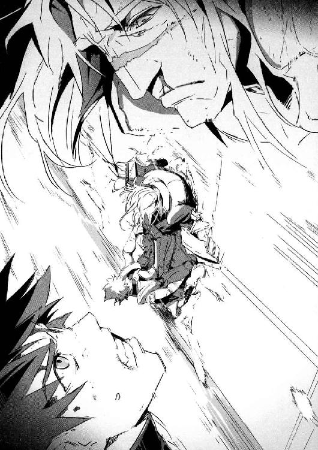
「ぎッ！」
すでにノイエ・ゲルニカは時速一五〇キロ。皮膚と肉がはがれ落ちて一瞬で頭蓋骨があらわになるが、まだギルガメシュの力が効いているので再生する──。
いや──完全には再生しなかった。
後頭部に小さな傷が残っている。
最悪のタイミングで時間切れだ。
ユキナとのキスから七分三十二秒以上が経過──。
もう、ギルガメシュではなくなった。
今度、頭が地面に触れれば致命傷。
グランカに列車から落とされても、死ぬ可能性が高い。ヘルメットがない状態で時速一五〇キロの列車から落ちるのはどう考えてもまずい。しかも落ちた先は山の斜面だ。落下の衝撃に耐えても、不自然な体勢で斜面を転げ落ちるうちに首の骨が折れても不思議はない。
グランカは、もう一度足を振り上げた。
念入りに、とどめの一撃を与えてから落とすつもりなのだろう。
謙吾は──隠し持っていた最後の武器を使うことにした。
グランカは、謙吾の拳銃を封じるためにスペツナズナイフを使った。その刃は、拳銃を切断して謙吾の鎖骨の上に突き刺さった。その刃を抜いた謙吾は、捨てずに拳銃用のホルスターに隠した。グランカに気づかれないように、こっそりと。
そして謙吾は、その刃を取り出し、手首のスナップをきかせて手裏剣のように投げた。
「外したら、二度目がないのはわかってたからな......」
スペツナズナイフの刃だけの部分が、グランカの額に突き刺さる。
「──ッ！」
「確実に当てることのできる瞬間を狙ってた」
謙吾は自分の体を持ち上げて、車内に戻った。
グランカは、自分の額に刃が突き立っていることに驚いている。
「......？」
しかし、致命傷というにはまだ浅い。
「ダ・スヴィダーニィヤ、グランカ！」
謙吾は、渾身のハイキックをグランカの頭部に向けて繰り出した。
その足がハンマーとなって、額の刃を釘のように打ち込む。
ガツン、と額の刃はグランカの頭部を貫通。
「............」
致命傷を受けたグランカはふらふらと頼りなく前のめりに数歩進んで、自分が開けた大穴から車外に転がり落ちていった。
９
やっとのことでグランカを倒して、謙吾は二階にあがった。再生し損なった後頭部の傷から血が流れていて、なんとなく頭が重い。海神学園に帰ったら精密検査だな、と思う。
二階で血まみれのユキナを見つけて、謙吾は狼狽し、駆け寄った。
「！ 何があった!? ユキナ！」
「姉だ......ニキにいたぶられた」
ケガは再生しているのに、ユキナは立ち上がれないようだった。出血の痕から、弾丸を撃ち込まれ、殴る蹴るの暴行を受けたことがわかる。ユキナのアサルトスーツはあちこち引き裂かれ、穴だらけだった。姉妹のスキンシップというには、やりすぎだ。
ユキナが立てないのは、ダメージではなく心理的なショックのせいだった。たくさん泣いた末に彼女の目の周囲は軽く腫れて、今も瞳がうるんでいる。それを見て、謙吾の胸に怒りと悲しみが入りまじった熱い感情がこみあげてきた。
「そいつはどこだ」
「姉は......謙吾が来る気配を感じて、反対側の階段から逃げていった」
「どういうつもりなんだ......どういう人間なんだ」
「わからない......ただ、ひどく恐ろしい人だ」
道理で監禁されていたわけだ、と謙吾はユキナに聞かれないよう小声でつぶやいた。
「追いかけよう」
反対側の階段を使ったのなら、一号車の方向に逃げたに違いない。
「嫌な予感がする。ユキナは二号車で待っててくれ」
本当は今のユキナを一人にしたくない。すぐにでも抱きしめたい。こんなにユキナが傷ついているなんて、謙吾は胸が締めつけられる思いだ。だがしかし、今は大勢の命がかかった戦闘の真っ最中。私情を必死に押し殺して、任務に戻る。
「......わかった」
ユキナがあっさりと了承したのは、やはり頭が混乱しているからだろう。自分の姉とされている人物が、ろくに話し合いもしないうちに暴力を振るってきたりしたら、頭を整理する時間が必要になるはずだ。
ユキナをその場に残して、一号車──前部機関車両に向かう謙吾。
嫌な予感が、と言ったのは本当だった。胸の奥にざわめくものがあった。
一号車への扉を開けて、謙吾が踏み込んだ。
ディーゼル・エンジンが大部分を占める狭い車両に、いくつかの人影があった。
「──えっ？」
一番手前にいるのが、バビロン・メディスンの傭兵だった。
巨大な腕のマルチピード・アーマー──「エンキドゥ」を装備した武田爪兵だ。
そして奥に、爪兵のナイチンゲールであるアンナトゥリーとユキナの姉がいる。
問題は、爪兵とナイチンゲールたちの中心に立っている人物だった。
硬そうな黒髪を短く刈り込んだ、長身の壮年男性。
真っ白いオックスフォードシャツに、ボタンが二列のダブルジャケット。靴はクロコダイルレザーを使ったどっしりとしたフォルムのもの。
くっきりとした二重瞼に、どこか粘着質で病的な目つき。言われなければ誰も四〇を過ぎているとは思わないであろう、若々しい容貌。
──ああ、変わっていない。「あの男」は昔のままだ。
謙吾の父親──日本の外務大臣、大牙厳一だった。
天照流の隠れ里が襲撃された際、大迫が言っていた。
『こっちが情報をつかんだはいいが、ピョートル・グランカのバックには日本の大物政治家がついていて、うかつに手を出すことはできなかった』
──日本の大物政治家。
そうか、そういうことだったのか。
「お前が裏で糸を引いていたのか！ 厳一！」
「父親を呼び捨てか。ゴミ息子が」
厳一は不愉快そうに、吐き捨てるように言った。
謙吾は、命令されるのが好きだ。
自分で考えて、自分で決めて、自分で選択するということは、実はとても辛いことだから。
命令されてやったことには、責任を感じなくていい。
戦うことをやめたら──俺の人生は空っぽになってしまう。
そう思っていた。
勘違いだった。空っぽにはならない。
戦いをやめて、海神学園をやめても、謙吾の中には怒りが残る。たとえ憎い相手をすべてこの手で叩き潰しても消えることのない怒りが。大事な時間を、まともな人生を奪われたという怒りが、残る。
謙吾は、自分の体の中ですべての血液が沸騰するような感覚に襲われる。
「連行する。グリークスの施設で尋問だ！」
謙吾は、地面を蹴って猛然と実の父親に殴りかかった。頭の重い感じは、怒りに打ち消されていた。ヘルメットはないが、それ以外のＧＥＮＥＺは機能している。
しかし、謙吾の右の拳は、横から伸びてきた巨大なてのひらに受け止められた。
「今日の俺の任務は護衛でな」
武田爪兵のエンキドゥだ。
「因果な商売だぜ。まさか敵の父親を守るなんてな」
「どけッ！」
すかさず、謙吾は爪兵に向けて後ろ回し蹴り。
爪兵は謙吾の蹴りを左腕でブロックして、そこから力任せに押し返す。後ろによろめいた謙吾はたたらを踏んだ。
「お前らいったいどういう親子なんだよ！ クソがッ！」
「どかないとマジでタダじゃすまんぞエンキドゥ！」
「サカッてんじゃねぇよ！ ＧＥＮＥＺ！ てめえ、頭が無防備で不利なんだぞ、わかってんのか！」
吠えながら、爪兵は左の前蹴りを謙吾の胸部に当てた。補助脚のローラーダッシュを使った強烈な蹴りだ。謙吾の体がキューで突かれたビリヤードボールのように扉を貫通し、結局二号車まで吹き飛ばされた。
「くっそ......！」
「ちょうどいい。今度は命をもらうぞ」
爪兵は謙吾を追いかけようとするが、その肩を厳一がつかんだ。
「目的は達成した。これ以上の戦いは無用だ」
「しかし......」
「私は依頼主だぞ？」
「......わかりました」
舌打ちしながら、爪兵は扉があった場所まで歩いていき、一号車と二号車の連結部分にエンキドゥの巨大な拳を打ちおろした。複雑な構造の連結器はまるで知恵の輪のようだったが、エンキドゥの力が一撃で完全に粉砕した。
後部の機関車両は動いていないので、一号車だけが加速し、切り離された二号車以降は減速していく。
「............」
謙吾は、急速に遠ざかっていく厳一たちを睨んでギリ、と歯ぎしりをした。
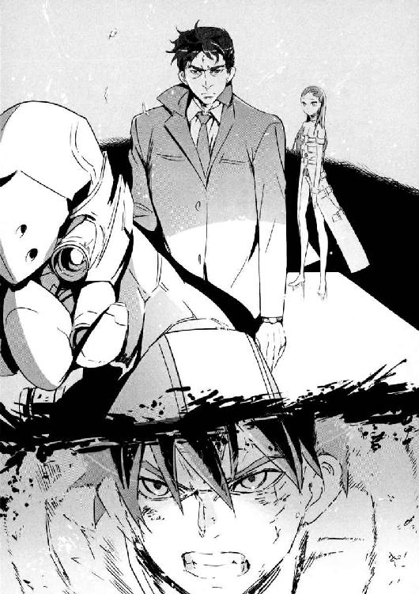
エピローグ
１
適当なところで機関車両だけになったノイエ・ゲルニカを停めて、バビロン・メディスンが手配してくれたヘリに乗り換える予定だ。
機関車両にいるのは大牙厳一、その護衛である武田爪兵とアンナトゥリー。
岩清水ニキに、グランカの妻だったライサも。
「みんなそろっているようだね」
そこに、一人の老人が煙がたつように現れた。
セルジュに倒されたはずの、ジョン・ディー教授だ。
「遅かったな、教授」と厳一。
「思っていた以上に手ごわい敵だったよ。ブラッディ・メアリーも失ったしな」
そう答えた教授の顔や体には火傷や打撲傷がまだ残っていた。さすがに無傷というわけにはいかなかったらしい。
「しかし、普通の手段で私を殺すことはできない」
「結局、マンドラゴラは三鉢しか確保できませんでしたね」
と爪兵。
厳一は、どさくさにまぎれてグランカから必要なものをかすめ取っていた。
「それだけあれば十分だ。我々の目的は、マンドラゴラを兵器として使うことじゃない」
「もうそろそろ、ライサは用済みだな」教授がそう言うと、ライサはすべて納得している顔で「はい」と深くうなずいた。
「土に還るがいい」
本当のグランカの妻は、とっくの昔に死んでいる。
このライサは、グランカをコントロールするために、ディー教授が彼の亡き妻そっくりに作ったゴーレムだ。教授がライサの胸部にずぶりと手を突っ込んで、中をまさぐり、ヘブライ語の呪文が書かれた一枚の護符を引っ張り出す。それだけのことでライサは自分の姿を維持できなくなり、ボロボロと崩れ落ちていった。
「しかし、息子も強くなったものだ。こんなことなら、捨てなければよかった」
そう言って、厳一は唇だけで笑った。
「............」
カミソリの刃の閃きに似た、あまりにも冷たい厳一の笑みを見て、怯えたアンナトゥリーが爪兵の手を握った。
爪兵は面倒くさそうにその手を振り払う。
２
Ｖ－22オスプレイで回収されて、いくつかの空港を経由してから日本へ。
「............」
移動中ずっと謙吾もユキナも口数は少なく、空気は重かった。二人を悩ませるのは、家族の問題だ。姉と父親。ニキと厳一。まともな人間には理解しがたい二人。そしてセルジュの表情も暗い。ジャニスが殺されたことは、そう簡単に忘れられるものではない。そんな空気に七湖と彩離は戸惑いを隠せない。
セルジュの腕には、大迫の手によって応急処置が施されていた。ダメージ的には、前回のビルから落下した時のほうがやばかったらしい。新世代ゴーレムの重要な機能は胸部に集中しているので、そこさえ無事なら秘術科のラボに戻れば比較的早く回復する。
飛行機内で海神学園の制服に着替えて、車で海神学園に帰還すると越智佐鳥が待っていた。まだ包帯は残っていたが、佐鳥は自分の足で立ち、その表情には余裕がある。
「もういいのか？」
ユキナが訊ねると佐鳥は笑顔で「はい！ 治りました！」と元気よく答えた。
「お前をいじめた悪い奴は、謙吾が倒した」
それを聞いて佐鳥の顔がぱっと輝く。
「ありがとうございます......！」
「なんてことはなかったよ」と謙吾。
「そういえば、師範と師範代も東京においでになっています。ホテルに泊まってるそうです」
佐鳥が言った。彼女の師範と師範代とは、つまりユキナの両親のことだ。
「今度は......何か話してくれるのかな」
ユキナは、今にも泣き出しそうな声で言った。姉にひどい目にあわされたショックから、いまだに回復できていないのだ。心の傷は体の傷よりも深く、治りにくい。ナイチンゲールの場合は、特に。
岩清水ニキ。石長姫を自称する、謎の少女。
何が目的か、謙吾の父についていったのだ。
「ユキナ......」
謙吾は、震える彼女の肩をそっと抱き寄せた。
──翌日。
学生寮にあるセルジュの部屋を、こども学長厳島アイナが訪ねた。セルジュは自分の腕を戦闘のために失っていたが、秘術科のラボで一晩過ごして今は元の状態に戻っている。人間ではありえない回復の速さは、新世代ゴーレムの強みだ。
「珍しいな、学長。こんなとこまで出てくるなんて」
「話は聞きました......大変でしたね」
「ええ、まあ......」
アイナが部屋の中に入ると、セルジュは窓を開けてスケールモデルを製作中だった。机の上に緑のカッティングマットを敷いてその上で作業している。大昔に発売された三五分の一、ドイツ重戦車キングタイガー・ポルシェ砲塔だ。脇には、ニッパーやデザインナイフ、フィニッシングペーパー、タミヤセメントなどが並んでいる。
「......ジャニスがくれたんや。ジガ・ロッツを仕留めたお礼つって」
「セルジュ......」
彼が無理をして笑ったような気がして、アイナは心配そうに瞳を揺らす。
「......大丈夫ですよ、学長。こういう悲しみにはなかなか慣れないですが、初めてってわけでもない。なんなんでしょうね、ホンマ。厄介な感情を植えつけられたもんですわ......なんで俺を作った律法学者は、いっそ心のない戦闘機械として作ってくれなかったのか」
「......そんなこと言わないでください、セルジュ」
アイナの切ない声と表情に、セルジュは「はっ」とした。
「グリークス、海神学園の仕事はほとんどが戦場に関わることです。非人道的な行為が繰り返される戦場で、たくさんの人間が心や感情を失っていく......」
アイナはまだ幼い。しかし、世界有数の名門厳島一族の看板を背負って、子供が見なくてもいいものをたくさん見てきた。彼女の言葉には、そんな実感がこもっていた。
「心や感情が壊れたら、元に戻すのは難しい。そんな中で、何十年も戦ってきたのに普通の少年のように振る舞えるセルジュは、本当に素晴らしいと思います......」
「............」
「だから、そのままのセルジュでいて」
アイナは、セルジュを祈るように見つめた。
彼の心を人間の世界につなぎとめるために──。
「ありがとうございます......学長」
固くなっていたセルジュの口元に、笑みがこぼれた。
「こういうときくらい、学長と呼ぶのはやめてください」
と、少し怒ってアイナ。
「じゃあ、アイナさん？」
セルジュがその名を口にすると、それまで瞬きもせずに見つめていたのに、アイナは顔を赤くして急に目をそらした。
「やっぱり......学長でいいです」
「変なの」
３
──そして、海神学園も夏休みに入った。
しかし本当に休めるのは、特進クラス名物の臨海学校が終わってからだ。
謙吾は、学校指定のスポーツバッグを肩に担いで学生寮を出た。貸し切りバスの前で仲間たちと待ち合わせている。
照りつける初夏の陽光を反射して、校舎を囲む雑木林──海神の城壁と呼ばれている──が青々と輝いていた。
臨海学校で特進クラスの生徒ほぼ全員が出払ってしまうため、学生寮や校舎から人の気配が消え、まるで静物画のように見える。空を見上げれば、青と白のコントラストが見事でみずみずしく美しい。地を焼くような熱気に猛暑の予感がよぎる。
考えないといけないことは山ほどある。悩みも問題も多い。だが、立ち止まる暇はなく人生は続く。うじうじと時間を無駄にするよりは、できる限り早めに頭を切り替えて、その日その日を充実したものにしていくしかない。
（久しぶりに、涼羽とどこかで会いたいな......）
妹のことを考える。涼羽も、大牙厳一のせいで人生が変わった被害者の一人だ。電話やパソコンなどでよく連絡はとりあっているが、海外でＶＩＰの家庭教師をしている涼羽と直接会う機会は少ない。臨海学校が終わったら予定を調整してみよう、と思う。
「どうなるんだろうな、まったく......」
謙吾はまぶしい太陽に目を細めて独りごちた。
──これからの人生で、奪われたものを取り返すことはできるのだろうか。
──これからの人生で、この血に濡れた両手で、どれほどの幸せがつかめるのだろうか。
駐車場に貸し切りバスが十数台並んでいる。一番右のバスの前に、ユキナ、セルジュ、彩離が集まっていた。七湖を含めてファンタスティック・フォーの面々もいる。謙吾が最後のようだ。
ユキナと七湖は、臨海学校を楽しみにしているようだった。まさかこれから、地獄の訓練が始まるとは夢にも思っていないのだろう。
臨海学校は国内ではなく、外国の海岸で行われる。バスを使うのは空港まで、だ。特殊作戦用モーターボートから上陸用ボートに乗り換えての上陸作戦演習。小型潜水艇を使っての水面下潜水奇襲作戦の演習。七湖のような装備科の人間も、ある程度肉体を酷使することになる。
「謙吾、遅いぞ！」
「はやく、はやくー！」
ユキナも七湖も笑顔だ。セルジュや彩離は、本当のことを告げるべきか悩んでいる。
──将来は不安ばかりだ。未来は約束されていたようなユートピアには遠く、二一世紀を生きる少年少女のこれからはきっとろくでもない。
それでも、仲間がいる人間は幸運だ。
いい友人は幸福を二倍に、不幸を半分にしてくれる。
「悪い、待たせた！」
謙吾は苦笑を漏らして、やや駆け足気味に仲間たちのもとへと向かっていった。
〈ＧＥＮＥＺ－３ 了〉
参考資料 「怪物の解剖学」種村季弘著 河出文庫刊／「図解近代魔術」羽仁礼著 新紀元社刊／「世界の潜水艦」グリーンアロー出版社刊／「ミリタリー雑学大百科」（part1 part2）坂本明著 文林堂刊
あとがき
恋愛って上手くいきませんよね。──まあ、人それぞれとは思いますが、上手くいかないことのほうが多いと思うんですよ。
好きなあの子は自分以外の誰かが好きだったり、好きでもなんでもない子に好かれたり。特別な誰かだと思っていたら、向こうは「ただのともだち」だってさ。そんな、よくある話。
ＧＥＮＥＺ－３では、そんな胃がキリキリくるような、それでいて甘酸っぱいような、いかにも少年少女らしい恋愛模様を作者自身も楽しんで描写させていただきました。
謙吾、ユキナ、七湖、彩離......そして学長とセルジュ。いったいこれからどうなるんでしょうか。僕は事件や謎に関しては最初にすべて設定を決めておきますが、人間関係はわざと曖昧な状態にして原稿を書き始めます。ストーリーを進めていくうちに、作者にも予想のつかない展開が起きる、そんな「不確かさ」をあえて残しておくために。
あと、恋愛要素もいいんですが、ＧＥＮＥＺではやっぱりアクションもガキガキやっていこうということで。今回は二回も列車での立ち回りが出てきます。自分の中では、国際派のアクションといえば列車なのです。００７はもちろん、ミッション・インポッシブルの劇場版一作目にもそんなシーンがありました。
そしてＧＥＮＥＺ－３。最初は近代高速列車の代表格ユーロスター。そしてクライマックスで登場するのは──ヒトラーが夢見た幻の超特急「ゲルニカ」です。マニアの間ではちょっと有名なこの列車、実現はしませんでしたが、計画の記録は残っているので、世界最悪の武器商人ピョートル・グランカの移動要塞として登場してもらいました。
ユーロスター、クロアチア、Ｕボート基地、スイス──。ＧＥＮＥＺではアクションの内容は当然として、その舞台にも凝るように心がけています。「豪華に世界各地で海外ロケをやった映画」みたいな雰囲気が好きなので、楽しんでいただければ幸いです。
今回の新キャラクターは、岩清水ニキ。「わるいナイチンゲール」ですね。
僕は昔から意地悪で性格が悪い女の子が好きです。爪兵をいたぶって喜んでるマルゴの描写なんかもそうですね。いいなあ、悪女。僕の悪女好きには、深い理由があって......という思い出話を始めようとしたら、そろそろページ数が限界みたいですね。残念。またの機会に。次の巻では、さらに恋愛模様は過熱し、戦闘も激しくなるでしょう。バビロン・メディスンの特殊部隊ニムロッドの「ユニット１」も早く登場させたい！ どんな戦いがあるのか、少年少女は何を得るのか。これからもよろしくお願いいたします！ 漫画版の連載も始まりましたよ！ 月刊少年エースです。それでは、深見真でした。
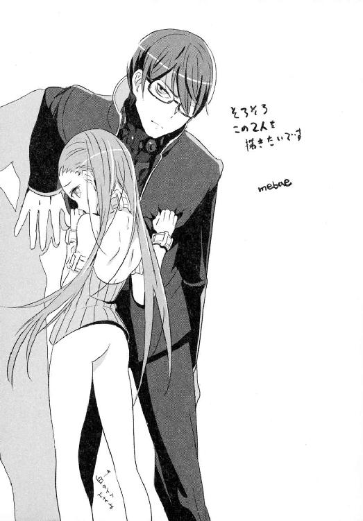
ＧＥＮＥＺ－３
ジーンズ
深見 真

平成22年2月25日 発行
発行者 山下直久
発行所 株式会社富士見書房
〒102-8144 東京都千代田区富士見1-12-14
http://www.fujimishobo.co.jp/
(C)2010 Makoto Fukami, mebae/Fujimishobo